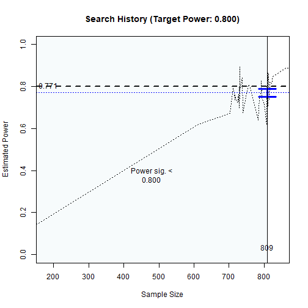
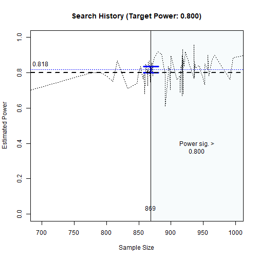
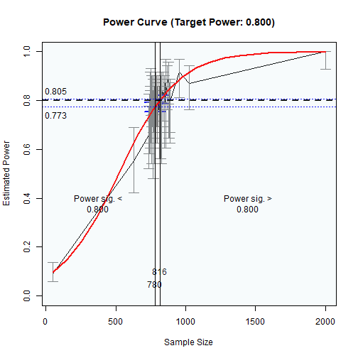
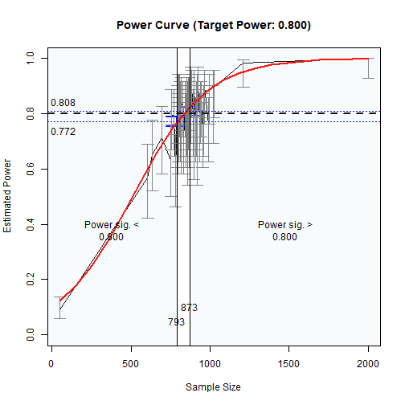

Difficult Cases for Optimization (Internal)
2026-03-10
Source:vignettes/articles/x_from_power_for_n_known_difficult_cases_pba.Rmd
x_from_power_for_n_known_difficult_cases_pba.RmdNOTE
This article is for internal testing of the printout.
library(power4mome)
options(power4mome.bz = TRUE)
mod <-
"
m ~ x
y ~ m + x
"
mod_es <-
"
m ~ x: m
y ~ m: s
y ~ x: s
"
out <- power4test(nrep = 2,
model = mod,
pop_es = mod_es,
n = 50000,
iseed = 1234)
print(out,
data_long = TRUE)
#>
#> ====================== Model Information ======================
#>
#> == Model on Factors/Variables ==
#>
#> m ~ x
#> y ~ m + x
#>
#> == Model on Variables/Indicators ==
#>
#> m ~ x
#> y ~ m + x
#>
#> ====== Population Values ======
#>
#> Regressions:
#> Population
#> m ~
#> x 0.300
#> y ~
#> m 0.100
#> x 0.100
#>
#> Variances:
#> Population
#> .m 0.910
#> .y 0.974
#> x 1.000
#>
#> (Computing indirect effects for 2 paths ...)
#>
#> == Population Conditional/Indirect Effect(s) ==
#>
#> == Indirect Effect(s) ==
#>
#> ind
#> x -> m -> y 0.030
#> x -> y 0.100
#>
#> - The 'ind' column shows the indirect effect(s).
#>
#> ======================= Data Information =======================
#>
#> Number of Replications: 2
#> Sample Sizes: 50000
#>
#> ==== Descriptive Statistics ====
#>
#> vars n mean sd skew kurtosis se
#> m 1 1e+05 0.00 1 0.01 0.03 0
#> y 2 1e+05 0.01 1 0.01 0.00 0
#> x 3 1e+05 0.00 1 0.01 0.01 0
#>
#> ===== Parameter Estimates Based on All 2 Samples Combined =====
#>
#> Total Sample Size: 100000
#>
#> ==== Standardized Estimates ====
#>
#> Variances and error variances omitted.
#>
#> Regressions:
#> est.std
#> m ~
#> x 0.301
#> y ~
#> m 0.095
#> x 0.101
#>
#>
#> ==================== Extra Element(s) Found ====================
#>
#> - fit
#>
#> === Element(s) of the First Dataset ===
#>
#> ============ <fit> ============
#>
#> lavaan 0.6-21 ended normally after 1 iteration
#>
#> Estimator ML
#> Optimization method NLMINB
#> Number of model parameters 5
#>
#> Number of observations 50000
#>
#> Model Test User Model:
#>
#> Test statistic 0.000
#> Degrees of freedom 0
out <- power4test(nrep = 200,
model = mod,
pop_es = mod_es,
n = 50,
R = 199,
ci_type = "mc",
test_fun = test_indirect_effect,
test_args = list(x = "x",
m = "m",
y = "y",
mc_ci = TRUE),
iseed = 2345,
parallel = TRUE)
print(out,
test_long = TRUE)
#>
#> ====================== Model Information ======================
#>
#> == Model on Factors/Variables ==
#>
#> m ~ x
#> y ~ m + x
#>
#> == Model on Variables/Indicators ==
#>
#> m ~ x
#> y ~ m + x
#>
#> ====== Population Values ======
#>
#> Regressions:
#> Population
#> m ~
#> x 0.300
#> y ~
#> m 0.100
#> x 0.100
#>
#> Variances:
#> Population
#> .m 0.910
#> .y 0.974
#> x 1.000
#>
#> (Computing indirect effects for 2 paths ...)
#>
#> == Population Conditional/Indirect Effect(s) ==
#>
#> == Indirect Effect(s) ==
#>
#> ind
#> x -> m -> y 0.030
#> x -> y 0.100
#>
#> - The 'ind' column shows the indirect effect(s).
#>
#> ======================= Data Information =======================
#>
#> Number of Replications: 200
#> Sample Sizes: 50
#>
#> Call print with 'data_long = TRUE' for further information.
#>
#> ==================== Extra Element(s) Found ====================
#>
#> - fit
#> - mc_out
#>
#> === Element(s) of the First Dataset ===
#>
#> ============ <fit> ============
#>
#> lavaan 0.6-21 ended normally after 1 iteration
#>
#> Estimator ML
#> Optimization method NLMINB
#> Number of model parameters 5
#>
#> Number of observations 50
#>
#> Model Test User Model:
#>
#> Test statistic 0.000
#> Degrees of freedom 0
#>
#> =========== <mc_out> ===========
#>
#>
#> == A 'mc_out' class object ==
#>
#> Number of Monte Carlo replications: 199
#>
#>
#> =============== <test_indirect: x->m->y> ===============
#>
#> Mean(s) across replication:
#> est cilo cihi sig pvalue R nlt0 alpha bz_39 bz_79 bz_119 bz_159
#> 0.032 NaN NaN 0.092 0.458 199.000 66.395 0.050 0.075 0.084 0.085 0.087
#> bz_199
#> 0.090
#>
#> - The value 'sig' is the rejection rate.
#> - If the null hypothesis is false, this is the power.
#> - Number of valid replications for rejection rate: 200
#> - Proportion of valid replications for rejection rate: 1.000
out_n <- n_from_power(out,
what = "ub",
seed = 4567,
final_nrep = 2000,
algorithm = "probabilistic_bisection")
#>
#> --- Setting ---
#>
#> Algorithm: probabilistic_bisection
#> Goal: close_enough
#> What: ub (Upper bound of the confidence interval)
#>
#> --- Progress ---
#>
#> - Set 'progress = FALSE' to suppress displaying the progress.
#> Initial interval: [50, 2000]
#> Do the simulation for the lower bound ...
#> Do the simulation for the upper bound ...
#> Search Progress Note:
#> - #: Iteration number
#> - nrep: The number of replications
#> - n/es: The value to try
#> - TE: Time elapsed
#> - ETA: Estimated time to do all 5000 replications and one final check
#> - Rep: The number of replications used out of the total number of replications
#> - Dx: The range of changes of x in the last 5 iterations
#> - Df: The range of changes of f in the last 5 iterations
#> - PP: The region(s) of probable power
#> #:1|nrep:50|n:1025|Rep:50/5000
#:1|nrep:50|n:1025|TE:0.0177 secs|Rep:50/5000
#> #:1|nrep:50|n:1025|TE:0.0177 secs|Rep:50/5000|PP:[0.083,0.845]
#> #:2|nrep:50|n:613|TE:1.66 secs|ETA:1.85 mins|Rep:100/5000|PP:[0.083,0.845]
#> #:2|nrep:50|n:613|TE:1.66 secs|ETA:1.85 mins|Rep:100/5000|PP:[0.549,0.998]
#> #:3|nrep:50|n:862|TE:3.25 secs|ETA:2.39 mins|Rep:150/5000|PP:[0.549,0.998]
#> #:3|nrep:50|n:862|TE:3.25 secs|ETA:2.39 mins|Rep:150/5000|PP:[0.586,0.909]
#> #:4|nrep:50|n:729|TE:4.89 secs|ETA:2.69 mins|Rep:200/5000|PP:[0.586,0.909]
#> #:4|nrep:50|n:729|TE:4.89 secs|ETA:2.69 mins|Rep:200/5000|PP:[0.611,0.922]
#> #:5|nrep:50|n:711|TE:6.56 secs|ETA:2.86 mins|Rep:250/5000|PP:[0.611,0.922]
#> #:5|nrep:50|n:711|TE:6.56 secs|ETA:2.86
#> mins|Rep:250/5000|Dx:412|Df:0.267|PP:[0.…
#:5|nrep:50|n:711|TE:6.56
#> secs|ETA:2.86 mins|Rep:250/5000|Dx:412|Df:0.267|PP:[0.…
#> #:6|nrep:50|n:702|TE:8.2 secs|ETA:2.96
#> mins|Rep:300/5000|Dx:412|Df:0.267|PP:[0.0…
#:6|nrep:50|n:702|TE:8.2
#> secs|ETA:2.96 mins|Rep:300/5000|Dx:249|Df:0.267|PP:[0.0…
#> #:6|nrep:50|n:702|TE:8.2 secs|ETA:2.96
#> mins|Rep:300/5000|Dx:249|Df:0.267|PP:[0.6…
#:7|nrep:50|n:786|TE:9.83
#> secs|ETA:3.02 mins|Rep:350/5000|Dx:249|Df:0.267|PP:[0.…
#> #:7|nrep:50|n:786|TE:9.83 secs|ETA:3.02
#> mins|Rep:350/5000|Dx:160|Df:0.215|PP:[0.…
#:7|nrep:50|n:786|TE:9.83
#> secs|ETA:3.02 mins|Rep:350/5000|Dx:160|Df:0.215|PP:[0.…
#> #:8|nrep:50|n:816|TE:11.5 secs|ETA:3.06
#> mins|Rep:400/5000|Dx:160|Df:0.215|PP:[0.…
#:8|nrep:50|n:816|TE:11.5
#> secs|ETA:3.06 mins|Rep:400/5000|Dx:114|Df:0.150|PP:[0.…
#> #:8|nrep:50|n:816|TE:11.5 secs|ETA:3.06
#> mins|Rep:400/5000|Dx:114|Df:0.150|PP:[0.…
#:9|nrep:50|n:791|TE:13.1
#> secs|ETA:3.08 mins|Rep:450/5000|Dx:114|Df:0.150|PP:[0.…
#> #:9|nrep:50|n:791|TE:13.1 secs|ETA:3.08
#> mins|Rep:450/5000|Dx:114|Df:0.150|PP:[0.…
#:9|nrep:50|n:791|TE:13.1
#> secs|ETA:3.08 mins|Rep:450/5000|Dx:114|Df:0.150|PP:[0.…
#> #:10|nrep:50|n:792|TE:14.8 secs|ETA:3.1
#> mins|Rep:500/5000|Dx:114|Df:0.150|PP:[0.…
#:10|nrep:50|n:792|TE:14.8
#> secs|ETA:3.1 mins|Rep:500/5000|Dx:114|Df:0.152|PP:[0.…
#> #:10|nrep:50|n:792|TE:14.8 secs|ETA:3.1
#> mins|Rep:500/5000|Dx:114|Df:0.152|PP:[0.…
#:11|nrep:50|n:760|TE:16.5
#> secs|ETA:3.12 mins|Rep:550/5000|Dx:114|Df:0.152|PP:[0…
#> #:11|nrep:50|n:760|TE:16.5 secs|ETA:3.12
#> mins|Rep:550/5000|Dx:56|Df:0.080|PP:[0.…
#:11|nrep:50|n:760|TE:16.5
#> secs|ETA:3.12 mins|Rep:550/5000|Dx:56|Df:0.080|PP:[0.…
#> #:12|nrep:50|n:755|TE:18.3 secs|ETA:3.14
#> mins|Rep:600/5000|Dx:56|Df:0.080|PP:[0.…
#:12|nrep:50|n:755|TE:18.3
#> secs|ETA:3.14 mins|Rep:600/5000|Dx:61|Df:0.047|PP:[0.…
#> #:12|nrep:50|n:755|TE:18.3 secs|ETA:3.14
#> mins|Rep:600/5000|Dx:61|Df:0.047|PP:[0.…
#:13|nrep:50|n:738|TE:20.2
#> secs|ETA:3.16 mins|Rep:650/5000|Dx:61|Df:0.047|PP:[0.…
#> #:13|nrep:50|n:738|TE:20.2 secs|ETA:3.16
#> mins|Rep:650/5000|Dx:54|Df:0.062|PP:[0.…
#:13|nrep:50|n:738|TE:20.2
#> secs|ETA:3.16 mins|Rep:650/5000|Dx:54|Df:0.062|PP:[0.…
#> #:14|nrep:50|n:715|TE:22.2 secs|ETA:3.19
#> mins|Rep:700/5000|Dx:54|Df:0.062|PP:[0.…
#:14|nrep:50|n:715|TE:22.2
#> secs|ETA:3.19 mins|Rep:700/5000|Dx:77|Df:0.068|PP:[0.…
#> #:14|nrep:50|n:715|TE:22.2 secs|ETA:3.19
#> mins|Rep:700/5000|Dx:77|Df:0.068|PP:[0.…
#:15|nrep:50|n:716|TE:24.2
#> secs|ETA:3.21 mins|Rep:750/5000|Dx:77|Df:0.068|PP:[0.…
#> #:15|nrep:50|n:716|TE:24.2 secs|ETA:3.21
#> mins|Rep:750/5000|Dx:45|Df:0.103|PP:[0.…
#:15|nrep:50|n:716|TE:24.2
#> secs|ETA:3.21 mins|Rep:750/5000|Dx:45|Df:0.103|PP:[0.…
#:16|nrep:50|n:727|TE:26
#> secs|ETA:3.21 mins|Rep:800/5000|Dx:45|Df:0.103|PP:[0.63…
#> #:16|nrep:50|n:727|TE:26 secs|ETA:3.21
#> mins|Rep:800/5000|Dx:40|Df:0.103|PP:[0.63…
#:16|nrep:50|n:727|TE:26
#> secs|ETA:3.21 mins|Rep:800/5000|Dx:40|Df:0.103|PP:[0.63…
#> #:17|nrep:50|n:731|TE:27.9 secs|ETA:3.21
#> mins|Rep:850/5000|Dx:40|Df:0.103|PP:[0.…
#:17|nrep:50|n:731|TE:27.9
#> secs|ETA:3.21 mins|Rep:850/5000|Dx:23|Df:0.103|PP:[0.…
#> #:17|nrep:50|n:731|TE:27.9 secs|ETA:3.21
#> mins|Rep:850/5000|Dx:23|Df:0.103|PP:[0.…
#:18|nrep:50|n:730|TE:30 secs|ETA:3.22
#> mins|Rep:900/5000|Dx:23|Df:0.103|PP:[0.63…
#:18|nrep:50|n:730|TE:30
#> secs|ETA:3.22 mins|Rep:900/5000|Dx:16|Df:0.048|PP:[0.63…
#> #:18|nrep:50|n:730|TE:30 secs|ETA:3.22
#> mins|Rep:900/5000|Dx:16|Df:0.048|PP:[0.63…
#:19|nrep:50|n:730|TE:31.9
#> secs|ETA:3.21 mins|Rep:950/5000|Dx:16|Df:0.048|PP:[0.…
#> #:19|nrep:50|n:730|TE:31.9 secs|ETA:3.21
#> mins|Rep:950/5000|Dx:15|Df:0.155|PP:[0.…
#:19|nrep:50|n:730|TE:31.9
#> secs|ETA:3.21 mins|Rep:950/5000|Dx:15|Df:0.155|PP:[0.…
#> #:20|nrep:50|n:717|TE:33.7 secs|ETA:3.2
#> mins|Rep:1000/5000|Dx:15|Df:0.155|PP:[0.…
#:20|nrep:50|n:717|TE:33.7
#> secs|ETA:3.2 mins|Rep:1000/5000|Dx:14|Df:0.133|PP:[0.…
#> #:20|nrep:50|n:717|TE:33.7 secs|ETA:3.2
#> mins|Rep:1000/5000|Dx:14|Df:0.133|PP:[0.…
#:21|nrep:50|n:719|TE:35.7
#> secs|ETA:3.19 mins|Rep:1050/5000|Dx:14|Df:0.133|PP:[0…
#> #:21|nrep:50|n:719|TE:35.7 secs|ETA:3.19
#> mins|Rep:1050/5000|Dx:14|Df:0.144|PP:[0…
#:21|nrep:50|n:719|TE:35.7
#> secs|ETA:3.19 mins|Rep:1050/5000|Dx:14|Df:0.144|PP:[0…
#> #:22|nrep:50|n:723|TE:37.6 secs|ETA:3.18
#> mins|Rep:1100/5000|Dx:14|Df:0.144|PP:[0…
#:22|nrep:50|n:723|TE:37.6
#> secs|ETA:3.18 mins|Rep:1100/5000|Dx:13|Df:0.169|PP:[0…
#> #:22|nrep:50|n:723|TE:37.6 secs|ETA:3.18
#> mins|Rep:1100/5000|Dx:13|Df:0.169|PP:[0…
#:23|nrep:50|n:727|TE:39.5
#> secs|ETA:3.16 mins|Rep:1150/5000|Dx:13|Df:0.169|PP:[0…
#> #:23|nrep:50|n:727|TE:39.5 secs|ETA:3.16
#> mins|Rep:1150/5000|Dx:13|Df:0.169|PP:[0…
#:23|nrep:50|n:727|TE:39.5
#> secs|ETA:3.16 mins|Rep:1150/5000|Dx:13|Df:0.169|PP:[0…
#> #:24|nrep:50|n:729|TE:41.4 secs|ETA:3.15
#> mins|Rep:1200/5000|Dx:13|Df:0.169|PP:[0…
#:24|nrep:50|n:729|TE:41.4
#> secs|ETA:3.15 mins|Rep:1200/5000|Dx:12|Df:0.061|PP:[0…
#> #:24|nrep:50|n:729|TE:41.4 secs|ETA:3.15
#> mins|Rep:1200/5000|Dx:12|Df:0.061|PP:[0…
#:25|nrep:50|n:740|TE:43.4
#> secs|ETA:3.14 mins|Rep:1250/5000|Dx:12|Df:0.061|PP:[0…
#> #:25|nrep:50|n:740|TE:43.4 secs|ETA:3.14
#> mins|Rep:1250/5000|Dx:21|Df:0.073|PP:[0…
#:25|nrep:50|n:740|TE:43.4
#> secs|ETA:3.14 mins|Rep:1250/5000|Dx:21|Df:0.073|PP:[0…
#> #:26|nrep:50|n:783|TE:45.4 secs|ETA:3.13
#> mins|Rep:1300/5000|Dx:21|Df:0.073|PP:[0…
#:26|nrep:50|n:783|TE:45.4
#> secs|ETA:3.13 mins|Rep:1300/5000|Dx:60|Df:0.087|PP:[0…
#> #:26|nrep:50|n:783|TE:45.4 secs|ETA:3.13
#> mins|Rep:1300/5000|Dx:60|Df:0.087|PP:[0…
#:27|nrep:50|n:812|TE:47.4
#> secs|ETA:3.11 mins|Rep:1350/5000|Dx:60|Df:0.087|PP:[0…
#> #:27|nrep:50|n:812|TE:47.4 secs|ETA:3.11
#> mins|Rep:1350/5000|Dx:85|Df:0.220|PP:[0…
#:27|nrep:50|n:812|TE:47.4
#> secs|ETA:3.11 mins|Rep:1350/5000|Dx:85|Df:0.220|PP:[0…
#> #:28|nrep:50|n:794|TE:49.4 secs|ETA:3.1
#> mins|Rep:1400/5000|Dx:85|Df:0.220|PP:[0.…
#:28|nrep:50|n:794|TE:49.4
#> secs|ETA:3.1 mins|Rep:1400/5000|Dx:83|Df:0.220|PP:[0.…
#> #:28|nrep:50|n:794|TE:49.4 secs|ETA:3.1
#> mins|Rep:1400/5000|Dx:83|Df:0.220|PP:[0.…
#:29|nrep:50|n:801|TE:51.3
#> secs|ETA:3.08 mins|Rep:1450/5000|Dx:83|Df:0.220|PP:[0…
#> #:29|nrep:50|n:801|TE:51.3 secs|ETA:3.08
#> mins|Rep:1450/5000|Dx:72|Df:0.220|PP:[0…
#:29|nrep:50|n:801|TE:51.3
#> secs|ETA:3.08 mins|Rep:1450/5000|Dx:72|Df:0.220|PP:[0…
#> #:30|nrep:50|n:808|TE:53.4 secs|ETA:3.06
#> mins|Rep:1500/5000|Dx:72|Df:0.220|PP:[0…
#:30|nrep:50|n:808|TE:53.4
#> secs|ETA:3.06 mins|Rep:1500/5000|Dx:29|Df:0.220|PP:[0…
#> #:30|nrep:50|n:808|TE:53.4 secs|ETA:3.06
#> mins|Rep:1500/5000|Dx:29|Df:0.220|PP:[0…
#:31|nrep:50|n:807|TE:55.3
#> secs|ETA:3.04 mins|Rep:1550/5000|Dx:29|Df:0.220|PP:[0…
#> #:31|nrep:50|n:807|TE:55.3 secs|ETA:3.04
#> mins|Rep:1550/5000|Dx:18|Df:0.242|PP:[0…
#:31|nrep:50|n:807|TE:55.3
#> secs|ETA:3.04 mins|Rep:1550/5000|Dx:18|Df:0.242|PP:[0…
#> #:32|nrep:50|n:825|TE:57.3 secs|ETA:3.02
#> mins|Rep:1600/5000|Dx:18|Df:0.242|PP:[0…
#:32|nrep:50|n:825|TE:57.3
#> secs|ETA:3.02 mins|Rep:1600/5000|Dx:31|Df:0.231|PP:[0…
#> #:32|nrep:50|n:825|TE:57.3 secs|ETA:3.02
#> mins|Rep:1600/5000|Dx:31|Df:0.231|PP:[0…
#:33|nrep:50|n:810|TE:59.5
#> secs|ETA:3.01 mins|Rep:1650/5000|Dx:31|Df:0.231|PP:[0…
#> #:33|nrep:50|n:810|TE:59.5 secs|ETA:3.01
#> mins|Rep:1650/5000|Dx:24|Df:0.231|PP:[0…
#:33|nrep:50|n:810|TE:59.5
#> secs|ETA:3.01 mins|Rep:1650/5000|Dx:24|Df:0.231|PP:[0…
#> #:34|nrep:50|n:810|TE:1.03 mins|ETA:2.99
#> mins|Rep:1700/5000|Dx:24|Df:0.231|PP:[0…
#:34|nrep:50|n:810|TE:1.03
#> mins|ETA:2.99 mins|Rep:1700/5000|Dx:18|Df:0.231|PP:[0…
#> #:34|nrep:50|n:810|TE:1.03 mins|ETA:2.99
#> mins|Rep:1700/5000|Dx:18|Df:0.231|PP:[0…
#:35|nrep:50|n:814|TE:1.06
#> mins|ETA:2.97 mins|Rep:1750/5000|Dx:18|Df:0.231|PP:[0…
#> #:35|nrep:50|n:814|TE:1.06 mins|ETA:2.97
#> mins|Rep:1750/5000|Dx:18|Df:0.231|PP:[0…
#:35|nrep:50|n:814|TE:1.06
#> mins|ETA:2.97 mins|Rep:1750/5000|Dx:18|Df:0.231|PP:[0…
#> #:36|nrep:50|n:822|TE:1.09 mins|ETA:2.95
#> mins|Rep:1800/5000|Dx:18|Df:0.231|PP:[0…
#:36|nrep:50|n:822|TE:1.09
#> mins|ETA:2.95 mins|Rep:1800/5000|Dx:15|Df:0.143|PP:[0…
#> #:36|nrep:50|n:822|TE:1.09 mins|ETA:2.95
#> mins|Rep:1800/5000|Dx:15|Df:0.143|PP:[0…
#:37|nrep:50|n:816|TE:1.12
#> mins|ETA:2.92 mins|Rep:1850/5000|Dx:15|Df:0.143|PP:[0…
#> #:37|nrep:50|n:816|TE:1.12 mins|ETA:2.92
#> mins|Rep:1850/5000|Dx:12|Df:0.117|PP:[0…
#:37|nrep:50|n:816|TE:1.12
#> mins|ETA:2.92 mins|Rep:1850/5000|Dx:12|Df:0.117|PP:[0…
#> #:38|nrep:50|n:813|TE:1.16 mins|ETA:2.9
#> mins|Rep:1900/5000|Dx:12|Df:0.117|PP:[0.…
#:38|nrep:50|n:813|TE:1.16
#> mins|ETA:2.9 mins|Rep:1900/5000|Dx:12|Df:0.134|PP:[0.…
#> #:38|nrep:50|n:813|TE:1.16 mins|ETA:2.9
#> mins|Rep:1900/5000|Dx:12|Df:0.134|PP:[0.…
#:39|nrep:50|n:811|TE:1.19
#> mins|ETA:2.87 mins|Rep:1950/5000|Dx:12|Df:0.134|PP:[0…
#> #:39|nrep:50|n:811|TE:1.19 mins|ETA:2.87
#> mins|Rep:1950/5000|Dx:11|Df:0.125|PP:[0…
#:39|nrep:50|n:811|TE:1.19
#> mins|ETA:2.87 mins|Rep:1950/5000|Dx:11|Df:0.125|PP:[0…
#> #:40|nrep:50|n:810|TE:1.22 mins|ETA:2.85
#> mins|Rep:2000/5000|Dx:11|Df:0.125|PP:[0…
#:40|nrep:50|n:810|TE:1.22
#> mins|ETA:2.85 mins|Rep:2000/5000|Dx:12|Df:0.049|PP:[0…
#> #:40|nrep:50|n:810|TE:1.22 mins|ETA:2.85
#> mins|Rep:2000/5000|Dx:12|Df:0.049|PP:[0…
#:41|nrep:50|n:808|TE:1.26
#> mins|ETA:2.83 mins|Rep:2050/5000|Dx:12|Df:0.049|PP:[0…
#> #:41|nrep:50|n:808|TE:1.26 mins|ETA:2.83
#> mins|Rep:2050/5000|Dx:8|Df:0.119|PP:[0.…
#:41|nrep:50|n:808|TE:1.26
#> mins|ETA:2.83 mins|Rep:2050/5000|Dx:8|Df:0.119|PP:[0.…
#> #:42|nrep:50|n:809|TE:1.29 mins|ETA:2.8
#> mins|Rep:2100/5000|Dx:8|Df:0.119|PP:[0.7…
#:42|nrep:50|n:809|TE:1.29
#> mins|ETA:2.8 mins|Rep:2100/5000|Dx:5|Df:0.119|PP:[0.7…
#> #:42|nrep:50|n:809|TE:1.29 mins|ETA:2.8
#> mins|Rep:2100/5000|Dx:5|Df:0.119|PP:[0.7…
#:43|nrep:50|n:809|TE:1.32
#> mins|ETA:2.78 mins|Rep:2150/5000|Dx:5|Df:0.119|PP:[0.…
#> #:43|nrep:50|n:809|TE:1.32 mins|ETA:2.78
#> mins|Rep:2150/5000|Dx:3|Df:0.170|PP:[0.…
#:43|nrep:50|n:809|TE:1.32
#> mins|ETA:2.78 mins|Rep:2150/5000|Dx:3|Df:0.170|PP:[0.…
#> #:44|nrep:50|n:810|TE:1.36 mins|ETA:2.75
#> mins|Rep:2200/5000|Dx:3|Df:0.170|PP:[0.…
#:44|nrep:50|n:810|TE:1.36
#> mins|ETA:2.75 mins|Rep:2200/5000|Dx:2|Df:0.158|PP:[0.…
#> #:44|nrep:50|n:810|TE:1.36 mins|ETA:2.75
#> mins|Rep:2200/5000|Dx:2|Df:0.158|PP:[0.…
#:45|nrep:50|n:809|TE:1.39
#> mins|ETA:2.73 mins|Rep:2250/5000|Dx:2|Df:0.158|PP:[0.…
#> #:45|nrep:50|n:809|TE:1.39 mins|ETA:2.73
#> mins|Rep:2250/5000|Dx:2|Df:0.131|PP:[0.…
#:45|nrep:50|n:809|TE:1.39
#> mins|ETA:2.73 mins|Rep:2250/5000|Dx:2|Df:0.131|PP:[0.…
#> #:46|nrep:50|n:809|TE:1.43 mins|ETA:2.71
#> mins|Rep:2300/5000|Dx:2|Df:0.131|PP:[0.…
#:46|nrep:50|n:809|TE:1.43
#> mins|ETA:2.71 mins|Rep:2300/5000|Dx:1|Df:0.131|PP:[0.…
#> #:46|nrep:50|n:809|TE:1.43 mins|ETA:2.71
#> mins|Rep:2300/5000|Dx:1|Df:0.131|PP:[0.…
#>
#> Do Final Check 1: The range of changes of x in the last 5 iterations is less than 2.
#> #:47|nrep:2000|n:809|TE:1.47 mins|ETA:2.78
#> mins|Rep:2300/5000|Dx:1|Df:0.131|PP:[…
#>
#> Updating the simulation for sample size: 809
#> Re-simulate the data:
#> Fit the model(s):
#> Generate Monte Carlo estimates:
#> Update the test(s):
#> Update test_indirect: x->m->y :
#> #:47|nrep:2000|n:809|TE:1.47 mins|ETA:2.78
#> mins|Rep:2300/5000|Dx:1|Df:0.131|PP:[…
#>
#> ** Search ended **: Solution found.
#> Summary:
#> - Number of iterations: 47
#> - Number of replications: 2300
#> - Time elapsed: 2.037 mins
#> - The range of changes x in the last 5 iteration: 1
#> - The range of changes f in the last 5 iteration: 0.131
#> - 'nls()' estimation failed. Switch to logistic regression.
#> Solution found.
#>
#>
#> ========== Final Stage ==========
#>
#> - Start at 2026-03-10 20:08:03
#> - Rejection Rates:
#>
#> [test]: test_indirect: x->m->y
#> [test_label]: Test
#> n est p.v nrep reject r.cilo r.cihi
#> 1 50 0.032 1.000 200 0.092 0.058 0.138
#> 2 50 0.027 1.000 50 0.039 0.011 0.135
#> 3 613 0.030 1.000 50 0.621 0.482 0.741
#> 4 702 0.030 1.000 50 0.673 0.542 0.792
#> 5 711 0.031 1.000 50 0.795 0.670 0.888
#> 6 715 0.030 1.000 50 0.772 0.648 0.872
#> 7 716 0.033 1.000 50 0.738 0.604 0.841
#> 8 717 0.029 1.000 50 0.760 0.626 0.857
#> 9 719 0.029 1.000 50 0.749 0.604 0.841
#> 10 723 0.030 1.000 50 0.723 0.583 0.825
#> 11 727 0.029 1.000 50 0.764 0.626 0.857
#> 12 727 0.028 1.000 50 0.726 0.583 0.825
#> 13 729 0.030 1.000 50 0.800 0.670 0.888
#> 14 729 0.028 1.000 50 0.699 0.562 0.809
#> 15 730 0.030 1.000 50 0.783 0.648 0.872
#> 16 730 0.031 1.000 50 0.893 0.786 0.957
#> 17 731 0.033 1.000 50 0.786 0.648 0.872
#> 18 738 0.031 1.000 50 0.840 0.715 0.917
#> 19 740 0.030 1.000 50 0.676 0.542 0.792
#> 20 755 0.032 1.000 50 0.810 0.670 0.888
#> 21 760 0.030 1.000 50 0.795 0.670 0.888
#> 22 783 0.028 1.000 50 0.640 0.501 0.759
#> 23 786 0.029 1.000 50 0.746 0.604 0.841
#> 24 791 0.029 1.000 50 0.778 0.648 0.872
#> 25 792 0.030 1.000 50 0.825 0.692 0.902
#> 26 794 0.028 1.000 50 0.747 0.604 0.841
#> 27 801 0.030 1.000 50 0.715 0.583 0.825
#> 28 807 0.025 1.000 50 0.617 0.482 0.741
#> 29 808 0.031 1.000 50 0.800 0.670 0.888
#> 30 808 0.030 1.000 50 0.745 0.604 0.841
#> 31 809 0.030 1.000 50 0.755 0.626 0.857
#> 32 809 0.027 1.000 50 0.694 0.562 0.809
#> 33 809 0.028 1.000 50 0.755 0.626 0.857
#> 34 809 0.028 1.000 50 0.729 0.583 0.825
#> 35 809 0.030 1.000 2000 0.771 0.752 0.789
#> 36 810 0.028 1.000 50 0.779 0.648 0.872
#> 37 810 0.029 1.000 50 0.705 0.562 0.809
#> 38 810 0.031 1.000 50 0.851 0.738 0.930
#> 39 810 0.032 1.000 50 0.825 0.692 0.902
#> 40 811 0.032 1.000 50 0.864 0.738 0.930
#> 41 812 0.031 1.000 50 0.859 0.738 0.930
#> 42 813 0.031 1.000 50 0.839 0.715 0.917
#> 43 814 0.029 1.000 50 0.739 0.604 0.841
#> 44 816 0.030 1.000 50 0.824 0.692 0.902
#> 45 816 0.031 1.000 50 0.822 0.692 0.902
#> 46 822 0.030 1.000 50 0.815 0.692 0.902
#> 47 825 0.030 1.000 50 0.848 0.715 0.917
#> 48 862 0.031 1.000 50 0.888 0.762 0.944
#> 49 1025 0.028 1.000 50 0.886 0.762 0.944
#> 50 2000 0.029 1.000 50 0.982 0.895 0.996
#> Notes:
#> - n: The sample size in a trial.
#> - p.v: The proportion of valid replications.
#> - nrep: The number of replications.
#> - est: The mean of the estimates in a test across replications.
#> - reject: The proportion of 'significant' replications, that is, the
#> rejection rate. If the null hypothesis is true, this is the Type I
#> error rate. If the null hypothesis is false, this is the power.
#> - r.cilo,r.cihi: The confidence interval of the rejection rate, based
#> on Wilson's (1927) method.
#> - Refer to the tests for the meanings of other columns.
#>
#> - Estimated Power Curve:
#>
#> Call:
#> power_curve(object = by_x_1, formula = power_model, start = power_curve_start,
#> lower_bound = lower_bound, upper_bound = upper_bound, nls_args = nls_args,
#> nls_control = nls_control, verbose = progress)
#>
#> Predictor: n (Sample Size)
#>
#> Model:
#>
#> Call: stats::glm(formula = reject ~ x, family = "binomial", data = reject1)
#>
#> Coefficients:
#> (Intercept) x
#> -2.369319 0.004525
#>
#> Degrees of Freedom: 4599 Total (i.e. Null); 4598 Residual
#> Null Deviance: 5314
#> Residual Deviance: 4781 AIC: 4785
#>
#>
#> - Final Value: 809
#>
#> - Final Estimated Power: 0.7709
#> - Confidence Interval: [0.7521; 0.7889]
#> - CI Level: 95.00%
out_n
#> Call:
#> power4mome::x_from_power(object = out, x = "n", what = "ub",
#> goal = "close_enough", final_nrep = 2000, final_R = 199,
#> seed = 4567, algorithm = "probabilistic_bisection")
#>
#> Setting
#> Predictor(x): Sample Size
#> Parameter: N/A
#> goal: close_enough
#> what: ub
#> algorithm: probabilistic_bisection
#> Level of confidence: 95.00%
#> Target Power: 0.800
#>
#> - Final Value of Sample Size (n): 809
#>
#> - Final Estimated Power (CI): 0.771 [0.752, 0.789]
#>
#> Call `summary()` for detailed results.
summary(out_n)
#>
#> ====== x_from_power Results ======
#>
#> Call:
#> x_from_power(object = out, x = "n", what = "ub", goal = "close_enough",
#> final_nrep = 2000, final_R = 199, seed = 4567, algorithm = "probabilistic_bisection")
#>
#> Predictor (x): Sample Size
#>
#> - Target Power: 0.800
#> - Goal: Find 'x' with estimated upper confidence bound close enough to
#> the target power.
#>
#> === Major Results ===
#>
#> - Final Value (Sample Size): 809
#>
#> - Final Estimated Power: 0.771
#> - Confidence Interval: [0.752; 0.789]
#> - Level of confidence: 95.0%
#> - Based on 2000 replications.
#>
#> === Technical Information ===
#>
#> - Algorithm: probabilistic_bisection
#> - Tolerance for 'close enough': Within 0.01580 of 0.800
#> - The range of values explored: 50 to 2000
#> - Time spent in the search: 2.112 mins
#> - The final crude model for the power-predictor relation:
#>
#> Model Type: Logistic Regression
#>
#> Call:
#> power_curve(object = by_x_1, formula = power_model, start = power_curve_start,
#> lower_bound = lower_bound, upper_bound = upper_bound, nls_args = nls_args,
#> nls_control = nls_control, verbose = progress)
#>
#> Predictor: n (Sample Size)
#>
#> Model:
#>
#> Call: stats::glm(formula = reject ~ x, family = "binomial", data = reject1)
#>
#> Coefficients:
#> (Intercept) x
#> -2.369319 0.004525
#>
#> Degrees of Freedom: 4599 Total (i.e. Null); 4598 Residual
#> Null Deviance: 5314
#> Residual Deviance: 4781 AIC: 4785
#>
#> - Detailed Results:
#>
#> [test]: test_indirect: x->m->y
#> [test_label]: Test
#> n est p.v nrep reject r.cilo r.cihi
#> 1 50 0.032 1.000 200 0.092 0.058 0.138
#> 2 50 0.027 1.000 50 0.039 0.011 0.135
#> 3 613 0.030 1.000 50 0.621 0.482 0.741
#> 4 702 0.030 1.000 50 0.673 0.542 0.792
#> 5 711 0.031 1.000 50 0.795 0.670 0.888
#> 6 715 0.030 1.000 50 0.772 0.648 0.872
#> 7 716 0.033 1.000 50 0.738 0.604 0.841
#> 8 717 0.029 1.000 50 0.760 0.626 0.857
#> 9 719 0.029 1.000 50 0.749 0.604 0.841
#> 10 723 0.030 1.000 50 0.723 0.583 0.825
#> 11 727 0.029 1.000 50 0.764 0.626 0.857
#> 12 727 0.028 1.000 50 0.726 0.583 0.825
#> 13 729 0.030 1.000 50 0.800 0.670 0.888
#> 14 729 0.028 1.000 50 0.699 0.562 0.809
#> 15 730 0.030 1.000 50 0.783 0.648 0.872
#> 16 730 0.031 1.000 50 0.893 0.786 0.957
#> 17 731 0.033 1.000 50 0.786 0.648 0.872
#> 18 738 0.031 1.000 50 0.840 0.715 0.917
#> 19 740 0.030 1.000 50 0.676 0.542 0.792
#> 20 755 0.032 1.000 50 0.810 0.670 0.888
#> 21 760 0.030 1.000 50 0.795 0.670 0.888
#> 22 783 0.028 1.000 50 0.640 0.501 0.759
#> 23 786 0.029 1.000 50 0.746 0.604 0.841
#> 24 791 0.029 1.000 50 0.778 0.648 0.872
#> 25 792 0.030 1.000 50 0.825 0.692 0.902
#> 26 794 0.028 1.000 50 0.747 0.604 0.841
#> 27 801 0.030 1.000 50 0.715 0.583 0.825
#> 28 807 0.025 1.000 50 0.617 0.482 0.741
#> 29 808 0.031 1.000 50 0.800 0.670 0.888
#> 30 808 0.030 1.000 50 0.745 0.604 0.841
#> 31 809 0.030 1.000 50 0.755 0.626 0.857
#> 32 809 0.027 1.000 50 0.694 0.562 0.809
#> 33 809 0.028 1.000 50 0.755 0.626 0.857
#> 34 809 0.028 1.000 50 0.729 0.583 0.825
#> 35 809 0.030 1.000 2000 0.771 0.752 0.789
#> 36 810 0.028 1.000 50 0.779 0.648 0.872
#> 37 810 0.029 1.000 50 0.705 0.562 0.809
#> 38 810 0.031 1.000 50 0.851 0.738 0.930
#> 39 810 0.032 1.000 50 0.825 0.692 0.902
#> 40 811 0.032 1.000 50 0.864 0.738 0.930
#> 41 812 0.031 1.000 50 0.859 0.738 0.930
#> 42 813 0.031 1.000 50 0.839 0.715 0.917
#> 43 814 0.029 1.000 50 0.739 0.604 0.841
#> 44 816 0.030 1.000 50 0.824 0.692 0.902
#> 45 816 0.031 1.000 50 0.822 0.692 0.902
#> 46 822 0.030 1.000 50 0.815 0.692 0.902
#> 47 825 0.030 1.000 50 0.848 0.715 0.917
#> 48 862 0.031 1.000 50 0.888 0.762 0.944
#> 49 1025 0.028 1.000 50 0.886 0.762 0.944
#> 50 2000 0.029 1.000 50 0.982 0.895 0.996
#> Notes:
#> - n: The sample size in a trial.
#> - p.v: The proportion of valid replications.
#> - nrep: The number of replications.
#> - est: The mean of the estimates in a test across replications.
#> - reject: The proportion of 'significant' replications, that is, the
#> rejection rate. If the null hypothesis is true, this is the Type I
#> error rate. If the null hypothesis is false, this is the power.
#> - r.cilo,r.cihi: The confidence interval of the rejection rate, based
#> on Wilson's (1927) method.
#> - Refer to the tests for the meanings of other columns.
plot(out_n)
The Power Curve
out_n_lb <- n_from_power(out,
what = "lb",
seed = 2345,
final_nrep = 2000,
algorithm = "probabilistic_bisection")
#>
#> --- Setting ---
#>
#> Algorithm: probabilistic_bisection
#> Goal: close_enough
#> What: lb (Lower bound of the confidence interval)
#>
#> --- Progress ---
#>
#> - Set 'progress = FALSE' to suppress displaying the progress.
#> Initial interval: [50, 2000]
#> Do the simulation for the lower bound ...
#> Do the simulation for the upper bound ...
#> Search Progress Note:
#> - #: Iteration number
#> - nrep: The number of replications
#> - n/es: The value to try
#> - TE: Time elapsed
#> - ETA: Estimated time to do all 5000 replications and one final check
#> - Rep: The number of replications used out of the total number of replications
#> - Dx: The range of changes of x in the last 5 iterations
#> - Df: The range of changes of f in the last 5 iterations
#> - PP: The region(s) of probable power
#> #:1|nrep:50|n:1025|Rep:50/5000
#:1|nrep:50|n:1025|TE:0.0202 secs|Rep:50/5000
#> #:1|nrep:50|n:1025|TE:0.0202 secs|Rep:50/5000|PP:[0.088,0.902]
#> #:2|nrep:50|n:636|TE:1.65 secs|ETA:1.83 mins|Rep:100/5000|PP:[0.088,0.902]
#> #:2|nrep:50|n:636|TE:1.65 secs|ETA:1.83 mins|Rep:100/5000|PP:[0.631,0.999]
#> #:3|nrep:50|n:896|TE:3.34 secs|ETA:2.44 mins|Rep:150/5000|PP:[0.631,0.999]
#> #:3|nrep:50|n:896|TE:3.34 secs|ETA:2.44 mins|Rep:150/5000|PP:[0.605,0.999]
#> #:4|nrep:50|n:952|TE:5.05 secs|ETA:2.75 mins|Rep:200/5000|PP:[0.605,0.999]
#> #:4|nrep:50|n:952|TE:5.05 secs|ETA:2.75 mins|Rep:200/5000|PP:[0.799,0.998]
#> #:5|nrep:50|n:1210|TE:6.77 secs|ETA:2.94 mins|Rep:250/5000|PP:[0.799,0.998]
#> #:5|nrep:50|n:1210|TE:6.77 secs|ETA:2.94
#> mins|Rep:250/5000|Dx:574|Df:0.331|PP:[0…
#:5|nrep:50|n:1210|TE:6.77
#> secs|ETA:2.94 mins|Rep:250/5000|Dx:574|Df:0.331|PP:[0…
#> #:6|nrep:50|n:991|TE:8.51 secs|ETA:3.05
#> mins|Rep:300/5000|Dx:574|Df:0.331|PP:[0.…
#:6|nrep:50|n:991|TE:8.51
#> secs|ETA:3.05 mins|Rep:300/5000|Dx:574|Df:0.331|PP:[0.…
#> #:6|nrep:50|n:991|TE:8.51 secs|ETA:3.05
#> mins|Rep:300/5000|Dx:574|Df:0.331|PP:[0.…
#:7|nrep:50|n:1021|TE:10.2
#> secs|ETA:3.11 mins|Rep:350/5000|Dx:574|Df:0.331|PP:[0…
#> #:7|nrep:50|n:1021|TE:10.2 secs|ETA:3.11
#> mins|Rep:350/5000|Dx:314|Df:0.250|PP:[0…
#:7|nrep:50|n:1021|TE:10.2
#> secs|ETA:3.11 mins|Rep:350/5000|Dx:314|Df:0.250|PP:[0…
#> #:8|nrep:50|n:1020|TE:11.9 secs|ETA:3.14
#> mins|Rep:400/5000|Dx:314|Df:0.250|PP:[0…
#:8|nrep:50|n:1020|TE:11.9
#> secs|ETA:3.14 mins|Rep:400/5000|Dx:258|Df:0.250|PP:[0…
#> #:8|nrep:50|n:1020|TE:11.9 secs|ETA:3.14
#> mins|Rep:400/5000|Dx:258|Df:0.250|PP:[0…
#:9|nrep:50|n:996|TE:13.7
#> secs|ETA:3.18 mins|Rep:450/5000|Dx:258|Df:0.250|PP:[0.…
#> #:9|nrep:50|n:996|TE:13.7 secs|ETA:3.18
#> mins|Rep:450/5000|Dx:219|Df:0.222|PP:[0.…
#:9|nrep:50|n:996|TE:13.7
#> secs|ETA:3.18 mins|Rep:450/5000|Dx:219|Df:0.222|PP:[0.…
#> #:10|nrep:50|n:967|TE:15.5 secs|ETA:3.22
#> mins|Rep:500/5000|Dx:219|Df:0.222|PP:[0…
#:10|nrep:50|n:967|TE:15.5
#> secs|ETA:3.22 mins|Rep:500/5000|Dx:54|Df:0.142|PP:[0.…
#> #:10|nrep:50|n:967|TE:15.5 secs|ETA:3.22
#> mins|Rep:500/5000|Dx:54|Df:0.142|PP:[0.…
#:11|nrep:50|n:891|TE:17.5
#> secs|ETA:3.26 mins|Rep:550/5000|Dx:54|Df:0.142|PP:[0.…
#> #:11|nrep:50|n:891|TE:17.5 secs|ETA:3.26
#> mins|Rep:550/5000|Dx:130|Df:0.116|PP:[0…
#:11|nrep:50|n:891|TE:17.5
#> secs|ETA:3.26 mins|Rep:550/5000|Dx:130|Df:0.116|PP:[0…
#> #:12|nrep:50|n:937|TE:19.4 secs|ETA:3.27
#> mins|Rep:600/5000|Dx:130|Df:0.116|PP:[0…
#:12|nrep:50|n:937|TE:19.4
#> secs|ETA:3.27 mins|Rep:600/5000|Dx:129|Df:0.116|PP:[0…
#> #:12|nrep:50|n:937|TE:19.4 secs|ETA:3.27
#> mins|Rep:600/5000|Dx:129|Df:0.116|PP:[0…
#:13|nrep:50|n:900|TE:21.3
#> secs|ETA:3.29 mins|Rep:650/5000|Dx:129|Df:0.116|PP:[0…
#> #:13|nrep:50|n:900|TE:21.3 secs|ETA:3.29
#> mins|Rep:650/5000|Dx:105|Df:0.110|PP:[0…
#:13|nrep:50|n:900|TE:21.3
#> secs|ETA:3.29 mins|Rep:650/5000|Dx:105|Df:0.110|PP:[0…
#> #:14|nrep:50|n:774|TE:23.1 secs|ETA:3.3
#> mins|Rep:700/5000|Dx:105|Df:0.110|PP:[0.…
#:14|nrep:50|n:774|TE:23.1
#> secs|ETA:3.3 mins|Rep:700/5000|Dx:193|Df:0.110|PP:[0.…
#> #:14|nrep:50|n:774|TE:23.1 secs|ETA:3.3
#> mins|Rep:700/5000|Dx:193|Df:0.110|PP:[0.…
#:15|nrep:50|n:801|TE:25 secs|ETA:3.3
#> mins|Rep:750/5000|Dx:193|Df:0.110|PP:[0.09…
#:15|nrep:50|n:801|TE:25
#> secs|ETA:3.3 mins|Rep:750/5000|Dx:163|Df:0.115|PP:[0.09…
#> #:15|nrep:50|n:801|TE:25 secs|ETA:3.3
#> mins|Rep:750/5000|Dx:163|Df:0.115|PP:[0.58…
#:16|nrep:50|n:847|TE:27
#> secs|ETA:3.31 mins|Rep:800/5000|Dx:163|Df:0.115|PP:[0.5…
#> #:16|nrep:50|n:847|TE:27 secs|ETA:3.31
#> mins|Rep:800/5000|Dx:163|Df:0.156|PP:[0.5…
#:16|nrep:50|n:847|TE:27
#> secs|ETA:3.31 mins|Rep:800/5000|Dx:163|Df:0.156|PP:[0.5…
#> #:17|nrep:50|n:896|TE:28.7 secs|ETA:3.29
#> mins|Rep:850/5000|Dx:163|Df:0.156|PP:[0…
#:17|nrep:50|n:896|TE:28.7
#> secs|ETA:3.29 mins|Rep:850/5000|Dx:126|Df:0.156|PP:[0…
#> #:17|nrep:50|n:896|TE:28.7 secs|ETA:3.29
#> mins|Rep:850/5000|Dx:126|Df:0.156|PP:[0…
#:18|nrep:50|n:891|TE:30.6
#> secs|ETA:3.28 mins|Rep:900/5000|Dx:126|Df:0.156|PP:[0…
#> #:18|nrep:50|n:891|TE:30.6 secs|ETA:3.28
#> mins|Rep:900/5000|Dx:122|Df:0.224|PP:[0…
#:18|nrep:50|n:891|TE:30.6
#> secs|ETA:3.28 mins|Rep:900/5000|Dx:122|Df:0.224|PP:[0…
#> #:19|nrep:50|n:935|TE:32.5 secs|ETA:3.26
#> mins|Rep:950/5000|Dx:122|Df:0.224|PP:[0…
#:19|nrep:50|n:935|TE:32.5
#> secs|ETA:3.26 mins|Rep:950/5000|Dx:134|Df:0.224|PP:[0…
#> #:19|nrep:50|n:935|TE:32.5 secs|ETA:3.26
#> mins|Rep:950/5000|Dx:134|Df:0.224|PP:[0…
#:20|nrep:50|n:958|TE:34.3
#> secs|ETA:3.25 mins|Rep:1000/5000|Dx:134|Df:0.224|PP:[…
#> #:20|nrep:50|n:958|TE:34.3 secs|ETA:3.25
#> mins|Rep:1000/5000|Dx:111|Df:0.224|PP:[…
#:20|nrep:50|n:958|TE:34.3
#> secs|ETA:3.25 mins|Rep:1000/5000|Dx:111|Df:0.224|PP:[…
#> #:21|nrep:50|n:963|TE:36.2 secs|ETA:3.24
#> mins|Rep:1050/5000|Dx:111|Df:0.224|PP:[…
#:21|nrep:50|n:963|TE:36.2
#> secs|ETA:3.24 mins|Rep:1050/5000|Dx:72|Df:0.264|PP:[0…
#> #:21|nrep:50|n:963|TE:36.2 secs|ETA:3.24
#> mins|Rep:1050/5000|Dx:72|Df:0.264|PP:[0…
#:22|nrep:50|n:957|TE:38.1
#> secs|ETA:3.22 mins|Rep:1100/5000|Dx:72|Df:0.264|PP:[0…
#> #:22|nrep:50|n:957|TE:38.1 secs|ETA:3.22
#> mins|Rep:1100/5000|Dx:72|Df:0.264|PP:[0…
#:22|nrep:50|n:957|TE:38.1
#> secs|ETA:3.22 mins|Rep:1100/5000|Dx:72|Df:0.264|PP:[0…
#> #:23|nrep:50|n:957|TE:40.1 secs|ETA:3.21
#> mins|Rep:1150/5000|Dx:72|Df:0.264|PP:[0…
#:23|nrep:50|n:957|TE:40.1
#> secs|ETA:3.21 mins|Rep:1150/5000|Dx:28|Df:0.130|PP:[0…
#> #:23|nrep:50|n:957|TE:40.1 secs|ETA:3.21
#> mins|Rep:1150/5000|Dx:28|Df:0.130|PP:[0…
#:24|nrep:50|n:936|TE:42.1
#> secs|ETA:3.2 mins|Rep:1200/5000|Dx:28|Df:0.130|PP:[0.…
#> #:24|nrep:50|n:936|TE:42.1 secs|ETA:3.2
#> mins|Rep:1200/5000|Dx:27|Df:0.128|PP:[0.…
#:24|nrep:50|n:936|TE:42.1
#> secs|ETA:3.2 mins|Rep:1200/5000|Dx:27|Df:0.128|PP:[0.…
#:25|nrep:50|n:952|TE:44
#> secs|ETA:3.18 mins|Rep:1250/5000|Dx:27|Df:0.128|PP:[0.7…
#> #:25|nrep:50|n:952|TE:44 secs|ETA:3.18
#> mins|Rep:1250/5000|Dx:27|Df:0.128|PP:[0.7…
#:25|nrep:50|n:952|TE:44
#> secs|ETA:3.18 mins|Rep:1250/5000|Dx:27|Df:0.128|PP:[0.7…
#> #:26|nrep:50|n:943|TE:46 secs|ETA:3.16
#> mins|Rep:1300/5000|Dx:27|Df:0.128|PP:[0.7…
#:26|nrep:50|n:943|TE:46
#> secs|ETA:3.16 mins|Rep:1300/5000|Dx:21|Df:0.128|PP:[0.7…
#> #:26|nrep:50|n:943|TE:46 secs|ETA:3.16
#> mins|Rep:1300/5000|Dx:21|Df:0.128|PP:[0.7…
#:27|nrep:50|n:938|TE:48
#> secs|ETA:3.15 mins|Rep:1350/5000|Dx:21|Df:0.128|PP:[0.7…
#> #:27|nrep:50|n:938|TE:48 secs|ETA:3.15
#> mins|Rep:1350/5000|Dx:21|Df:0.128|PP:[0.7…
#:27|nrep:50|n:938|TE:48
#> secs|ETA:3.15 mins|Rep:1350/5000|Dx:21|Df:0.128|PP:[0.7…
#> #:28|nrep:50|n:937|TE:50 secs|ETA:3.13
#> mins|Rep:1400/5000|Dx:21|Df:0.128|PP:[0.7…
#:28|nrep:50|n:937|TE:50
#> secs|ETA:3.13 mins|Rep:1400/5000|Dx:16|Df:0.080|PP:[0.7…
#> #:28|nrep:50|n:937|TE:50 secs|ETA:3.13
#> mins|Rep:1400/5000|Dx:16|Df:0.080|PP:[0.5…
#:29|nrep:50|n:935|TE:52
#> secs|ETA:3.12 mins|Rep:1450/5000|Dx:16|Df:0.080|PP:[0.5…
#> #:29|nrep:50|n:935|TE:52 secs|ETA:3.12
#> mins|Rep:1450/5000|Dx:17|Df:0.036|PP:[0.5…
#:29|nrep:50|n:935|TE:52
#> secs|ETA:3.12 mins|Rep:1450/5000|Dx:17|Df:0.036|PP:[0.5…
#> #:30|nrep:50|n:936|TE:54.1 secs|ETA:3.11
#> mins|Rep:1500/5000|Dx:17|Df:0.036|PP:[0…
#:30|nrep:50|n:936|TE:54.1
#> secs|ETA:3.11 mins|Rep:1500/5000|Dx:8|Df:0.026|PP:[0.…
#> #:30|nrep:50|n:936|TE:54.1 secs|ETA:3.11
#> mins|Rep:1500/5000|Dx:8|Df:0.026|PP:[0.…
#:31|nrep:50|n:935|TE:56.1
#> secs|ETA:3.09 mins|Rep:1550/5000|Dx:8|Df:0.026|PP:[0.…
#> #:31|nrep:50|n:935|TE:56.1 secs|ETA:3.09
#> mins|Rep:1550/5000|Dx:3|Df:0.145|PP:[0.…
#:31|nrep:50|n:935|TE:56.1
#> secs|ETA:3.09 mins|Rep:1550/5000|Dx:3|Df:0.145|PP:[0.…
#> #:32|nrep:50|n:898|TE:58.3 secs|ETA:3.07
#> mins|Rep:1600/5000|Dx:3|Df:0.145|PP:[0.…
#:32|nrep:50|n:898|TE:58.3
#> secs|ETA:3.07 mins|Rep:1600/5000|Dx:39|Df:0.150|PP:[0…
#> #:32|nrep:50|n:898|TE:58.3 secs|ETA:3.07
#> mins|Rep:1600/5000|Dx:39|Df:0.150|PP:[0…
#:33|nrep:50|n:898|TE:1.01
#> mins|ETA:3.05 mins|Rep:1650/5000|Dx:39|Df:0.150|PP:[0…
#> #:33|nrep:50|n:898|TE:1.01 mins|ETA:3.05
#> mins|Rep:1650/5000|Dx:38|Df:0.150|PP:[0…
#:33|nrep:50|n:898|TE:1.01
#> mins|ETA:3.05 mins|Rep:1650/5000|Dx:38|Df:0.150|PP:[0…
#> #:34|nrep:50|n:898|TE:1.04 mins|ETA:3.03
#> mins|Rep:1700/5000|Dx:38|Df:0.150|PP:[0…
#:34|nrep:50|n:898|TE:1.04
#> mins|ETA:3.03 mins|Rep:1700/5000|Dx:38|Df:0.159|PP:[0…
#> #:34|nrep:50|n:898|TE:1.04 mins|ETA:3.03
#> mins|Rep:1700/5000|Dx:38|Df:0.159|PP:[0…
#:35|nrep:50|n:899|TE:1.07
#> mins|ETA:3.01 mins|Rep:1750/5000|Dx:38|Df:0.159|PP:[0…
#> #:35|nrep:50|n:899|TE:1.07 mins|ETA:3.01
#> mins|Rep:1750/5000|Dx:37|Df:0.255|PP:[0…
#:35|nrep:50|n:899|TE:1.07
#> mins|ETA:3.01 mins|Rep:1750/5000|Dx:37|Df:0.255|PP:[0…
#> #:36|nrep:50|n:917|TE:1.1 mins|ETA:2.98
#> mins|Rep:1800/5000|Dx:37|Df:0.255|PP:[0.…
#:36|nrep:50|n:917|TE:1.1
#> mins|ETA:2.98 mins|Rep:1800/5000|Dx:19|Df:0.123|PP:[0.…
#> #:36|nrep:50|n:917|TE:1.1 mins|ETA:2.98
#> mins|Rep:1800/5000|Dx:19|Df:0.123|PP:[0.…
#:37|nrep:50|n:922|TE:1.14
#> mins|ETA:2.96 mins|Rep:1850/5000|Dx:19|Df:0.123|PP:[0…
#> #:37|nrep:50|n:922|TE:1.14 mins|ETA:2.96
#> mins|Rep:1850/5000|Dx:24|Df:0.214|PP:[0…
#:37|nrep:50|n:922|TE:1.14
#> mins|ETA:2.96 mins|Rep:1850/5000|Dx:24|Df:0.214|PP:[0…
#> #:38|nrep:50|n:909|TE:1.17 mins|ETA:2.93
#> mins|Rep:1900/5000|Dx:24|Df:0.214|PP:[0…
#:38|nrep:50|n:909|TE:1.17
#> mins|ETA:2.93 mins|Rep:1900/5000|Dx:24|Df:0.214|PP:[0…
#> #:38|nrep:50|n:909|TE:1.17 mins|ETA:2.93
#> mins|Rep:1900/5000|Dx:24|Df:0.214|PP:[0…
#:39|nrep:50|n:916|TE:1.2
#> mins|ETA:2.91 mins|Rep:1950/5000|Dx:24|Df:0.214|PP:[0.…
#> #:39|nrep:50|n:916|TE:1.2 mins|ETA:2.91
#> mins|Rep:1950/5000|Dx:23|Df:0.214|PP:[0.…
#:39|nrep:50|n:916|TE:1.2
#> mins|ETA:2.91 mins|Rep:1950/5000|Dx:23|Df:0.214|PP:[0.…
#> #:40|nrep:50|n:914|TE:1.24 mins|ETA:2.88
#> mins|Rep:2000/5000|Dx:23|Df:0.214|PP:[0…
#:40|nrep:50|n:914|TE:1.24
#> mins|ETA:2.88 mins|Rep:2000/5000|Dx:13|Df:0.159|PP:[0…
#> #:40|nrep:50|n:914|TE:1.24 mins|ETA:2.88
#> mins|Rep:2000/5000|Dx:13|Df:0.159|PP:[0…
#:41|nrep:50|n:917|TE:1.27
#> mins|ETA:2.86 mins|Rep:2050/5000|Dx:13|Df:0.159|PP:[0…
#> #:41|nrep:50|n:917|TE:1.27 mins|ETA:2.86
#> mins|Rep:2050/5000|Dx:13|Df:0.159|PP:[0…
#:41|nrep:50|n:917|TE:1.27
#> mins|ETA:2.86 mins|Rep:2050/5000|Dx:13|Df:0.159|PP:[0…
#> #:42|nrep:50|n:917|TE:1.3 mins|ETA:2.83
#> mins|Rep:2100/5000|Dx:13|Df:0.159|PP:[0.…
#:42|nrep:50|n:917|TE:1.3
#> mins|ETA:2.83 mins|Rep:2100/5000|Dx:8|Df:0.082|PP:[0.7…
#> #:42|nrep:50|n:917|TE:1.3 mins|ETA:2.83
#> mins|Rep:2100/5000|Dx:8|Df:0.082|PP:[0.7…
#:43|nrep:50|n:915|TE:1.34
#> mins|ETA:2.81 mins|Rep:2150/5000|Dx:8|Df:0.082|PP:[0.…
#> #:43|nrep:50|n:915|TE:1.34 mins|ETA:2.81
#> mins|Rep:2150/5000|Dx:3|Df:0.059|PP:[0.…
#:43|nrep:50|n:915|TE:1.34
#> mins|ETA:2.81 mins|Rep:2150/5000|Dx:3|Df:0.059|PP:[0.…
#> #:44|nrep:50|n:914|TE:1.38 mins|ETA:2.79
#> mins|Rep:2200/5000|Dx:3|Df:0.059|PP:[0.…
#:44|nrep:50|n:914|TE:1.38
#> mins|ETA:2.79 mins|Rep:2200/5000|Dx:3|Df:0.155|PP:[0.…
#> #:44|nrep:50|n:914|TE:1.38 mins|ETA:2.79
#> mins|Rep:2200/5000|Dx:3|Df:0.155|PP:[0.…
#:45|nrep:50|n:918|TE:1.41
#> mins|ETA:2.76 mins|Rep:2250/5000|Dx:3|Df:0.155|PP:[0.…
#> #:45|nrep:50|n:918|TE:1.41 mins|ETA:2.76
#> mins|Rep:2250/5000|Dx:4|Df:0.155|PP:[0.…
#:45|nrep:50|n:918|TE:1.41
#> mins|ETA:2.76 mins|Rep:2250/5000|Dx:4|Df:0.155|PP:[0.…
#> #:46|nrep:50|n:917|TE:1.44 mins|ETA:2.74
#> mins|Rep:2300/5000|Dx:4|Df:0.155|PP:[0.…
#:46|nrep:50|n:917|TE:1.44
#> mins|ETA:2.74 mins|Rep:2300/5000|Dx:4|Df:0.174|PP:[0.…
#> #:46|nrep:50|n:917|TE:1.44 mins|ETA:2.74
#> mins|Rep:2300/5000|Dx:4|Df:0.174|PP:[0.…
#:47|nrep:50|n:920|TE:1.48
#> mins|ETA:2.71 mins|Rep:2350/5000|Dx:4|Df:0.174|PP:[0.…
#> #:47|nrep:50|n:920|TE:1.48 mins|ETA:2.71
#> mins|Rep:2350/5000|Dx:6|Df:0.171|PP:[0.…
#:47|nrep:50|n:920|TE:1.48
#> mins|ETA:2.71 mins|Rep:2350/5000|Dx:6|Df:0.171|PP:[0.…
#> #:48|nrep:50|n:919|TE:1.51 mins|ETA:2.68
#> mins|Rep:2400/5000|Dx:6|Df:0.171|PP:[0.…
#:48|nrep:50|n:919|TE:1.51
#> mins|ETA:2.68 mins|Rep:2400/5000|Dx:6|Df:0.171|PP:[0.…
#> #:48|nrep:50|n:919|TE:1.51 mins|ETA:2.68
#> mins|Rep:2400/5000|Dx:6|Df:0.171|PP:[0.…
#:49|nrep:50|n:921|TE:1.55
#> mins|ETA:2.66 mins|Rep:2450/5000|Dx:6|Df:0.171|PP:[0.…
#> #:49|nrep:50|n:921|TE:1.55 mins|ETA:2.66
#> mins|Rep:2450/5000|Dx:4|Df:0.208|PP:[0.…
#:49|nrep:50|n:921|TE:1.55
#> mins|ETA:2.66 mins|Rep:2450/5000|Dx:4|Df:0.208|PP:[0.…
#> #:50|nrep:50|n:920|TE:1.58 mins|ETA:2.63
#> mins|Rep:2500/5000|Dx:4|Df:0.208|PP:[0.…
#:50|nrep:50|n:920|TE:1.58
#> mins|ETA:2.63 mins|Rep:2500/5000|Dx:4|Df:0.208|PP:[0.…
#> #:50|nrep:50|n:920|TE:1.58 mins|ETA:2.63
#> mins|Rep:2500/5000|Dx:4|Df:0.208|PP:[0.…
#:51|nrep:50|n:919|TE:1.62
#> mins|ETA:2.6 mins|Rep:2550/5000|Dx:4|Df:0.208|PP:[0.7…
#> #:51|nrep:50|n:919|TE:1.62 mins|ETA:2.6
#> mins|Rep:2550/5000|Dx:2|Df:0.195|PP:[0.7…
#:51|nrep:50|n:919|TE:1.62
#> mins|ETA:2.6 mins|Rep:2550/5000|Dx:2|Df:0.195|PP:[0.7…
#> #:52|nrep:50|n:919|TE:1.65 mins|ETA:2.58
#> mins|Rep:2600/5000|Dx:2|Df:0.195|PP:[0.…
#:52|nrep:50|n:919|TE:1.65
#> mins|ETA:2.58 mins|Rep:2600/5000|Dx:2|Df:0.195|PP:[0.…
#> #:52|nrep:50|n:919|TE:1.65 mins|ETA:2.58
#> mins|Rep:2600/5000|Dx:2|Df:0.195|PP:[0.…
#:53|nrep:50|n:918|TE:1.69
#> mins|ETA:2.55 mins|Rep:2650/5000|Dx:2|Df:0.195|PP:[0.…
#> #:53|nrep:50|n:918|TE:1.69 mins|ETA:2.55
#> mins|Rep:2650/5000|Dx:3|Df:0.096|PP:[0.…
#:53|nrep:50|n:918|TE:1.69
#> mins|ETA:2.55 mins|Rep:2650/5000|Dx:3|Df:0.096|PP:[0.…
#> #:54|nrep:50|n:917|TE:1.72 mins|ETA:2.52
#> mins|Rep:2700/5000|Dx:3|Df:0.096|PP:[0.…
#:54|nrep:50|n:917|TE:1.72
#> mins|ETA:2.52 mins|Rep:2700/5000|Dx:3|Df:0.152|PP:[0.…
#> #:54|nrep:50|n:917|TE:1.72 mins|ETA:2.52
#> mins|Rep:2700/5000|Dx:3|Df:0.152|PP:[0.…
#:55|nrep:50|n:917|TE:1.76
#> mins|ETA:2.5 mins|Rep:2750/5000|Dx:3|Df:0.152|PP:[0.7…
#> #:55|nrep:50|n:917|TE:1.76 mins|ETA:2.5
#> mins|Rep:2750/5000|Dx:2|Df:0.230|PP:[0.7…
#:55|nrep:50|n:917|TE:1.76
#> mins|ETA:2.5 mins|Rep:2750/5000|Dx:2|Df:0.230|PP:[0.7…
#> #:56|nrep:50|n:917|TE:1.79 mins|ETA:2.47
#> mins|Rep:2800/5000|Dx:2|Df:0.230|PP:[0.…
#:56|nrep:50|n:917|TE:1.79
#> mins|ETA:2.47 mins|Rep:2800/5000|Dx:2|Df:0.230|PP:[0.…
#> #:56|nrep:50|n:917|TE:1.79 mins|ETA:2.47
#> mins|Rep:2800/5000|Dx:2|Df:0.230|PP:[0.…
#:57|nrep:50|n:917|TE:1.83
#> mins|ETA:2.45 mins|Rep:2850/5000|Dx:2|Df:0.230|PP:[0.…
#> #:57|nrep:50|n:917|TE:1.83 mins|ETA:2.45
#> mins|Rep:2850/5000|Dx:1|Df:0.230|PP:[0.…
#:57|nrep:50|n:917|TE:1.83
#> mins|ETA:2.45 mins|Rep:2850/5000|Dx:1|Df:0.230|PP:[0.…
#>
#> Do Final Check 1: The range of changes of x in the last 5 iterations is less than 2.
#> #:58|nrep:2000|n:917|TE:1.86 mins|ETA:2.49
#> mins|Rep:2850/5000|Dx:1|Df:0.230|PP:[…
#>
#> Updating the simulation for sample size: 917
#> Re-simulate the data:
#> Fit the model(s):
#> Generate Monte Carlo estimates:
#> Update the test(s):
#> Update test_indirect: x->m->y :
#> #:58|nrep:2000|n:917|TE:1.86 mins|ETA:2.49
#> mins|Rep:2850/5000|Dx:0|Df:0.194|PP:[…
#:58|nrep:2000|n:917|TE:1.86
#> mins|ETA:2.49 mins|Rep:2850/5000|Dx:0|Df:0.194|PP:[…
#>
#> Solution not found in Iteration 58. Continue the search.
#> #:59|nrep:50|n:817|TE:2.44 mins|ETA:1.95
#> mins|Rep:2850/5000|Dx:0|Df:0.194|PP:[0.…
#:59|nrep:50|n:817|TE:2.44
#> mins|ETA:1.95 mins|Rep:2850/5000|Dx:100|Df:0.194|PP:[…
#> #:59|nrep:50|n:817|TE:2.44 mins|ETA:1.95
#> mins|Rep:2850/5000|Dx:100|Df:0.194|PP:[…
#:60|nrep:50|n:917|TE:2.48
#> mins|ETA:1.94 mins|Rep:2900/5000|Dx:100|Df:0.194|PP:[…
#> #:60|nrep:50|n:917|TE:2.48 mins|ETA:1.94
#> mins|Rep:2900/5000|Dx:100|Df:0.149|PP:[…
#:60|nrep:50|n:917|TE:2.48
#> mins|ETA:1.94 mins|Rep:2900/5000|Dx:100|Df:0.149|PP:[…
#> #:61|nrep:50|n:917|TE:2.52 mins|ETA:1.92
#> mins|Rep:2950/5000|Dx:100|Df:0.149|PP:[…
#:61|nrep:50|n:917|TE:2.52
#> mins|ETA:1.92 mins|Rep:2950/5000|Dx:100|Df:0.158|PP:[…
#> #:61|nrep:50|n:917|TE:2.52 mins|ETA:1.92
#> mins|Rep:2950/5000|Dx:100|Df:0.158|PP:[…
#:62|nrep:50|n:917|TE:2.56
#> mins|ETA:1.91 mins|Rep:3000/5000|Dx:100|Df:0.158|PP:[…
#> #:62|nrep:50|n:917|TE:2.56 mins|ETA:1.91
#> mins|Rep:3000/5000|Dx:100|Df:0.158|PP:[…
#:62|nrep:50|n:917|TE:2.56
#> mins|ETA:1.91 mins|Rep:3000/5000|Dx:100|Df:0.158|PP:[…
#> #:63|nrep:50|n:917|TE:2.6 mins|ETA:1.89
#> mins|Rep:3050/5000|Dx:100|Df:0.158|PP:[0…
#:63|nrep:50|n:917|TE:2.6
#> mins|ETA:1.89 mins|Rep:3050/5000|Dx:100|Df:0.158|PP:[0…
#> #:63|nrep:50|n:917|TE:2.6 mins|ETA:1.89
#> mins|Rep:3050/5000|Dx:100|Df:0.158|PP:[0…
#:64|nrep:50|n:917|TE:2.64
#> mins|ETA:1.88 mins|Rep:3100/5000|Dx:100|Df:0.158|PP:[…
#> #:64|nrep:50|n:917|TE:2.64 mins|ETA:1.88
#> mins|Rep:3100/5000|Dx:0|Df:0.155|PP:[0.…
#:64|nrep:50|n:917|TE:2.64
#> mins|ETA:1.88 mins|Rep:3100/5000|Dx:0|Df:0.155|PP:[0.…
#> #:64|nrep:50|n:917|TE:2.64 mins|ETA:1.88
#> mins|Rep:3100/5000|Dx:0|Df:0.155|PP:[0.…
#>
#> Candidate solution too close to the previous candidate(s).
#> Restart from the state in Iteration 11 again.
#> #:65|nrep:50|n:790|TE:2.68 mins|ETA:1.86
#> mins|Rep:3150/5000|Dx:0|Df:0.155|PP:[0.…
#:65|nrep:50|n:790|TE:2.68
#> mins|ETA:1.86 mins|Rep:3150/5000|Dx:127|Df:0.155|PP:[…
#> #:65|nrep:50|n:790|TE:2.68 mins|ETA:1.86
#> mins|Rep:3150/5000|Dx:127|Df:0.155|PP:[…
#:66|nrep:50|n:810|TE:2.72
#> mins|ETA:1.84 mins|Rep:3200/5000|Dx:127|Df:0.155|PP:[…
#> #:66|nrep:50|n:810|TE:2.72 mins|ETA:1.84
#> mins|Rep:3200/5000|Dx:127|Df:0.114|PP:[…
#:66|nrep:50|n:810|TE:2.72
#> mins|ETA:1.84 mins|Rep:3200/5000|Dx:127|Df:0.114|PP:[…
#> #:67|nrep:50|n:885|TE:2.76 mins|ETA:1.83
#> mins|Rep:3250/5000|Dx:127|Df:0.114|PP:[…
#:67|nrep:50|n:885|TE:2.76
#> mins|ETA:1.83 mins|Rep:3250/5000|Dx:127|Df:0.154|PP:[…
#> #:67|nrep:50|n:885|TE:2.76 mins|ETA:1.83
#> mins|Rep:3250/5000|Dx:127|Df:0.154|PP:[…
#:68|nrep:50|n:833|TE:2.8
#> mins|ETA:1.81 mins|Rep:3300/5000|Dx:127|Df:0.154|PP:[0…
#> #:68|nrep:50|n:833|TE:2.8 mins|ETA:1.81
#> mins|Rep:3300/5000|Dx:127|Df:0.195|PP:[0…
#:68|nrep:50|n:833|TE:2.8
#> mins|ETA:1.81 mins|Rep:3300/5000|Dx:127|Df:0.195|PP:[0…
#> #:69|nrep:50|n:864|TE:2.83 mins|ETA:1.79
#> mins|Rep:3350/5000|Dx:127|Df:0.195|PP:[…
#:69|nrep:50|n:864|TE:2.83
#> mins|ETA:1.79 mins|Rep:3350/5000|Dx:95|Df:0.195|PP:[0…
#> #:69|nrep:50|n:864|TE:2.83 mins|ETA:1.79
#> mins|Rep:3350/5000|Dx:95|Df:0.195|PP:[0…
#:70|nrep:50|n:871|TE:2.88
#> mins|ETA:1.77 mins|Rep:3400/5000|Dx:95|Df:0.195|PP:[0…
#> #:70|nrep:50|n:871|TE:2.88 mins|ETA:1.77
#> mins|Rep:3400/5000|Dx:75|Df:0.195|PP:[0…
#:70|nrep:50|n:871|TE:2.88
#> mins|ETA:1.77 mins|Rep:3400/5000|Dx:75|Df:0.195|PP:[0…
#> #:71|nrep:50|n:872|TE:2.92 mins|ETA:1.76
#> mins|Rep:3450/5000|Dx:75|Df:0.195|PP:[0…
#:71|nrep:50|n:872|TE:2.92
#> mins|ETA:1.76 mins|Rep:3450/5000|Dx:52|Df:0.195|PP:[0…
#> #:71|nrep:50|n:872|TE:2.92 mins|ETA:1.76
#> mins|Rep:3450/5000|Dx:52|Df:0.195|PP:[0…
#:72|nrep:50|n:880|TE:2.96
#> mins|ETA:1.74 mins|Rep:3500/5000|Dx:52|Df:0.195|PP:[0…
#> #:72|nrep:50|n:880|TE:2.96 mins|ETA:1.74
#> mins|Rep:3500/5000|Dx:47|Df:0.210|PP:[0…
#:72|nrep:50|n:880|TE:2.96
#> mins|ETA:1.74 mins|Rep:3500/5000|Dx:47|Df:0.210|PP:[0…
#:73|nrep:50|n:866|TE:3
#> mins|ETA:1.72 mins|Rep:3550/5000|Dx:47|Df:0.210|PP:[0.58…
#> #:73|nrep:50|n:866|TE:3 mins|ETA:1.72
#> mins|Rep:3550/5000|Dx:16|Df:0.137|PP:[0.58…
#:73|nrep:50|n:866|TE:3
#> mins|ETA:1.72 mins|Rep:3550/5000|Dx:16|Df:0.137|PP:[0.58…
#> #:74|nrep:50|n:853|TE:3.04 mins|ETA:1.7
#> mins|Rep:3600/5000|Dx:16|Df:0.137|PP:[0.…
#:74|nrep:50|n:853|TE:3.04
#> mins|ETA:1.7 mins|Rep:3600/5000|Dx:27|Df:0.137|PP:[0.…
#> #:74|nrep:50|n:853|TE:3.04 mins|ETA:1.7
#> mins|Rep:3600/5000|Dx:27|Df:0.137|PP:[0.…
#:75|nrep:50|n:849|TE:3.08
#> mins|ETA:1.68 mins|Rep:3650/5000|Dx:27|Df:0.137|PP:[0…
#> #:75|nrep:50|n:849|TE:3.08 mins|ETA:1.68
#> mins|Rep:3650/5000|Dx:31|Df:0.137|PP:[0…
#:75|nrep:50|n:849|TE:3.08
#> mins|ETA:1.68 mins|Rep:3650/5000|Dx:31|Df:0.137|PP:[0…
#> #:76|nrep:50|n:857|TE:3.12 mins|ETA:1.66
#> mins|Rep:3700/5000|Dx:31|Df:0.137|PP:[0…
#:76|nrep:50|n:857|TE:3.12
#> mins|ETA:1.66 mins|Rep:3700/5000|Dx:31|Df:0.158|PP:[0…
#> #:76|nrep:50|n:857|TE:3.12 mins|ETA:1.66
#> mins|Rep:3700/5000|Dx:31|Df:0.158|PP:[0…
#:77|nrep:50|n:865|TE:3.16
#> mins|ETA:1.64 mins|Rep:3750/5000|Dx:31|Df:0.158|PP:[0…
#> #:77|nrep:50|n:865|TE:3.16 mins|ETA:1.64
#> mins|Rep:3750/5000|Dx:17|Df:0.106|PP:[0…
#:77|nrep:50|n:865|TE:3.16
#> mins|ETA:1.64 mins|Rep:3750/5000|Dx:17|Df:0.106|PP:[0…
#> #:78|nrep:50|n:861|TE:3.2 mins|ETA:1.62
#> mins|Rep:3800/5000|Dx:17|Df:0.106|PP:[0.…
#:78|nrep:50|n:861|TE:3.2
#> mins|ETA:1.62 mins|Rep:3800/5000|Dx:16|Df:0.097|PP:[0.…
#> #:78|nrep:50|n:861|TE:3.2 mins|ETA:1.62
#> mins|Rep:3800/5000|Dx:16|Df:0.097|PP:[0.…
#:79|nrep:50|n:858|TE:3.24
#> mins|ETA:1.6 mins|Rep:3850/5000|Dx:16|Df:0.097|PP:[0.…
#> #:79|nrep:50|n:858|TE:3.24 mins|ETA:1.6
#> mins|Rep:3850/5000|Dx:16|Df:0.097|PP:[0.…
#:79|nrep:50|n:858|TE:3.24
#> mins|ETA:1.6 mins|Rep:3850/5000|Dx:16|Df:0.097|PP:[0.…
#> #:80|nrep:50|n:859|TE:3.28 mins|ETA:1.58
#> mins|Rep:3900/5000|Dx:16|Df:0.097|PP:[0…
#:80|nrep:50|n:859|TE:3.28
#> mins|ETA:1.58 mins|Rep:3900/5000|Dx:8|Df:0.179|PP:[0.…
#> #:80|nrep:50|n:859|TE:3.28 mins|ETA:1.58
#> mins|Rep:3900/5000|Dx:8|Df:0.179|PP:[0.…
#:81|nrep:50|n:864|TE:3.32
#> mins|ETA:1.56 mins|Rep:3950/5000|Dx:8|Df:0.179|PP:[0.…
#> #:81|nrep:50|n:864|TE:3.32 mins|ETA:1.56
#> mins|Rep:3950/5000|Dx:7|Df:0.179|PP:[0.…
#:81|nrep:50|n:864|TE:3.32
#> mins|ETA:1.56 mins|Rep:3950/5000|Dx:7|Df:0.179|PP:[0.…
#> #:82|nrep:50|n:864|TE:3.36 mins|ETA:1.54
#> mins|Rep:4000/5000|Dx:7|Df:0.179|PP:[0.…
#:82|nrep:50|n:864|TE:3.36
#> mins|ETA:1.54 mins|Rep:4000/5000|Dx:6|Df:0.169|PP:[0.…
#> #:82|nrep:50|n:864|TE:3.36 mins|ETA:1.54
#> mins|Rep:4000/5000|Dx:6|Df:0.169|PP:[0.…
#:83|nrep:50|n:872|TE:3.4
#> mins|ETA:1.52 mins|Rep:4050/5000|Dx:6|Df:0.169|PP:[0.7…
#> #:83|nrep:50|n:872|TE:3.4 mins|ETA:1.52
#> mins|Rep:4050/5000|Dx:14|Df:0.165|PP:[0.…
#:83|nrep:50|n:872|TE:3.4
#> mins|ETA:1.52 mins|Rep:4050/5000|Dx:14|Df:0.165|PP:[0.…
#> #:84|nrep:50|n:868|TE:3.44 mins|ETA:1.5
#> mins|Rep:4100/5000|Dx:14|Df:0.165|PP:[0.…
#:84|nrep:50|n:868|TE:3.44
#> mins|ETA:1.5 mins|Rep:4100/5000|Dx:13|Df:0.165|PP:[0.…
#> #:84|nrep:50|n:868|TE:3.44 mins|ETA:1.5
#> mins|Rep:4100/5000|Dx:13|Df:0.165|PP:[0.…
#:85|nrep:50|n:874|TE:3.49
#> mins|ETA:1.48 mins|Rep:4150/5000|Dx:13|Df:0.165|PP:[0…
#> #:85|nrep:50|n:874|TE:3.49 mins|ETA:1.48
#> mins|Rep:4150/5000|Dx:10|Df:0.163|PP:[0…
#:85|nrep:50|n:874|TE:3.49
#> mins|ETA:1.48 mins|Rep:4150/5000|Dx:10|Df:0.163|PP:[0…
#> #:86|nrep:50|n:870|TE:3.53 mins|ETA:1.45
#> mins|Rep:4200/5000|Dx:10|Df:0.163|PP:[0…
#:86|nrep:50|n:870|TE:3.53
#> mins|ETA:1.45 mins|Rep:4200/5000|Dx:10|Df:0.163|PP:[0…
#> #:86|nrep:50|n:870|TE:3.53 mins|ETA:1.45
#> mins|Rep:4200/5000|Dx:10|Df:0.163|PP:[0…
#:87|nrep:50|n:870|TE:3.57
#> mins|ETA:1.43 mins|Rep:4250/5000|Dx:10|Df:0.163|PP:[0…
#> #:87|nrep:50|n:870|TE:3.57 mins|ETA:1.43
#> mins|Rep:4250/5000|Dx:6|Df:0.142|PP:[0.…
#:87|nrep:50|n:870|TE:3.57
#> mins|ETA:1.43 mins|Rep:4250/5000|Dx:6|Df:0.142|PP:[0.…
#> #:88|nrep:50|n:870|TE:3.61 mins|ETA:1.41
#> mins|Rep:4300/5000|Dx:6|Df:0.142|PP:[0.…
#:88|nrep:50|n:870|TE:3.61
#> mins|ETA:1.41 mins|Rep:4300/5000|Dx:6|Df:0.142|PP:[0.…
#> #:88|nrep:50|n:870|TE:3.61 mins|ETA:1.41
#> mins|Rep:4300/5000|Dx:6|Df:0.142|PP:[0.…
#:89|nrep:50|n:868|TE:3.65
#> mins|ETA:1.39 mins|Rep:4350/5000|Dx:6|Df:0.142|PP:[0.…
#> #:89|nrep:50|n:868|TE:3.65 mins|ETA:1.39
#> mins|Rep:4350/5000|Dx:6|Df:0.113|PP:[0.…
#:89|nrep:50|n:868|TE:3.65
#> mins|ETA:1.39 mins|Rep:4350/5000|Dx:6|Df:0.113|PP:[0.…
#> #:90|nrep:50|n:870|TE:3.69 mins|ETA:1.37
#> mins|Rep:4400/5000|Dx:6|Df:0.113|PP:[0.…
#:90|nrep:50|n:870|TE:3.69
#> mins|ETA:1.37 mins|Rep:4400/5000|Dx:2|Df:0.078|PP:[0.…
#> #:90|nrep:50|n:870|TE:3.69 mins|ETA:1.37
#> mins|Rep:4400/5000|Dx:2|Df:0.078|PP:[0.…
#:91|nrep:50|n:869|TE:3.74
#> mins|ETA:1.34 mins|Rep:4450/5000|Dx:2|Df:0.078|PP:[0.…
#> #:91|nrep:50|n:869|TE:3.74 mins|ETA:1.34
#> mins|Rep:4450/5000|Dx:2|Df:0.078|PP:[0.…
#:91|nrep:50|n:869|TE:3.74
#> mins|ETA:1.34 mins|Rep:4450/5000|Dx:2|Df:0.078|PP:[0.…
#> #:92|nrep:50|n:869|TE:3.78 mins|ETA:1.32
#> mins|Rep:4500/5000|Dx:2|Df:0.078|PP:[0.…
#:92|nrep:50|n:869|TE:3.78
#> mins|ETA:1.32 mins|Rep:4500/5000|Dx:2|Df:0.078|PP:[0.…
#> #:92|nrep:50|n:869|TE:3.78 mins|ETA:1.32
#> mins|Rep:4500/5000|Dx:2|Df:0.078|PP:[0.…
#:93|nrep:50|n:870|TE:3.82
#> mins|ETA:1.3 mins|Rep:4550/5000|Dx:2|Df:0.078|PP:[0.7…
#> #:93|nrep:50|n:870|TE:3.82 mins|ETA:1.3
#> mins|Rep:4550/5000|Dx:2|Df:0.081|PP:[0.7…
#:93|nrep:50|n:870|TE:3.82
#> mins|ETA:1.3 mins|Rep:4550/5000|Dx:2|Df:0.081|PP:[0.7…
#> #:94|nrep:50|n:869|TE:3.87 mins|ETA:1.28
#> mins|Rep:4600/5000|Dx:2|Df:0.081|PP:[0.…
#:94|nrep:50|n:869|TE:3.87
#> mins|ETA:1.28 mins|Rep:4600/5000|Dx:1|Df:0.085|PP:[0.…
#> #:94|nrep:50|n:869|TE:3.87 mins|ETA:1.28
#> mins|Rep:4600/5000|Dx:1|Df:0.085|PP:[0.…
#>
#> Do Final Check 2: The range of changes of x in the last 5 iterations is less than 2.
#> #:95|nrep:2000|n:869|TE:3.91 mins|ETA:1.29
#> mins|Rep:4600/5000|Dx:1|Df:0.085|PP:[…
#>
#> Updating the simulation for sample size: 869
#> Re-simulate the data:
#> Fit the model(s):
#> Generate Monte Carlo estimates:
#> Update the test(s):
#> Update test_indirect: x->m->y :
#> #:95|nrep:2000|n:869|TE:3.91 mins|ETA:1.29
#> mins|Rep:4600/5000|Dx:1|Df:0.085|PP:[…
#>
#> ** Search ended **: Solution found.
#> Summary:
#> - Number of iterations: 95
#> - Number of replications: 4600
#> - Time elapsed: 4.489 mins
#> - The range of changes x in the last 5 iteration: 1
#> - The range of changes f in the last 5 iteration: 0.085
#> - 'nls()' estimation failed. Switch to logistic regression.
#> Solution found.
#>
#>
#> ========== Final Stage ==========
#>
#> - Start at 2026-03-10 20:12:39
#> - Rejection Rates:
#>
#> [test]: test_indirect: x->m->y
#> [test_label]: Test
#> n est p.v nrep reject r.cilo r.cihi
#> 1 50 0.032 1.000 200 0.092 0.058 0.138
#> 2 50 0.032 1.000 50 0.085 0.032 0.188
#> 3 636 0.030 1.000 50 0.653 0.522 0.776
#> 4 774 0.032 1.000 50 0.798 0.670 0.888
#> 5 790 0.032 1.000 50 0.802 0.670 0.888
#> 6 801 0.032 1.000 50 0.781 0.648 0.872
#> 7 810 0.031 1.000 50 0.751 0.626 0.857
#> 8 817 0.030 1.000 50 0.868 0.738 0.930
#> 9 833 0.028 1.000 50 0.710 0.583 0.825
#> 10 847 0.030 1.000 50 0.740 0.604 0.841
#> 11 849 0.030 1.000 50 0.783 0.648 0.872
#> 12 853 0.030 1.000 50 0.835 0.715 0.917
#> 13 857 0.028 1.000 50 0.762 0.626 0.857
#> 14 858 0.031 1.000 50 0.801 0.670 0.888
#> 15 859 0.029 1.000 50 0.680 0.542 0.792
#> 16 861 0.030 1.000 50 0.850 0.715 0.917
#> 17 864 0.029 1.000 50 0.794 0.670 0.888
#> 18 864 0.029 1.000 50 0.814 0.692 0.902
#> 19 864 0.031 1.000 50 0.726 0.583 0.825
#> 20 865 0.030 1.000 50 0.859 0.738 0.930
#> 21 866 0.030 1.000 50 0.867 0.738 0.930
#> 22 868 0.029 1.000 50 0.747 0.604 0.841
#> 23 868 0.032 1.000 50 0.775 0.648 0.872
#> 24 869 0.029 1.000 50 0.833 0.715 0.917
#> 25 869 0.027 1.000 50 0.792 0.670 0.888
#> 26 869 0.030 1.000 50 0.771 0.648 0.872
#> 27 869 0.030 1.000 2000 0.818 0.800 0.834
#> 28 870 0.030 1.000 50 0.810 0.692 0.902
#> 29 870 0.031 1.000 50 0.814 0.692 0.902
#> 30 870 0.030 1.000 50 0.853 0.738 0.930
#> 31 870 0.030 1.000 50 0.829 0.692 0.902
#> 32 870 0.031 1.000 50 0.856 0.738 0.930
#> 33 871 0.029 1.000 50 0.814 0.692 0.902
#> 34 872 0.028 1.000 50 0.783 0.648 0.872
#> 35 872 0.032 1.000 50 0.846 0.715 0.917
#> 36 874 0.030 1.000 50 0.889 0.762 0.944
#> 37 880 0.031 1.000 50 0.920 0.812 0.968
#> 38 885 0.033 1.000 50 0.905 0.786 0.957
#> 39 891 0.030 1.000 50 0.788 0.648 0.872
#> 40 891 0.026 1.000 50 0.610 0.462 0.724
#> 41 896 0.030 1.000 50 0.793 0.670 0.888
#> 42 896 0.032 1.000 50 0.834 0.715 0.917
#> 43 898 0.030 1.000 50 0.810 0.670 0.888
#> 44 898 0.032 1.000 50 0.828 0.692 0.902
#> 45 898 0.030 1.000 50 0.801 0.670 0.888
#> 46 899 0.027 1.000 50 0.704 0.562 0.809
#> 47 900 0.034 1.000 50 0.896 0.786 0.957
#> 48 909 0.028 1.000 50 0.760 0.626 0.857
#> 49 914 0.031 1.000 50 0.783 0.648 0.872
#> 50 914 0.031 1.000 50 0.687 0.542 0.792
#> 51 915 0.030 1.000 50 0.835 0.715 0.917
#> 52 916 0.030 1.000 50 0.841 0.715 0.917
#> 53 917 0.029 1.000 50 0.791 0.670 0.888
#> 54 917 0.031 1.000 50 0.823 0.692 0.902
#> 55 917 0.030 1.000 50 0.842 0.715 0.917
#> 56 917 0.028 1.000 50 0.668 0.522 0.776
#> 57 917 0.029 1.000 50 0.783 0.648 0.872
#> 58 917 0.026 1.000 50 0.704 0.562 0.809
#> 59 917 0.031 1.000 50 0.898 0.786 0.957
#> 60 917 0.030 1.000 50 0.749 0.604 0.841
#> 61 917 0.030 1.000 2000 0.846 0.829 0.861
#> 62 917 0.030 1.000 50 0.838 0.715 0.917
#> 63 917 0.029 1.000 50 0.710 0.583 0.825
#> 64 917 0.031 1.000 50 0.865 0.738 0.930
#> 65 917 0.030 1.000 50 0.838 0.715 0.917
#> 66 917 0.030 1.000 50 0.843 0.715 0.917
#> 67 918 0.031 1.000 50 0.839 0.715 0.917
#> 68 918 0.034 1.000 50 0.934 0.838 0.979
#> 69 919 0.027 1.000 50 0.682 0.542 0.792
#> 70 919 0.030 1.000 50 0.875 0.762 0.944
#> 71 919 0.031 1.000 50 0.877 0.762 0.944
#> 72 920 0.030 1.000 50 0.837 0.715 0.917
#> 73 920 0.031 1.000 50 0.839 0.715 0.917
#> 74 921 0.031 1.000 50 0.876 0.762 0.944
#> 75 922 0.031 1.000 50 0.918 0.812 0.968
#> 76 935 0.030 1.000 50 0.769 0.626 0.857
#> 77 935 0.029 1.000 50 0.815 0.692 0.902
#> 78 935 0.032 1.000 50 0.959 0.865 0.989
#> 79 936 0.029 1.000 50 0.771 0.648 0.872
#> 80 936 0.029 1.000 50 0.818 0.692 0.902
#> 81 937 0.030 1.000 50 0.848 0.715 0.917
#> 82 937 0.030 1.000 50 0.833 0.715 0.917
#> 83 938 0.030 1.000 50 0.827 0.692 0.902
#> 84 943 0.030 1.000 50 0.841 0.715 0.917
#> 85 952 0.027 1.000 50 0.734 0.604 0.841
#> 86 952 0.031 1.000 50 0.851 0.738 0.930
#> 87 957 0.028 1.000 50 0.819 0.692 0.902
#> 88 957 0.032 1.000 50 0.899 0.786 0.957
#> 89 958 0.027 1.000 50 0.784 0.648 0.872
#> 90 963 0.031 1.000 50 0.874 0.762 0.944
#> 91 967 0.033 1.000 50 0.898 0.786 0.957
#> 92 991 0.027 1.000 50 0.762 0.626 0.857
#> 93 996 0.032 1.000 50 0.885 0.762 0.944
#> 94 1020 0.030 1.000 50 0.904 0.786 0.957
#> 95 1021 0.029 1.000 50 0.825 0.692 0.902
#> 96 1025 0.031 1.000 50 0.896 0.786 0.957
#> 97 1210 0.030 1.000 50 0.984 0.895 0.996
#> 98 2000 0.029 1.000 50 1.000 0.929 1.000
#> Notes:
#> - n: The sample size in a trial.
#> - p.v: The proportion of valid replications.
#> - nrep: The number of replications.
#> - est: The mean of the estimates in a test across replications.
#> - reject: The proportion of 'significant' replications, that is, the
#> rejection rate. If the null hypothesis is true, this is the Type I
#> error rate. If the null hypothesis is false, this is the power.
#> - r.cilo,r.cihi: The confidence interval of the rejection rate, based
#> on Wilson's (1927) method.
#> - Refer to the tests for the meanings of other columns.
#>
#> - Estimated Power Curve:
#>
#> Call:
#> power_curve(object = by_x_1, formula = power_model, start = power_curve_start,
#> lower_bound = lower_bound, upper_bound = upper_bound, nls_args = nls_args,
#> nls_control = nls_control, verbose = progress)
#>
#> Predictor: n (Sample Size)
#>
#> Model:
#>
#> Call: stats::glm(formula = reject ~ x, family = "binomial", data = reject1)
#>
#> Coefficients:
#> (Intercept) x
#> -2.360170 0.004345
#>
#> Degrees of Freedom: 8949 Total (i.e. Null); 8948 Residual
#> Null Deviance: 8887
#> Residual Deviance: 8222 AIC: 8226
#>
#>
#> - Final Value: 869
#>
#> - Final Estimated Power: 0.8179
#> - Confidence Interval: [0.8005; 0.8343]
#> - CI Level: 95.00%
out_n_lb
#> Call:
#> power4mome::x_from_power(object = out, x = "n", what = "lb",
#> goal = "close_enough", final_nrep = 2000, final_R = 199,
#> seed = 2345, algorithm = "probabilistic_bisection")
#>
#> Setting
#> Predictor(x): Sample Size
#> Parameter: N/A
#> goal: close_enough
#> what: lb
#> algorithm: probabilistic_bisection
#> Level of confidence: 95.00%
#> Target Power: 0.800
#>
#> - Final Value of Sample Size (n): 869
#>
#> - Final Estimated Power (CI): 0.818 [0.800, 0.834]
#>
#> Call `summary()` for detailed results.
summary(out_n_lb)
#>
#> ====== x_from_power Results ======
#>
#> Call:
#> x_from_power(object = out, x = "n", what = "lb", goal = "close_enough",
#> final_nrep = 2000, final_R = 199, seed = 2345, algorithm = "probabilistic_bisection")
#>
#> Predictor (x): Sample Size
#>
#> - Target Power: 0.800
#> - Goal: Find 'x' with estimated lower confidence bound close enough to
#> the target power.
#>
#> === Major Results ===
#>
#> - Final Value (Sample Size): 869
#>
#> - Final Estimated Power: 0.818
#> - Confidence Interval: [0.800; 0.834]
#> - Level of confidence: 95.0%
#> - Based on 2000 replications.
#>
#> === Technical Information ===
#>
#> - Algorithm: probabilistic_bisection
#> - Tolerance for 'close enough': Within 0.01509 of 0.800
#> - The range of values explored: 50 to 2000
#> - Time spent in the search: 4.588 mins
#> - The final crude model for the power-predictor relation:
#>
#> Model Type: Logistic Regression
#>
#> Call:
#> power_curve(object = by_x_1, formula = power_model, start = power_curve_start,
#> lower_bound = lower_bound, upper_bound = upper_bound, nls_args = nls_args,
#> nls_control = nls_control, verbose = progress)
#>
#> Predictor: n (Sample Size)
#>
#> Model:
#>
#> Call: stats::glm(formula = reject ~ x, family = "binomial", data = reject1)
#>
#> Coefficients:
#> (Intercept) x
#> -2.360170 0.004345
#>
#> Degrees of Freedom: 8949 Total (i.e. Null); 8948 Residual
#> Null Deviance: 8887
#> Residual Deviance: 8222 AIC: 8226
#>
#> - Detailed Results:
#>
#> [test]: test_indirect: x->m->y
#> [test_label]: Test
#> n est p.v nrep reject r.cilo r.cihi
#> 1 50 0.032 1.000 200 0.092 0.058 0.138
#> 2 50 0.032 1.000 50 0.085 0.032 0.188
#> 3 636 0.030 1.000 50 0.653 0.522 0.776
#> 4 774 0.032 1.000 50 0.798 0.670 0.888
#> 5 790 0.032 1.000 50 0.802 0.670 0.888
#> 6 801 0.032 1.000 50 0.781 0.648 0.872
#> 7 810 0.031 1.000 50 0.751 0.626 0.857
#> 8 817 0.030 1.000 50 0.868 0.738 0.930
#> 9 833 0.028 1.000 50 0.710 0.583 0.825
#> 10 847 0.030 1.000 50 0.740 0.604 0.841
#> 11 849 0.030 1.000 50 0.783 0.648 0.872
#> 12 853 0.030 1.000 50 0.835 0.715 0.917
#> 13 857 0.028 1.000 50 0.762 0.626 0.857
#> 14 858 0.031 1.000 50 0.801 0.670 0.888
#> 15 859 0.029 1.000 50 0.680 0.542 0.792
#> 16 861 0.030 1.000 50 0.850 0.715 0.917
#> 17 864 0.029 1.000 50 0.794 0.670 0.888
#> 18 864 0.029 1.000 50 0.814 0.692 0.902
#> 19 864 0.031 1.000 50 0.726 0.583 0.825
#> 20 865 0.030 1.000 50 0.859 0.738 0.930
#> 21 866 0.030 1.000 50 0.867 0.738 0.930
#> 22 868 0.029 1.000 50 0.747 0.604 0.841
#> 23 868 0.032 1.000 50 0.775 0.648 0.872
#> 24 869 0.029 1.000 50 0.833 0.715 0.917
#> 25 869 0.027 1.000 50 0.792 0.670 0.888
#> 26 869 0.030 1.000 50 0.771 0.648 0.872
#> 27 869 0.030 1.000 2000 0.818 0.800 0.834
#> 28 870 0.030 1.000 50 0.810 0.692 0.902
#> 29 870 0.031 1.000 50 0.814 0.692 0.902
#> 30 870 0.030 1.000 50 0.853 0.738 0.930
#> 31 870 0.030 1.000 50 0.829 0.692 0.902
#> 32 870 0.031 1.000 50 0.856 0.738 0.930
#> 33 871 0.029 1.000 50 0.814 0.692 0.902
#> 34 872 0.028 1.000 50 0.783 0.648 0.872
#> 35 872 0.032 1.000 50 0.846 0.715 0.917
#> 36 874 0.030 1.000 50 0.889 0.762 0.944
#> 37 880 0.031 1.000 50 0.920 0.812 0.968
#> 38 885 0.033 1.000 50 0.905 0.786 0.957
#> 39 891 0.030 1.000 50 0.788 0.648 0.872
#> 40 891 0.026 1.000 50 0.610 0.462 0.724
#> 41 896 0.030 1.000 50 0.793 0.670 0.888
#> 42 896 0.032 1.000 50 0.834 0.715 0.917
#> 43 898 0.030 1.000 50 0.810 0.670 0.888
#> 44 898 0.032 1.000 50 0.828 0.692 0.902
#> 45 898 0.030 1.000 50 0.801 0.670 0.888
#> 46 899 0.027 1.000 50 0.704 0.562 0.809
#> 47 900 0.034 1.000 50 0.896 0.786 0.957
#> 48 909 0.028 1.000 50 0.760 0.626 0.857
#> 49 914 0.031 1.000 50 0.783 0.648 0.872
#> 50 914 0.031 1.000 50 0.687 0.542 0.792
#> 51 915 0.030 1.000 50 0.835 0.715 0.917
#> 52 916 0.030 1.000 50 0.841 0.715 0.917
#> 53 917 0.029 1.000 50 0.791 0.670 0.888
#> 54 917 0.031 1.000 50 0.823 0.692 0.902
#> 55 917 0.030 1.000 50 0.842 0.715 0.917
#> 56 917 0.028 1.000 50 0.668 0.522 0.776
#> 57 917 0.029 1.000 50 0.783 0.648 0.872
#> 58 917 0.026 1.000 50 0.704 0.562 0.809
#> 59 917 0.031 1.000 50 0.898 0.786 0.957
#> 60 917 0.030 1.000 50 0.749 0.604 0.841
#> 61 917 0.030 1.000 2000 0.846 0.829 0.861
#> 62 917 0.030 1.000 50 0.838 0.715 0.917
#> 63 917 0.029 1.000 50 0.710 0.583 0.825
#> 64 917 0.031 1.000 50 0.865 0.738 0.930
#> 65 917 0.030 1.000 50 0.838 0.715 0.917
#> 66 917 0.030 1.000 50 0.843 0.715 0.917
#> 67 918 0.031 1.000 50 0.839 0.715 0.917
#> 68 918 0.034 1.000 50 0.934 0.838 0.979
#> 69 919 0.027 1.000 50 0.682 0.542 0.792
#> 70 919 0.030 1.000 50 0.875 0.762 0.944
#> 71 919 0.031 1.000 50 0.877 0.762 0.944
#> 72 920 0.030 1.000 50 0.837 0.715 0.917
#> 73 920 0.031 1.000 50 0.839 0.715 0.917
#> 74 921 0.031 1.000 50 0.876 0.762 0.944
#> 75 922 0.031 1.000 50 0.918 0.812 0.968
#> 76 935 0.030 1.000 50 0.769 0.626 0.857
#> 77 935 0.029 1.000 50 0.815 0.692 0.902
#> 78 935 0.032 1.000 50 0.959 0.865 0.989
#> 79 936 0.029 1.000 50 0.771 0.648 0.872
#> 80 936 0.029 1.000 50 0.818 0.692 0.902
#> 81 937 0.030 1.000 50 0.848 0.715 0.917
#> 82 937 0.030 1.000 50 0.833 0.715 0.917
#> 83 938 0.030 1.000 50 0.827 0.692 0.902
#> 84 943 0.030 1.000 50 0.841 0.715 0.917
#> 85 952 0.027 1.000 50 0.734 0.604 0.841
#> 86 952 0.031 1.000 50 0.851 0.738 0.930
#> 87 957 0.028 1.000 50 0.819 0.692 0.902
#> 88 957 0.032 1.000 50 0.899 0.786 0.957
#> 89 958 0.027 1.000 50 0.784 0.648 0.872
#> 90 963 0.031 1.000 50 0.874 0.762 0.944
#> 91 967 0.033 1.000 50 0.898 0.786 0.957
#> 92 991 0.027 1.000 50 0.762 0.626 0.857
#> 93 996 0.032 1.000 50 0.885 0.762 0.944
#> 94 1020 0.030 1.000 50 0.904 0.786 0.957
#> 95 1021 0.029 1.000 50 0.825 0.692 0.902
#> 96 1025 0.031 1.000 50 0.896 0.786 0.957
#> 97 1210 0.030 1.000 50 0.984 0.895 0.996
#> 98 2000 0.029 1.000 50 1.000 0.929 1.000
#> Notes:
#> - n: The sample size in a trial.
#> - p.v: The proportion of valid replications.
#> - nrep: The number of replications.
#> - est: The mean of the estimates in a test across replications.
#> - reject: The proportion of 'significant' replications, that is, the
#> rejection rate. If the null hypothesis is true, this is the Type I
#> error rate. If the null hypothesis is false, this is the power.
#> - r.cilo,r.cihi: The confidence interval of the rejection rate, based
#> on Wilson's (1927) method.
#> - Refer to the tests for the meanings of other columns.
plot(out_n_lb)
The Power Curve
n_power_region <- n_region_from_power(out,
seed = 2468,
final_nrep = 2000,
algorithm = "probabilistic_bisection")
#>
#> =========== Phase 1: Upper Bound ===========
#>
#> Find the approximate region with power significantly below 0.8 ...
#>
#> --- Setting ---
#>
#> Algorithm: probabilistic_bisection
#> Goal: close_enough
#> What: ub (Upper bound of the confidence interval)
#>
#> --- Progress ---
#>
#> - Set 'progress = FALSE' to suppress displaying the progress.
#> Initial interval: [50, 2000]
#> Do the simulation for the lower bound ...
#> Do the simulation for the upper bound ...
#> Search Progress Note:
#> - #: Iteration number
#> - nrep: The number of replications
#> - n/es: The value to try
#> - TE: Time elapsed
#> - ETA: Estimated time to do all 5000 replications and one final check
#> - Rep: The number of replications used out of the total number of replications
#> - Dx: The range of changes of x in the last 5 iterations
#> - Df: The range of changes of f in the last 5 iterations
#> - PP: The region(s) of probable power
#> #:1|nrep:50|n:1025|Rep:50/5000
#:1|nrep:50|n:1025|TE:0.0209 secs|Rep:50/5000
#> #:1|nrep:50|n:1025|TE:0.0209 secs|Rep:50/5000|PP:[0.084,0.883]
#> #:2|nrep:50|n:629|TE:1.71 secs|ETA:1.88 mins|Rep:100/5000|PP:[0.084,0.883]
#> #:2|nrep:50|n:629|TE:1.71 secs|ETA:1.88 mins|Rep:100/5000|PP:[0.558,0.998]
#> #:3|nrep:50|n:886|TE:3.34 secs|ETA:2.44 mins|Rep:150/5000|PP:[0.558,0.998]
#> #:3|nrep:50|n:886|TE:3.34 secs|ETA:2.44 mins|Rep:150/5000|PP:[0.542,0.998]
#> #:4|nrep:50|n:953|TE:4.98 secs|ETA:2.71 mins|Rep:200/5000|PP:[0.542,0.998]
#> #:4|nrep:50|n:953|TE:4.98 secs|ETA:2.71 mins|Rep:200/5000|PP:[0.082,0.892]
#> #:5|nrep:50|n:810|TE:6.66 secs|ETA:2.88 mins|Rep:250/5000|PP:[0.082,0.892]
#> #:5|nrep:50|n:810|TE:6.66 secs|ETA:2.88
#> mins|Rep:250/5000|Dx:396|Df:0.365|PP:[0.…
#:5|nrep:50|n:810|TE:6.66
#> secs|ETA:2.88 mins|Rep:250/5000|Dx:396|Df:0.365|PP:[0.…
#> #:6|nrep:50|n:879|TE:8.34 secs|ETA:2.98
#> mins|Rep:300/5000|Dx:396|Df:0.365|PP:[0.…
#:6|nrep:50|n:879|TE:8.34
#> secs|ETA:2.98 mins|Rep:300/5000|Dx:324|Df:0.365|PP:[0.…
#> #:6|nrep:50|n:879|TE:8.34 secs|ETA:2.98
#> mins|Rep:300/5000|Dx:324|Df:0.365|PP:[0.…
#:7|nrep:50|n:884|TE:10 secs|ETA:3.05
#> mins|Rep:350/5000|Dx:324|Df:0.365|PP:[0.08…
#:7|nrep:50|n:884|TE:10
#> secs|ETA:3.05 mins|Rep:350/5000|Dx:143|Df:0.179|PP:[0.08…
#> #:7|nrep:50|n:884|TE:10 secs|ETA:3.05
#> mins|Rep:350/5000|Dx:143|Df:0.179|PP:[0.08…
#:8|nrep:50|n:887|TE:11.8
#> secs|ETA:3.11 mins|Rep:400/5000|Dx:143|Df:0.179|PP:[0.…
#> #:8|nrep:50|n:887|TE:11.8 secs|ETA:3.11
#> mins|Rep:400/5000|Dx:143|Df:0.179|PP:[0.…
#:8|nrep:50|n:887|TE:11.8
#> secs|ETA:3.11 mins|Rep:400/5000|Dx:143|Df:0.179|PP:[0.…
#> #:9|nrep:50|n:876|TE:13.5 secs|ETA:3.14
#> mins|Rep:450/5000|Dx:143|Df:0.179|PP:[0.…
#:9|nrep:50|n:876|TE:13.5
#> secs|ETA:3.14 mins|Rep:450/5000|Dx:77|Df:0.151|PP:[0.0…
#> #:9|nrep:50|n:876|TE:13.5 secs|ETA:3.14
#> mins|Rep:450/5000|Dx:77|Df:0.151|PP:[0.0…
#:10|nrep:50|n:792|TE:15.3
#> secs|ETA:3.16 mins|Rep:500/5000|Dx:77|Df:0.151|PP:[0.…
#> #:10|nrep:50|n:792|TE:15.3 secs|ETA:3.16
#> mins|Rep:500/5000|Dx:95|Df:0.119|PP:[0.…
#:10|nrep:50|n:792|TE:15.3
#> secs|ETA:3.16 mins|Rep:500/5000|Dx:95|Df:0.119|PP:[0.…
#> #:11|nrep:50|n:737|TE:17.1 secs|ETA:3.19
#> mins|Rep:550/5000|Dx:95|Df:0.119|PP:[0.…
#:11|nrep:50|n:737|TE:17.1
#> secs|ETA:3.19 mins|Rep:550/5000|Dx:150|Df:0.232|PP:[0…
#> #:11|nrep:50|n:737|TE:17.1 secs|ETA:3.19
#> mins|Rep:550/5000|Dx:150|Df:0.232|PP:[0…
#:12|nrep:50|n:819|TE:18.8
#> secs|ETA:3.18 mins|Rep:600/5000|Dx:150|Df:0.232|PP:[0…
#> #:12|nrep:50|n:819|TE:18.8 secs|ETA:3.18
#> mins|Rep:600/5000|Dx:150|Df:0.232|PP:[0…
#:12|nrep:50|n:819|TE:18.8
#> secs|ETA:3.18 mins|Rep:600/5000|Dx:150|Df:0.232|PP:[0…
#> #:13|nrep:50|n:785|TE:20.5 secs|ETA:3.18
#> mins|Rep:650/5000|Dx:150|Df:0.232|PP:[0…
#:13|nrep:50|n:785|TE:20.5
#> secs|ETA:3.18 mins|Rep:650/5000|Dx:139|Df:0.232|PP:[0…
#> #:13|nrep:50|n:785|TE:20.5 secs|ETA:3.18
#> mins|Rep:650/5000|Dx:139|Df:0.232|PP:[0…
#:14|nrep:50|n:798|TE:22.3
#> secs|ETA:3.18 mins|Rep:700/5000|Dx:139|Df:0.232|PP:[0…
#> #:14|nrep:50|n:798|TE:22.3 secs|ETA:3.18
#> mins|Rep:700/5000|Dx:82|Df:0.166|PP:[0.…
#:14|nrep:50|n:798|TE:22.3
#> secs|ETA:3.18 mins|Rep:700/5000|Dx:82|Df:0.166|PP:[0.…
#> #:15|nrep:50|n:813|TE:24.1 secs|ETA:3.18
#> mins|Rep:750/5000|Dx:82|Df:0.166|PP:[0.…
#:15|nrep:50|n:813|TE:24.1
#> secs|ETA:3.18 mins|Rep:750/5000|Dx:82|Df:0.166|PP:[0.…
#> #:15|nrep:50|n:813|TE:24.1 secs|ETA:3.18
#> mins|Rep:750/5000|Dx:82|Df:0.166|PP:[0.…
#:16|nrep:50|n:825|TE:25.9
#> secs|ETA:3.17 mins|Rep:800/5000|Dx:82|Df:0.166|PP:[0.…
#> #:16|nrep:50|n:825|TE:25.9 secs|ETA:3.17
#> mins|Rep:800/5000|Dx:40|Df:0.139|PP:[0.…
#:16|nrep:50|n:825|TE:25.9
#> secs|ETA:3.17 mins|Rep:800/5000|Dx:40|Df:0.139|PP:[0.…
#> #:17|nrep:50|n:857|TE:27.6 secs|ETA:3.15
#> mins|Rep:850/5000|Dx:40|Df:0.139|PP:[0.…
#:17|nrep:50|n:857|TE:27.6
#> secs|ETA:3.15 mins|Rep:850/5000|Dx:72|Df:0.075|PP:[0.…
#> #:17|nrep:50|n:857|TE:27.6 secs|ETA:3.15
#> mins|Rep:850/5000|Dx:72|Df:0.075|PP:[0.…
#:18|nrep:50|n:867|TE:29.5
#> secs|ETA:3.15 mins|Rep:900/5000|Dx:72|Df:0.075|PP:[0.…
#> #:18|nrep:50|n:867|TE:29.5 secs|ETA:3.15
#> mins|Rep:900/5000|Dx:69|Df:0.185|PP:[0.…
#:18|nrep:50|n:867|TE:29.5
#> secs|ETA:3.15 mins|Rep:900/5000|Dx:69|Df:0.185|PP:[0.…
#> #:19|nrep:50|n:850|TE:31.4 secs|ETA:3.14
#> mins|Rep:950/5000|Dx:69|Df:0.185|PP:[0.…
#:19|nrep:50|n:850|TE:31.4
#> secs|ETA:3.14 mins|Rep:950/5000|Dx:54|Df:0.185|PP:[0.…
#> #:19|nrep:50|n:850|TE:31.4 secs|ETA:3.14
#> mins|Rep:950/5000|Dx:54|Df:0.185|PP:[0.…
#:20|nrep:50|n:858|TE:33.3
#> secs|ETA:3.14 mins|Rep:1000/5000|Dx:54|Df:0.185|PP:[0…
#> #:20|nrep:50|n:858|TE:33.3 secs|ETA:3.14
#> mins|Rep:1000/5000|Dx:42|Df:0.185|PP:[0…
#:20|nrep:50|n:858|TE:33.3
#> secs|ETA:3.14 mins|Rep:1000/5000|Dx:42|Df:0.185|PP:[0…
#> #:21|nrep:50|n:856|TE:35.1 secs|ETA:3.12
#> mins|Rep:1050/5000|Dx:42|Df:0.185|PP:[0…
#:21|nrep:50|n:856|TE:35.1
#> secs|ETA:3.12 mins|Rep:1050/5000|Dx:17|Df:0.169|PP:[0…
#> #:21|nrep:50|n:856|TE:35.1 secs|ETA:3.12
#> mins|Rep:1050/5000|Dx:17|Df:0.169|PP:[0…
#:22|nrep:50|n:839|TE:37 secs|ETA:3.11
#> mins|Rep:1100/5000|Dx:17|Df:0.169|PP:[0.5…
#:22|nrep:50|n:839|TE:37
#> secs|ETA:3.11 mins|Rep:1100/5000|Dx:28|Df:0.166|PP:[0.5…
#> #:22|nrep:50|n:839|TE:37 secs|ETA:3.11
#> mins|Rep:1100/5000|Dx:28|Df:0.166|PP:[0.5…
#:23|nrep:50|n:830|TE:38.8
#> secs|ETA:3.1 mins|Rep:1150/5000|Dx:28|Df:0.166|PP:[0.…
#> #:23|nrep:50|n:830|TE:38.8 secs|ETA:3.1
#> mins|Rep:1150/5000|Dx:28|Df:0.166|PP:[0.…
#:23|nrep:50|n:830|TE:38.8
#> secs|ETA:3.1 mins|Rep:1150/5000|Dx:28|Df:0.166|PP:[0.…
#> #:24|nrep:50|n:825|TE:40.7 secs|ETA:3.08
#> mins|Rep:1200/5000|Dx:28|Df:0.166|PP:[0…
#:24|nrep:50|n:825|TE:40.7
#> secs|ETA:3.08 mins|Rep:1200/5000|Dx:33|Df:0.146|PP:[0…
#> #:24|nrep:50|n:825|TE:40.7 secs|ETA:3.08
#> mins|Rep:1200/5000|Dx:33|Df:0.146|PP:[0…
#:25|nrep:50|n:826|TE:42.6
#> secs|ETA:3.07 mins|Rep:1250/5000|Dx:33|Df:0.146|PP:[0…
#> #:25|nrep:50|n:826|TE:42.6 secs|ETA:3.07
#> mins|Rep:1250/5000|Dx:31|Df:0.146|PP:[0…
#:25|nrep:50|n:826|TE:42.6
#> secs|ETA:3.07 mins|Rep:1250/5000|Dx:31|Df:0.146|PP:[0…
#> #:26|nrep:50|n:814|TE:44.5 secs|ETA:3.06
#> mins|Rep:1300/5000|Dx:31|Df:0.146|PP:[0…
#:26|nrep:50|n:814|TE:44.5
#> secs|ETA:3.06 mins|Rep:1300/5000|Dx:25|Df:0.148|PP:[0…
#> #:26|nrep:50|n:814|TE:44.5 secs|ETA:3.06
#> mins|Rep:1300/5000|Dx:25|Df:0.148|PP:[0…
#:27|nrep:50|n:826|TE:46.5
#> secs|ETA:3.04 mins|Rep:1350/5000|Dx:25|Df:0.148|PP:[0…
#> #:27|nrep:50|n:826|TE:46.5 secs|ETA:3.04
#> mins|Rep:1350/5000|Dx:16|Df:0.139|PP:[0…
#:27|nrep:50|n:826|TE:46.5
#> secs|ETA:3.04 mins|Rep:1350/5000|Dx:16|Df:0.139|PP:[0…
#> #:28|nrep:50|n:823|TE:48.4 secs|ETA:3.02
#> mins|Rep:1400/5000|Dx:16|Df:0.139|PP:[0…
#:28|nrep:50|n:823|TE:48.4
#> secs|ETA:3.02 mins|Rep:1400/5000|Dx:12|Df:0.139|PP:[0…
#> #:28|nrep:50|n:823|TE:48.4 secs|ETA:3.02
#> mins|Rep:1400/5000|Dx:12|Df:0.139|PP:[0…
#:29|nrep:50|n:827|TE:50.2 secs|ETA:3
#> mins|Rep:1450/5000|Dx:12|Df:0.139|PP:[0.58…
#:29|nrep:50|n:827|TE:50.2
#> secs|ETA:3 mins|Rep:1450/5000|Dx:13|Df:0.139|PP:[0.58…
#> #:29|nrep:50|n:827|TE:50.2 secs|ETA:3
#> mins|Rep:1450/5000|Dx:13|Df:0.139|PP:[0.69…
#:30|nrep:50|n:829|TE:52.1
#> secs|ETA:2.98 mins|Rep:1500/5000|Dx:13|Df:0.139|PP:[0…
#> #:30|nrep:50|n:829|TE:52.1 secs|ETA:2.98
#> mins|Rep:1500/5000|Dx:15|Df:0.127|PP:[0…
#:30|nrep:50|n:829|TE:52.1
#> secs|ETA:2.98 mins|Rep:1500/5000|Dx:15|Df:0.127|PP:[0…
#> #:31|nrep:50|n:828|TE:54.1 secs|ETA:2.96
#> mins|Rep:1550/5000|Dx:15|Df:0.127|PP:[0…
#:31|nrep:50|n:828|TE:54.1
#> secs|ETA:2.96 mins|Rep:1550/5000|Dx:6|Df:0.110|PP:[0.…
#> #:31|nrep:50|n:828|TE:54.1 secs|ETA:2.96
#> mins|Rep:1550/5000|Dx:6|Df:0.110|PP:[0.…
#:32|nrep:50|n:826|TE:56.1
#> secs|ETA:2.95 mins|Rep:1600/5000|Dx:6|Df:0.110|PP:[0.…
#> #:32|nrep:50|n:826|TE:56.1 secs|ETA:2.95
#> mins|Rep:1600/5000|Dx:6|Df:0.144|PP:[0.…
#:32|nrep:50|n:826|TE:56.1
#> secs|ETA:2.95 mins|Rep:1600/5000|Dx:6|Df:0.144|PP:[0.…
#:33|nrep:50|n:825|TE:58
#> secs|ETA:2.93 mins|Rep:1650/5000|Dx:6|Df:0.144|PP:[0.70…
#> #:33|nrep:50|n:825|TE:58 secs|ETA:2.93
#> mins|Rep:1650/5000|Dx:4|Df:0.103|PP:[0.70…
#:33|nrep:50|n:825|TE:58
#> secs|ETA:2.93 mins|Rep:1650/5000|Dx:4|Df:0.103|PP:[0.58…
#> #:34|nrep:50|n:823|TE:59.9 secs|ETA:2.91
#> mins|Rep:1700/5000|Dx:4|Df:0.103|PP:[0.…
#:34|nrep:50|n:823|TE:59.9
#> secs|ETA:2.91 mins|Rep:1700/5000|Dx:6|Df:0.175|PP:[0.…
#> #:34|nrep:50|n:823|TE:59.9 secs|ETA:2.91
#> mins|Rep:1700/5000|Dx:6|Df:0.175|PP:[0.…
#:35|nrep:50|n:825|TE:1.03
#> mins|ETA:2.88 mins|Rep:1750/5000|Dx:6|Df:0.175|PP:[0.…
#> #:35|nrep:50|n:825|TE:1.03 mins|ETA:2.88
#> mins|Rep:1750/5000|Dx:5|Df:0.175|PP:[0.…
#:35|nrep:50|n:825|TE:1.03
#> mins|ETA:2.88 mins|Rep:1750/5000|Dx:5|Df:0.175|PP:[0.…
#> #:36|nrep:50|n:825|TE:1.07 mins|ETA:2.87
#> mins|Rep:1800/5000|Dx:5|Df:0.175|PP:[0.…
#:36|nrep:50|n:825|TE:1.07
#> mins|ETA:2.87 mins|Rep:1800/5000|Dx:3|Df:0.205|PP:[0.…
#> #:36|nrep:50|n:825|TE:1.07 mins|ETA:2.87
#> mins|Rep:1800/5000|Dx:3|Df:0.205|PP:[0.…
#:37|nrep:50|n:823|TE:1.1
#> mins|ETA:2.85 mins|Rep:1850/5000|Dx:3|Df:0.205|PP:[0.7…
#> #:37|nrep:50|n:823|TE:1.1 mins|ETA:2.85
#> mins|Rep:1850/5000|Dx:2|Df:0.205|PP:[0.7…
#:37|nrep:50|n:823|TE:1.1
#> mins|ETA:2.85 mins|Rep:1850/5000|Dx:2|Df:0.205|PP:[0.5…
#> #:38|nrep:50|n:820|TE:1.13 mins|ETA:2.83
#> mins|Rep:1900/5000|Dx:2|Df:0.205|PP:[0.…
#:38|nrep:50|n:820|TE:1.13
#> mins|ETA:2.83 mins|Rep:1900/5000|Dx:5|Df:0.205|PP:[0.…
#> #:38|nrep:50|n:820|TE:1.13 mins|ETA:2.83
#> mins|Rep:1900/5000|Dx:5|Df:0.205|PP:[0.…
#:39|nrep:50|n:817|TE:1.17
#> mins|ETA:2.8 mins|Rep:1950/5000|Dx:5|Df:0.205|PP:[0.5…
#> #:39|nrep:50|n:817|TE:1.17 mins|ETA:2.8
#> mins|Rep:1950/5000|Dx:8|Df:0.177|PP:[0.5…
#:39|nrep:50|n:817|TE:1.17
#> mins|ETA:2.8 mins|Rep:1950/5000|Dx:8|Df:0.177|PP:[0.5…
#> #:40|nrep:50|n:823|TE:1.2 mins|ETA:2.78
#> mins|Rep:2000/5000|Dx:8|Df:0.177|PP:[0.5…
#:40|nrep:50|n:823|TE:1.2
#> mins|ETA:2.78 mins|Rep:2000/5000|Dx:8|Df:0.177|PP:[0.5…
#> #:40|nrep:50|n:823|TE:1.2 mins|ETA:2.78
#> mins|Rep:2000/5000|Dx:8|Df:0.177|PP:[0.7…
#:41|nrep:50|n:823|TE:1.23
#> mins|ETA:2.76 mins|Rep:2050/5000|Dx:8|Df:0.177|PP:[0.…
#> #:41|nrep:50|n:823|TE:1.23 mins|ETA:2.76
#> mins|Rep:2050/5000|Dx:6|Df:0.144|PP:[0.…
#:41|nrep:50|n:823|TE:1.23
#> mins|ETA:2.76 mins|Rep:2050/5000|Dx:6|Df:0.144|PP:[0.…
#> #:42|nrep:50|n:820|TE:1.27 mins|ETA:2.74
#> mins|Rep:2100/5000|Dx:6|Df:0.144|PP:[0.…
#:42|nrep:50|n:820|TE:1.27
#> mins|ETA:2.74 mins|Rep:2100/5000|Dx:6|Df:0.137|PP:[0.…
#> #:42|nrep:50|n:820|TE:1.27 mins|ETA:2.74
#> mins|Rep:2100/5000|Dx:6|Df:0.137|PP:[0.…
#:43|nrep:50|n:818|TE:1.3
#> mins|ETA:2.72 mins|Rep:2150/5000|Dx:6|Df:0.137|PP:[0.5…
#> #:43|nrep:50|n:818|TE:1.3 mins|ETA:2.72
#> mins|Rep:2150/5000|Dx:6|Df:0.137|PP:[0.5…
#:43|nrep:50|n:818|TE:1.3
#> mins|ETA:2.72 mins|Rep:2150/5000|Dx:6|Df:0.137|PP:[0.5…
#> #:44|nrep:50|n:819|TE:1.33 mins|ETA:2.7
#> mins|Rep:2200/5000|Dx:6|Df:0.137|PP:[0.5…
#:44|nrep:50|n:819|TE:1.33
#> mins|ETA:2.7 mins|Rep:2200/5000|Dx:5|Df:0.106|PP:[0.5…
#> #:44|nrep:50|n:819|TE:1.33 mins|ETA:2.7
#> mins|Rep:2200/5000|Dx:5|Df:0.106|PP:[0.5…
#:45|nrep:50|n:817|TE:1.37
#> mins|ETA:2.67 mins|Rep:2250/5000|Dx:5|Df:0.106|PP:[0.…
#> #:45|nrep:50|n:817|TE:1.37 mins|ETA:2.67
#> mins|Rep:2250/5000|Dx:6|Df:0.111|PP:[0.…
#:45|nrep:50|n:817|TE:1.37
#> mins|ETA:2.67 mins|Rep:2250/5000|Dx:6|Df:0.111|PP:[0.…
#> #:46|nrep:50|n:818|TE:1.4 mins|ETA:2.65
#> mins|Rep:2300/5000|Dx:6|Df:0.111|PP:[0.5…
#:46|nrep:50|n:818|TE:1.4
#> mins|ETA:2.65 mins|Rep:2300/5000|Dx:3|Df:0.232|PP:[0.5…
#> #:46|nrep:50|n:818|TE:1.4 mins|ETA:2.65
#> mins|Rep:2300/5000|Dx:3|Df:0.232|PP:[0.5…
#:47|nrep:50|n:817|TE:1.44
#> mins|ETA:2.63 mins|Rep:2350/5000|Dx:3|Df:0.232|PP:[0.…
#> #:47|nrep:50|n:817|TE:1.44 mins|ETA:2.63
#> mins|Rep:2350/5000|Dx:2|Df:0.232|PP:[0.…
#:47|nrep:50|n:817|TE:1.44
#> mins|ETA:2.63 mins|Rep:2350/5000|Dx:2|Df:0.232|PP:[0.…
#> #:48|nrep:50|n:817|TE:1.47 mins|ETA:2.61
#> mins|Rep:2400/5000|Dx:2|Df:0.232|PP:[0.…
#:48|nrep:50|n:817|TE:1.47
#> mins|ETA:2.61 mins|Rep:2400/5000|Dx:2|Df:0.232|PP:[0.…
#> #:48|nrep:50|n:817|TE:1.47 mins|ETA:2.61
#> mins|Rep:2400/5000|Dx:2|Df:0.232|PP:[0.…
#:49|nrep:50|n:817|TE:1.51
#> mins|ETA:2.59 mins|Rep:2450/5000|Dx:2|Df:0.232|PP:[0.…
#> #:49|nrep:50|n:817|TE:1.51 mins|ETA:2.59
#> mins|Rep:2450/5000|Dx:1|Df:0.232|PP:[0.…
#:49|nrep:50|n:817|TE:1.51
#> mins|ETA:2.59 mins|Rep:2450/5000|Dx:1|Df:0.232|PP:[0.…
#>
#> Do Final Check 1: The range of changes of x in the last 5 iterations is less than 2.
#> #:50|nrep:2000|n:816|TE:1.54 mins|ETA:2.64
#> mins|Rep:2450/5000|Dx:1|Df:0.232|PP:[…
#>
#> Updating the simulation for sample size: 816
#> Re-simulate the data:
#> Fit the model(s):
#> Generate Monte Carlo estimates:
#> Update the test(s):
#> Update test_indirect: x->m->y :
#> #:50|nrep:2000|n:816|TE:1.54 mins|ETA:2.64
#> mins|Rep:2450/5000|Dx:2|Df:0.206|PP:[…
#:50|nrep:2000|n:816|TE:1.54
#> mins|ETA:2.64 mins|Rep:2450/5000|Dx:2|Df:0.206|PP:[…
#>
#> Solution not found in Iteration 50. Continue the search.
#> #:51|nrep:50|n:800|TE:2.1 mins|ETA:2.02
#> mins|Rep:2450/5000|Dx:2|Df:0.206|PP:[0.6…
#:51|nrep:50|n:800|TE:2.1
#> mins|ETA:2.02 mins|Rep:2450/5000|Dx:17|Df:0.075|PP:[0.…
#> #:51|nrep:50|n:800|TE:2.1 mins|ETA:2.02
#> mins|Rep:2450/5000|Dx:17|Df:0.075|PP:[0.…
#:52|nrep:50|n:776|TE:2.14
#> mins|ETA:2.01 mins|Rep:2500/5000|Dx:17|Df:0.075|PP:[0…
#> #:52|nrep:50|n:776|TE:2.14 mins|ETA:2.01
#> mins|Rep:2500/5000|Dx:41|Df:0.079|PP:[0…
#:52|nrep:50|n:776|TE:2.14
#> mins|ETA:2.01 mins|Rep:2500/5000|Dx:41|Df:0.079|PP:[0…
#> #:53|nrep:50|n:787|TE:2.18 mins|ETA:2
#> mins|Rep:2550/5000|Dx:41|Df:0.079|PP:[0.08…
#:53|nrep:50|n:787|TE:2.18
#> mins|ETA:2 mins|Rep:2550/5000|Dx:41|Df:0.079|PP:[0.08…
#> #:53|nrep:50|n:787|TE:2.18 mins|ETA:2
#> mins|Rep:2550/5000|Dx:41|Df:0.079|PP:[0.60…
#:54|nrep:50|n:770|TE:2.21
#> mins|ETA:1.98 mins|Rep:2600/5000|Dx:41|Df:0.079|PP:[0…
#> #:54|nrep:50|n:770|TE:2.21 mins|ETA:1.98
#> mins|Rep:2600/5000|Dx:46|Df:0.077|PP:[0…
#:54|nrep:50|n:770|TE:2.21
#> mins|ETA:1.98 mins|Rep:2600/5000|Dx:46|Df:0.077|PP:[0…
#> #:55|nrep:50|n:766|TE:2.25 mins|ETA:1.97
#> mins|Rep:2650/5000|Dx:46|Df:0.077|PP:[0…
#:55|nrep:50|n:766|TE:2.25
#> mins|ETA:1.97 mins|Rep:2650/5000|Dx:34|Df:0.095|PP:[0…
#> #:55|nrep:50|n:766|TE:2.25 mins|ETA:1.97
#> mins|Rep:2650/5000|Dx:34|Df:0.095|PP:[0…
#:56|nrep:50|n:780|TE:2.29
#> mins|ETA:1.96 mins|Rep:2700/5000|Dx:34|Df:0.095|PP:[0…
#> #:56|nrep:50|n:780|TE:2.29 mins|ETA:1.96
#> mins|Rep:2700/5000|Dx:21|Df:0.095|PP:[0…
#:56|nrep:50|n:780|TE:2.29
#> mins|ETA:1.96 mins|Rep:2700/5000|Dx:21|Df:0.095|PP:[0…
#> #:57|nrep:50|n:784|TE:2.33 mins|ETA:1.95
#> mins|Rep:2750/5000|Dx:21|Df:0.095|PP:[0…
#:57|nrep:50|n:784|TE:2.33
#> mins|ETA:1.95 mins|Rep:2750/5000|Dx:21|Df:0.110|PP:[0…
#> #:57|nrep:50|n:784|TE:2.33 mins|ETA:1.95
#> mins|Rep:2750/5000|Dx:21|Df:0.110|PP:[0…
#:58|nrep:50|n:774|TE:2.37
#> mins|ETA:1.93 mins|Rep:2800/5000|Dx:21|Df:0.110|PP:[0…
#> #:58|nrep:50|n:774|TE:2.37 mins|ETA:1.93
#> mins|Rep:2800/5000|Dx:18|Df:0.110|PP:[0…
#:58|nrep:50|n:774|TE:2.37
#> mins|ETA:1.93 mins|Rep:2800/5000|Dx:18|Df:0.110|PP:[0…
#> #:59|nrep:50|n:763|TE:2.41 mins|ETA:1.92
#> mins|Rep:2850/5000|Dx:18|Df:0.110|PP:[0…
#:59|nrep:50|n:763|TE:2.41
#> mins|ETA:1.92 mins|Rep:2850/5000|Dx:21|Df:0.110|PP:[0…
#> #:59|nrep:50|n:763|TE:2.41 mins|ETA:1.92
#> mins|Rep:2850/5000|Dx:21|Df:0.110|PP:[0…
#:60|nrep:50|n:751|TE:2.44
#> mins|ETA:1.9 mins|Rep:2900/5000|Dx:21|Df:0.110|PP:[0.…
#> #:60|nrep:50|n:751|TE:2.44 mins|ETA:1.9
#> mins|Rep:2900/5000|Dx:33|Df:0.090|PP:[0.…
#:60|nrep:50|n:751|TE:2.44
#> mins|ETA:1.9 mins|Rep:2900/5000|Dx:33|Df:0.090|PP:[0.…
#> #:61|nrep:50|n:739|TE:2.48 mins|ETA:1.89
#> mins|Rep:2950/5000|Dx:33|Df:0.090|PP:[0…
#:61|nrep:50|n:739|TE:2.48
#> mins|ETA:1.89 mins|Rep:2950/5000|Dx:45|Df:0.134|PP:[0…
#> #:61|nrep:50|n:739|TE:2.48 mins|ETA:1.89
#> mins|Rep:2950/5000|Dx:45|Df:0.134|PP:[0…
#:62|nrep:50|n:748|TE:2.52
#> mins|ETA:1.87 mins|Rep:3000/5000|Dx:45|Df:0.134|PP:[0…
#> #:62|nrep:50|n:748|TE:2.52 mins|ETA:1.87
#> mins|Rep:3000/5000|Dx:35|Df:0.123|PP:[0…
#:62|nrep:50|n:748|TE:2.52
#> mins|ETA:1.87 mins|Rep:3000/5000|Dx:35|Df:0.123|PP:[0…
#> #:63|nrep:50|n:757|TE:2.56 mins|ETA:1.86
#> mins|Rep:3050/5000|Dx:35|Df:0.123|PP:[0…
#:63|nrep:50|n:757|TE:2.56
#> mins|ETA:1.86 mins|Rep:3050/5000|Dx:24|Df:0.123|PP:[0…
#> #:63|nrep:50|n:757|TE:2.56 mins|ETA:1.86
#> mins|Rep:3050/5000|Dx:24|Df:0.123|PP:[0…
#:64|nrep:50|n:750|TE:2.6
#> mins|ETA:1.84 mins|Rep:3100/5000|Dx:24|Df:0.123|PP:[0.…
#> #:64|nrep:50|n:750|TE:2.6 mins|ETA:1.84
#> mins|Rep:3100/5000|Dx:18|Df:0.152|PP:[0.…
#:64|nrep:50|n:750|TE:2.6
#> mins|ETA:1.84 mins|Rep:3100/5000|Dx:18|Df:0.152|PP:[0.…
#> #:65|nrep:50|n:745|TE:2.64 mins|ETA:1.83
#> mins|Rep:3150/5000|Dx:18|Df:0.152|PP:[0…
#:65|nrep:50|n:745|TE:2.64
#> mins|ETA:1.83 mins|Rep:3150/5000|Dx:18|Df:0.152|PP:[0…
#> #:65|nrep:50|n:745|TE:2.64 mins|ETA:1.83
#> mins|Rep:3150/5000|Dx:18|Df:0.152|PP:[0…
#:66|nrep:50|n:746|TE:2.68
#> mins|ETA:1.81 mins|Rep:3200/5000|Dx:18|Df:0.152|PP:[0…
#> #:66|nrep:50|n:746|TE:2.68 mins|ETA:1.81
#> mins|Rep:3200/5000|Dx:12|Df:0.154|PP:[0…
#:66|nrep:50|n:746|TE:2.68
#> mins|ETA:1.81 mins|Rep:3200/5000|Dx:12|Df:0.154|PP:[0…
#> #:67|nrep:50|n:748|TE:2.72 mins|ETA:1.8
#> mins|Rep:3250/5000|Dx:12|Df:0.154|PP:[0.…
#:67|nrep:50|n:748|TE:2.72
#> mins|ETA:1.8 mins|Rep:3250/5000|Dx:12|Df:0.154|PP:[0.…
#> #:67|nrep:50|n:748|TE:2.72 mins|ETA:1.8
#> mins|Rep:3250/5000|Dx:12|Df:0.154|PP:[0.…
#:68|nrep:50|n:747|TE:2.76
#> mins|ETA:1.78 mins|Rep:3300/5000|Dx:12|Df:0.154|PP:[0…
#> #:68|nrep:50|n:747|TE:2.76 mins|ETA:1.78
#> mins|Rep:3300/5000|Dx:5|Df:0.154|PP:[0.…
#:68|nrep:50|n:747|TE:2.76
#> mins|ETA:1.78 mins|Rep:3300/5000|Dx:5|Df:0.154|PP:[0.…
#> #:69|nrep:50|n:745|TE:2.8 mins|ETA:1.76
#> mins|Rep:3350/5000|Dx:5|Df:0.154|PP:[0.0…
#:69|nrep:50|n:745|TE:2.8
#> mins|ETA:1.76 mins|Rep:3350/5000|Dx:3|Df:0.156|PP:[0.0…
#> #:69|nrep:50|n:745|TE:2.8 mins|ETA:1.76
#> mins|Rep:3350/5000|Dx:3|Df:0.156|PP:[0.6…
#:70|nrep:50|n:746|TE:2.84
#> mins|ETA:1.74 mins|Rep:3400/5000|Dx:3|Df:0.156|PP:[0.…
#> #:70|nrep:50|n:746|TE:2.84 mins|ETA:1.74
#> mins|Rep:3400/5000|Dx:3|Df:0.156|PP:[0.…
#:70|nrep:50|n:746|TE:2.84
#> mins|ETA:1.74 mins|Rep:3400/5000|Dx:3|Df:0.156|PP:[0.…
#> #:71|nrep:50|n:746|TE:2.88 mins|ETA:1.73
#> mins|Rep:3450/5000|Dx:3|Df:0.156|PP:[0.…
#:71|nrep:50|n:746|TE:2.88
#> mins|ETA:1.73 mins|Rep:3450/5000|Dx:3|Df:0.156|PP:[0.…
#> #:71|nrep:50|n:746|TE:2.88 mins|ETA:1.73
#> mins|Rep:3450/5000|Dx:3|Df:0.156|PP:[0.…
#:72|nrep:50|n:746|TE:2.92
#> mins|ETA:1.71 mins|Rep:3500/5000|Dx:3|Df:0.156|PP:[0.…
#> #:72|nrep:50|n:746|TE:2.92 mins|ETA:1.71
#> mins|Rep:3500/5000|Dx:2|Df:0.156|PP:[0.…
#:72|nrep:50|n:746|TE:2.92
#> mins|ETA:1.71 mins|Rep:3500/5000|Dx:2|Df:0.156|PP:[0.…
#> #:73|nrep:50|n:746|TE:2.96 mins|ETA:1.69
#> mins|Rep:3550/5000|Dx:2|Df:0.156|PP:[0.…
#:73|nrep:50|n:746|TE:2.96
#> mins|ETA:1.69 mins|Rep:3550/5000|Dx:1|Df:0.115|PP:[0.…
#> #:73|nrep:50|n:746|TE:2.96 mins|ETA:1.69
#> mins|Rep:3550/5000|Dx:1|Df:0.115|PP:[0.…
#>
#> Do Final Check 2: The range of changes of x in the last 5 iterations is less than 2.
#> #:74|nrep:2000|n:747|TE:3 mins|ETA:1.71
#> mins|Rep:3550/5000|Dx:1|Df:0.115|PP:[0.7…
#>
#> Updating the simulation for sample size: 747
#> Re-simulate the data:
#> Fit the model(s):
#> Generate Monte Carlo estimates:
#> Update the test(s):
#> Update test_indirect: x->m->y :
#> #:74|nrep:2000|n:747|TE:3 mins|ETA:1.71
#> mins|Rep:3550/5000|Dx:1|Df:0.115|PP:[0.7…
#:74|nrep:2000|n:747|TE:3
#> mins|ETA:1.71 mins|Rep:3550/5000|Dx:1|Df:0.115|PP:[0.7…
#>
#> Solution not found in Iteration 74. Continue the search.
#> #:75|nrep:50|n:849|TE:3.56 mins|ETA:1.51
#> mins|Rep:3550/5000|Dx:1|Df:0.115|PP:[0.…
#:75|nrep:50|n:849|TE:3.56
#> mins|ETA:1.51 mins|Rep:3550/5000|Dx:103|Df:0.124|PP:[…
#> #:75|nrep:50|n:849|TE:3.56 mins|ETA:1.51
#> mins|Rep:3550/5000|Dx:103|Df:0.124|PP:[…
#:76|nrep:50|n:749|TE:3.61
#> mins|ETA:1.5 mins|Rep:3600/5000|Dx:103|Df:0.124|PP:[0…
#> #:76|nrep:50|n:749|TE:3.61 mins|ETA:1.5
#> mins|Rep:3600/5000|Dx:103|Df:0.124|PP:[0…
#:76|nrep:50|n:749|TE:3.61
#> mins|ETA:1.5 mins|Rep:3600/5000|Dx:103|Df:0.124|PP:[0…
#> #:77|nrep:50|n:749|TE:3.65 mins|ETA:1.48
#> mins|Rep:3650/5000|Dx:103|Df:0.124|PP:[…
#:77|nrep:50|n:749|TE:3.65
#> mins|ETA:1.48 mins|Rep:3650/5000|Dx:103|Df:0.124|PP:[…
#> #:77|nrep:50|n:749|TE:3.65 mins|ETA:1.48
#> mins|Rep:3650/5000|Dx:103|Df:0.124|PP:[…
#:78|nrep:50|n:750|TE:3.7
#> mins|ETA:1.47 mins|Rep:3700/5000|Dx:103|Df:0.124|PP:[0…
#> #:78|nrep:50|n:750|TE:3.7 mins|ETA:1.47
#> mins|Rep:3700/5000|Dx:102|Df:0.117|PP:[0…
#:78|nrep:50|n:750|TE:3.7
#> mins|ETA:1.47 mins|Rep:3700/5000|Dx:102|Df:0.117|PP:[0…
#> #:79|nrep:50|n:756|TE:3.74 mins|ETA:1.45
#> mins|Rep:3750/5000|Dx:102|Df:0.117|PP:[…
#:79|nrep:50|n:756|TE:3.74
#> mins|ETA:1.45 mins|Rep:3750/5000|Dx:100|Df:0.135|PP:[…
#> #:79|nrep:50|n:756|TE:3.74 mins|ETA:1.45
#> mins|Rep:3750/5000|Dx:100|Df:0.135|PP:[…
#:80|nrep:50|n:769|TE:3.79
#> mins|ETA:1.44 mins|Rep:3800/5000|Dx:100|Df:0.135|PP:[…
#> #:80|nrep:50|n:769|TE:3.79 mins|ETA:1.44
#> mins|Rep:3800/5000|Dx:20|Df:0.146|PP:[0…
#:80|nrep:50|n:769|TE:3.79
#> mins|ETA:1.44 mins|Rep:3800/5000|Dx:20|Df:0.146|PP:[0…
#> #:81|nrep:50|n:779|TE:3.83 mins|ETA:1.42
#> mins|Rep:3850/5000|Dx:20|Df:0.146|PP:[0…
#:81|nrep:50|n:779|TE:3.83
#> mins|ETA:1.42 mins|Rep:3850/5000|Dx:30|Df:0.110|PP:[0…
#> #:81|nrep:50|n:779|TE:3.83 mins|ETA:1.42
#> mins|Rep:3850/5000|Dx:30|Df:0.110|PP:[0…
#:82|nrep:50|n:784|TE:3.88
#> mins|ETA:1.4 mins|Rep:3900/5000|Dx:30|Df:0.110|PP:[0.…
#> #:82|nrep:50|n:784|TE:3.88 mins|ETA:1.4
#> mins|Rep:3900/5000|Dx:34|Df:0.255|PP:[0.…
#:82|nrep:50|n:784|TE:3.88
#> mins|ETA:1.4 mins|Rep:3900/5000|Dx:34|Df:0.255|PP:[0.…
#> #:83|nrep:50|n:781|TE:3.92 mins|ETA:1.38
#> mins|Rep:3950/5000|Dx:34|Df:0.255|PP:[0…
#:83|nrep:50|n:781|TE:3.92
#> mins|ETA:1.38 mins|Rep:3950/5000|Dx:28|Df:0.255|PP:[0…
#> #:83|nrep:50|n:781|TE:3.92 mins|ETA:1.38
#> mins|Rep:3950/5000|Dx:28|Df:0.255|PP:[0…
#:84|nrep:50|n:781|TE:3.97
#> mins|ETA:1.37 mins|Rep:4000/5000|Dx:28|Df:0.255|PP:[0…
#> #:84|nrep:50|n:781|TE:3.97 mins|ETA:1.37
#> mins|Rep:4000/5000|Dx:15|Df:0.255|PP:[0…
#:84|nrep:50|n:781|TE:3.97
#> mins|ETA:1.37 mins|Rep:4000/5000|Dx:15|Df:0.255|PP:[0…
#> #:85|nrep:50|n:779|TE:4.01 mins|ETA:1.35
#> mins|Rep:4050/5000|Dx:15|Df:0.255|PP:[0…
#:85|nrep:50|n:779|TE:4.01
#> mins|ETA:1.35 mins|Rep:4050/5000|Dx:5|Df:0.198|PP:[0.…
#> #:85|nrep:50|n:779|TE:4.01 mins|ETA:1.35
#> mins|Rep:4050/5000|Dx:5|Df:0.198|PP:[0.…
#:86|nrep:50|n:779|TE:4.06
#> mins|ETA:1.33 mins|Rep:4100/5000|Dx:5|Df:0.198|PP:[0.…
#> #:86|nrep:50|n:779|TE:4.06 mins|ETA:1.33
#> mins|Rep:4100/5000|Dx:5|Df:0.091|PP:[0.…
#:86|nrep:50|n:779|TE:4.06
#> mins|ETA:1.33 mins|Rep:4100/5000|Dx:5|Df:0.091|PP:[0.…
#> #:87|nrep:50|n:775|TE:4.1 mins|ETA:1.32
#> mins|Rep:4150/5000|Dx:5|Df:0.091|PP:[0.7…
#:87|nrep:50|n:775|TE:4.1
#> mins|ETA:1.32 mins|Rep:4150/5000|Dx:6|Df:0.095|PP:[0.7…
#> #:87|nrep:50|n:775|TE:4.1 mins|ETA:1.32
#> mins|Rep:4150/5000|Dx:6|Df:0.095|PP:[0.7…
#:88|nrep:50|n:776|TE:4.15
#> mins|ETA:1.3 mins|Rep:4200/5000|Dx:6|Df:0.095|PP:[0.7…
#> #:88|nrep:50|n:776|TE:4.15 mins|ETA:1.3
#> mins|Rep:4200/5000|Dx:6|Df:0.117|PP:[0.7…
#:88|nrep:50|n:776|TE:4.15
#> mins|ETA:1.3 mins|Rep:4200/5000|Dx:6|Df:0.117|PP:[0.7…
#> #:89|nrep:50|n:779|TE:4.19 mins|ETA:1.28
#> mins|Rep:4250/5000|Dx:6|Df:0.117|PP:[0.…
#:89|nrep:50|n:779|TE:4.19
#> mins|ETA:1.28 mins|Rep:4250/5000|Dx:4|Df:0.118|PP:[0.…
#> #:89|nrep:50|n:779|TE:4.19 mins|ETA:1.28
#> mins|Rep:4250/5000|Dx:4|Df:0.118|PP:[0.…
#:90|nrep:50|n:780|TE:4.24
#> mins|ETA:1.26 mins|Rep:4300/5000|Dx:4|Df:0.118|PP:[0.…
#> #:90|nrep:50|n:780|TE:4.24 mins|ETA:1.26
#> mins|Rep:4300/5000|Dx:5|Df:0.118|PP:[0.…
#:90|nrep:50|n:780|TE:4.24
#> mins|ETA:1.26 mins|Rep:4300/5000|Dx:5|Df:0.118|PP:[0.…
#> #:91|nrep:50|n:780|TE:4.28 mins|ETA:1.24
#> mins|Rep:4350/5000|Dx:5|Df:0.118|PP:[0.…
#:91|nrep:50|n:780|TE:4.28
#> mins|ETA:1.24 mins|Rep:4350/5000|Dx:5|Df:0.040|PP:[0.…
#> #:91|nrep:50|n:780|TE:4.28 mins|ETA:1.24
#> mins|Rep:4350/5000|Dx:5|Df:0.040|PP:[0.…
#:92|nrep:50|n:780|TE:4.33
#> mins|ETA:1.22 mins|Rep:4400/5000|Dx:5|Df:0.040|PP:[0.…
#> #:92|nrep:50|n:780|TE:4.33 mins|ETA:1.22
#> mins|Rep:4400/5000|Dx:4|Df:0.052|PP:[0.…
#:92|nrep:50|n:780|TE:4.33
#> mins|ETA:1.22 mins|Rep:4400/5000|Dx:4|Df:0.052|PP:[0.…
#> #:93|nrep:50|n:780|TE:4.38 mins|ETA:1.2
#> mins|Rep:4450/5000|Dx:4|Df:0.052|PP:[0.7…
#:93|nrep:50|n:780|TE:4.38
#> mins|ETA:1.2 mins|Rep:4450/5000|Dx:1|Df:0.052|PP:[0.7…
#> #:93|nrep:50|n:780|TE:4.38 mins|ETA:1.2
#> mins|Rep:4450/5000|Dx:1|Df:0.052|PP:[0.7…
#>
#> Do Final Check 3: The range of changes of x in the last 5 iterations is less than 2.
#> #:94|nrep:2000|n:780|TE:4.42 mins|ETA:1.22
#> mins|Rep:4450/5000|Dx:1|Df:0.052|PP:[…
#>
#> Updating the simulation for sample size: 780
#> Re-simulate the data:
#> Fit the model(s):
#> Generate Monte Carlo estimates:
#> Update the test(s):
#> Update test_indirect: x->m->y :
#> #:94|nrep:2000|n:780|TE:4.42 mins|ETA:1.22
#> mins|Rep:4450/5000|Dx:1|Df:0.052|PP:[…
#>
#> ** Search ended **: Solution found.
#> Summary:
#> - Number of iterations: 94
#> - Number of replications: 4450
#> - Time elapsed: 5.002 mins
#> - The range of changes x in the last 5 iteration: 1
#> - The range of changes f in the last 5 iteration: 0.052
#> - 'nls()' estimation failed. Switch to logistic regression.
#> Solution found.
#>
#>
#> ========== Final Stage ==========
#>
#> - Start at 2026-03-10 20:17:45
#> - Rejection Rates:
#>
#> [test]: test_indirect: x->m->y
#> [test_label]: Test
#> n est p.v nrep reject r.cilo r.cihi
#> 1 50 0.032 1.000 200 0.092 0.058 0.138
#> 2 50 0.024 1.000 50 0.055 0.021 0.162
#> 3 629 0.028 1.000 50 0.553 0.423 0.688
#> 4 737 0.028 1.000 50 0.659 0.522 0.776
#> 5 739 0.028 1.000 50 0.713 0.583 0.825
#> 6 745 0.030 1.000 50 0.765 0.626 0.857
#> 7 745 0.030 1.000 50 0.691 0.562 0.809
#> 8 746 0.026 1.000 50 0.710 0.583 0.825
#> 9 746 0.029 1.000 50 0.760 0.626 0.857
#> 10 746 0.030 1.000 50 0.802 0.670 0.888
#> 11 746 0.029 1.000 50 0.754 0.626 0.857
#> 12 746 0.029 1.000 50 0.687 0.542 0.792
#> 13 747 0.033 1.000 50 0.847 0.715 0.917
#> 14 747 0.030 1.000 2000 0.755 0.736 0.773
#> 15 748 0.028 1.000 50 0.731 0.604 0.841
#> 16 748 0.030 1.000 50 0.840 0.715 0.917
#> 17 749 0.030 1.000 50 0.761 0.626 0.857
#> 18 749 0.031 1.000 50 0.693 0.562 0.809
#> 19 750 0.033 1.000 50 0.864 0.738 0.930
#> 20 750 0.031 1.000 50 0.725 0.583 0.825
#> 21 751 0.033 1.000 50 0.836 0.715 0.917
#> 22 756 0.028 1.000 50 0.675 0.542 0.792
#> 23 757 0.031 1.000 50 0.828 0.692 0.902
#> 24 763 0.030 1.000 50 0.817 0.692 0.902
#> 25 766 0.031 1.000 50 0.737 0.604 0.841
#> 26 769 0.026 1.000 50 0.614 0.482 0.741
#> 27 770 0.032 1.000 50 0.797 0.670 0.888
#> 28 774 0.033 1.000 50 0.830 0.692 0.902
#> 29 775 0.032 1.000 50 0.766 0.626 0.857
#> 30 776 0.029 1.000 50 0.754 0.626 0.857
#> 31 776 0.029 1.000 50 0.744 0.604 0.841
#> 32 779 0.031 1.000 50 0.672 0.542 0.792
#> 33 779 0.028 1.000 50 0.781 0.648 0.872
#> 34 779 0.031 1.000 50 0.844 0.715 0.917
#> 35 779 0.030 1.000 50 0.726 0.583 0.825
#> 36 780 0.029 1.000 50 0.757 0.626 0.857
#> 37 780 0.029 1.000 50 0.752 0.626 0.857
#> 38 780 0.026 1.000 50 0.746 0.604 0.841
#> 39 780 0.031 1.000 50 0.778 0.648 0.872
#> 40 780 0.030 1.000 50 0.769 0.626 0.857
#> 41 780 0.030 1.000 2000 0.773 0.755 0.791
#> 42 781 0.031 1.000 50 0.779 0.648 0.872
#> 43 781 0.031 1.000 50 0.861 0.738 0.930
#> 44 784 0.030 1.000 50 0.847 0.715 0.917
#> 45 784 0.030 1.000 50 0.870 0.738 0.930
#> 46 785 0.031 1.000 50 0.761 0.626 0.857
#> 47 787 0.030 1.000 50 0.832 0.715 0.917
#> 48 792 0.031 1.000 50 0.818 0.692 0.902
#> 49 798 0.029 1.000 50 0.757 0.626 0.857
#> 50 800 0.030 1.000 50 0.828 0.692 0.902
#> 51 810 0.031 1.000 50 0.739 0.604 0.841
#> 52 813 0.032 1.000 50 0.753 0.626 0.857
#> 53 814 0.027 1.000 50 0.692 0.562 0.809
#> 54 816 0.030 1.000 2000 0.805 0.787 0.822
#> 55 817 0.029 1.000 50 0.705 0.562 0.809
#> 56 817 0.028 1.000 50 0.731 0.604 0.841
#> 57 817 0.031 1.000 50 0.758 0.626 0.857
#> 58 817 0.031 1.000 50 0.807 0.670 0.888
#> 59 817 0.030 1.000 50 0.833 0.715 0.917
#> 60 818 0.028 1.000 50 0.761 0.626 0.857
#> 61 818 0.032 1.000 50 0.963 0.865 0.989
#> 62 819 0.029 1.000 50 0.825 0.692 0.902
#> 63 819 0.031 1.000 50 0.840 0.715 0.917
#> 64 820 0.032 1.000 50 0.815 0.692 0.902
#> 65 820 0.033 1.000 50 0.816 0.692 0.902
#> 66 823 0.031 1.000 50 0.708 0.562 0.809
#> 67 823 0.028 1.000 50 0.677 0.542 0.792
#> 68 823 0.028 1.000 50 0.849 0.715 0.917
#> 69 823 0.028 1.000 50 0.736 0.604 0.841
#> 70 823 0.033 1.000 50 0.842 0.715 0.917
#> 71 825 0.027 1.000 50 0.686 0.542 0.792
#> 72 825 0.029 1.000 50 0.769 0.626 0.857
#> 73 825 0.030 1.000 50 0.830 0.715 0.917
#> 74 825 0.031 1.000 50 0.797 0.670 0.888
#> 75 825 0.032 1.000 50 0.882 0.762 0.944
#> 76 826 0.030 1.000 50 0.831 0.715 0.917
#> 77 826 0.030 1.000 50 0.819 0.692 0.902
#> 78 826 0.031 1.000 50 0.852 0.738 0.930
#> 79 827 0.032 1.000 50 0.749 0.604 0.841
#> 80 828 0.031 1.000 50 0.810 0.670 0.888
#> 81 829 0.029 1.000 50 0.806 0.670 0.888
#> 82 830 0.033 1.000 50 0.820 0.692 0.902
#> 83 839 0.034 1.000 50 0.840 0.715 0.917
#> 84 849 0.029 1.000 50 0.811 0.692 0.902
#> 85 850 0.028 1.000 50 0.748 0.604 0.841
#> 86 856 0.033 1.000 50 0.915 0.812 0.968
#> 87 857 0.027 1.000 50 0.746 0.604 0.841
#> 88 858 0.032 1.000 50 0.800 0.670 0.888
#> 89 867 0.032 1.000 50 0.871 0.762 0.944
#> 90 876 0.032 1.000 50 0.890 0.786 0.957
#> 91 879 0.029 1.000 50 0.772 0.648 0.872
#> 92 884 0.028 1.000 50 0.779 0.648 0.872
#> 93 886 0.030 1.000 50 0.751 0.626 0.857
#> 94 887 0.030 1.000 50 0.797 0.670 0.888
#> 95 953 0.031 1.000 50 0.918 0.812 0.968
#> 96 1025 0.031 1.000 50 0.871 0.762 0.944
#> 97 2000 0.031 1.000 50 1.000 0.929 1.000
#> Notes:
#> - n: The sample size in a trial.
#> - p.v: The proportion of valid replications.
#> - nrep: The number of replications.
#> - est: The mean of the estimates in a test across replications.
#> - reject: The proportion of 'significant' replications, that is, the
#> rejection rate. If the null hypothesis is true, this is the Type I
#> error rate. If the null hypothesis is false, this is the power.
#> - r.cilo,r.cihi: The confidence interval of the rejection rate, based
#> on Wilson's (1927) method.
#> - Refer to the tests for the meanings of other columns.
#>
#> - Estimated Power Curve:
#>
#> Call:
#> power_curve(object = by_x_1, formula = power_model, start = power_curve_start,
#> lower_bound = lower_bound, upper_bound = upper_bound, nls_args = nls_args,
#> nls_control = nls_control, verbose = progress)
#>
#> Predictor: n (Sample Size)
#>
#> Model:
#>
#> Call: stats::glm(formula = reject ~ x, family = "binomial", data = reject1)
#>
#> Coefficients:
#> (Intercept) x
#> -2.462346 0.004729
#>
#> Degrees of Freedom: 10849 Total (i.e. Null); 10848 Residual
#> Null Deviance: 11840
#> Residual Deviance: 11230 AIC: 11230
#>
#>
#> - Final Value: 780
#>
#> - Final Estimated Power: 0.7735
#> - Confidence Interval: [0.7546; 0.7913]
#> - CI Level: 95.00%
#>
#> =========== Phase 2: Lower Bound ===========
#>
#> Find the approximate region with power significantly above 0.8 ...
#>
#> --- Setting ---
#>
#> Algorithm: probabilistic_bisection
#> Goal: close_enough
#> What: lb (Lower bound of the confidence interval)
#>
#> --- Progress ---
#>
#> - Set 'progress = FALSE' to suppress displaying the progress.
#>
#> --- Solution Already Found ---
#>
#> Solution already found in the object. Search will be skipped.
#> - 'nls()' estimation failed. Switch to logistic regression.
#>
#> ========== Final Stage ==========
#>
#> - Start at 2026-03-10 20:17:48
#> - Rejection Rates:
#>
#> [test]: test_indirect: x->m->y
#> [test_label]: Test
#> n est p.v nrep reject r.cilo r.cihi
#> 1 50 0.032 1.000 200 0.092 0.058 0.138
#> 2 50 0.024 1.000 50 0.055 0.021 0.162
#> 3 629 0.028 1.000 50 0.553 0.423 0.688
#> 4 737 0.028 1.000 50 0.659 0.522 0.776
#> 5 739 0.028 1.000 50 0.713 0.583 0.825
#> 6 745 0.030 1.000 50 0.765 0.626 0.857
#> 7 745 0.030 1.000 50 0.691 0.562 0.809
#> 8 746 0.026 1.000 50 0.710 0.583 0.825
#> 9 746 0.029 1.000 50 0.760 0.626 0.857
#> 10 746 0.030 1.000 50 0.802 0.670 0.888
#> 11 746 0.029 1.000 50 0.754 0.626 0.857
#> 12 746 0.029 1.000 50 0.687 0.542 0.792
#> 13 747 0.033 1.000 50 0.847 0.715 0.917
#> 14 747 0.030 1.000 2000 0.755 0.736 0.773
#> 15 748 0.028 1.000 50 0.731 0.604 0.841
#> 16 748 0.030 1.000 50 0.840 0.715 0.917
#> 17 749 0.030 1.000 50 0.761 0.626 0.857
#> 18 749 0.031 1.000 50 0.693 0.562 0.809
#> 19 750 0.033 1.000 50 0.864 0.738 0.930
#> 20 750 0.031 1.000 50 0.725 0.583 0.825
#> 21 751 0.033 1.000 50 0.836 0.715 0.917
#> 22 756 0.028 1.000 50 0.675 0.542 0.792
#> 23 757 0.031 1.000 50 0.828 0.692 0.902
#> 24 763 0.030 1.000 50 0.817 0.692 0.902
#> 25 766 0.031 1.000 50 0.737 0.604 0.841
#> 26 769 0.026 1.000 50 0.614 0.482 0.741
#> 27 770 0.032 1.000 50 0.797 0.670 0.888
#> 28 774 0.033 1.000 50 0.830 0.692 0.902
#> 29 775 0.032 1.000 50 0.766 0.626 0.857
#> 30 776 0.029 1.000 50 0.754 0.626 0.857
#> 31 776 0.029 1.000 50 0.744 0.604 0.841
#> 32 779 0.031 1.000 50 0.672 0.542 0.792
#> 33 779 0.028 1.000 50 0.781 0.648 0.872
#> 34 779 0.031 1.000 50 0.844 0.715 0.917
#> 35 779 0.030 1.000 50 0.726 0.583 0.825
#> 36 780 0.029 1.000 50 0.757 0.626 0.857
#> 37 780 0.029 1.000 50 0.752 0.626 0.857
#> 38 780 0.026 1.000 50 0.746 0.604 0.841
#> 39 780 0.031 1.000 50 0.778 0.648 0.872
#> 40 780 0.030 1.000 50 0.769 0.626 0.857
#> 41 780 0.030 1.000 2000 0.773 0.755 0.791
#> 42 781 0.031 1.000 50 0.779 0.648 0.872
#> 43 781 0.031 1.000 50 0.861 0.738 0.930
#> 44 784 0.030 1.000 50 0.847 0.715 0.917
#> 45 784 0.030 1.000 50 0.870 0.738 0.930
#> 46 785 0.031 1.000 50 0.761 0.626 0.857
#> 47 787 0.030 1.000 50 0.832 0.715 0.917
#> 48 792 0.031 1.000 50 0.818 0.692 0.902
#> 49 798 0.029 1.000 50 0.757 0.626 0.857
#> 50 800 0.030 1.000 50 0.828 0.692 0.902
#> 51 810 0.031 1.000 50 0.739 0.604 0.841
#> 52 813 0.032 1.000 50 0.753 0.626 0.857
#> 53 814 0.027 1.000 50 0.692 0.562 0.809
#> 54 816 0.030 1.000 2000 0.805 0.787 0.822
#> 55 817 0.029 1.000 50 0.705 0.562 0.809
#> 56 817 0.028 1.000 50 0.731 0.604 0.841
#> 57 817 0.031 1.000 50 0.758 0.626 0.857
#> 58 817 0.031 1.000 50 0.807 0.670 0.888
#> 59 817 0.030 1.000 50 0.833 0.715 0.917
#> 60 818 0.028 1.000 50 0.761 0.626 0.857
#> 61 818 0.032 1.000 50 0.963 0.865 0.989
#> 62 819 0.029 1.000 50 0.825 0.692 0.902
#> 63 819 0.031 1.000 50 0.840 0.715 0.917
#> 64 820 0.032 1.000 50 0.815 0.692 0.902
#> 65 820 0.033 1.000 50 0.816 0.692 0.902
#> 66 823 0.031 1.000 50 0.708 0.562 0.809
#> 67 823 0.028 1.000 50 0.677 0.542 0.792
#> 68 823 0.028 1.000 50 0.849 0.715 0.917
#> 69 823 0.028 1.000 50 0.736 0.604 0.841
#> 70 823 0.033 1.000 50 0.842 0.715 0.917
#> 71 825 0.027 1.000 50 0.686 0.542 0.792
#> 72 825 0.029 1.000 50 0.769 0.626 0.857
#> 73 825 0.030 1.000 50 0.830 0.715 0.917
#> 74 825 0.031 1.000 50 0.797 0.670 0.888
#> 75 825 0.032 1.000 50 0.882 0.762 0.944
#> 76 826 0.030 1.000 50 0.831 0.715 0.917
#> 77 826 0.030 1.000 50 0.819 0.692 0.902
#> 78 826 0.031 1.000 50 0.852 0.738 0.930
#> 79 827 0.032 1.000 50 0.749 0.604 0.841
#> 80 828 0.031 1.000 50 0.810 0.670 0.888
#> 81 829 0.029 1.000 50 0.806 0.670 0.888
#> 82 830 0.033 1.000 50 0.820 0.692 0.902
#> 83 839 0.034 1.000 50 0.840 0.715 0.917
#> 84 849 0.029 1.000 50 0.811 0.692 0.902
#> 85 850 0.028 1.000 50 0.748 0.604 0.841
#> 86 856 0.033 1.000 50 0.915 0.812 0.968
#> 87 857 0.027 1.000 50 0.746 0.604 0.841
#> 88 858 0.032 1.000 50 0.800 0.670 0.888
#> 89 867 0.032 1.000 50 0.871 0.762 0.944
#> 90 876 0.032 1.000 50 0.890 0.786 0.957
#> 91 879 0.029 1.000 50 0.772 0.648 0.872
#> 92 884 0.028 1.000 50 0.779 0.648 0.872
#> 93 886 0.030 1.000 50 0.751 0.626 0.857
#> 94 887 0.030 1.000 50 0.797 0.670 0.888
#> 95 953 0.031 1.000 50 0.918 0.812 0.968
#> 96 1025 0.031 1.000 50 0.871 0.762 0.944
#> 97 2000 0.031 1.000 50 1.000 0.929 1.000
#> Notes:
#> - n: The sample size in a trial.
#> - p.v: The proportion of valid replications.
#> - nrep: The number of replications.
#> - est: The mean of the estimates in a test across replications.
#> - reject: The proportion of 'significant' replications, that is, the
#> rejection rate. If the null hypothesis is true, this is the Type I
#> error rate. If the null hypothesis is false, this is the power.
#> - r.cilo,r.cihi: The confidence interval of the rejection rate, based
#> on Wilson's (1927) method.
#> - Refer to the tests for the meanings of other columns.
#>
#> - Estimated Power Curve:
#>
#> Call:
#> power_curve(object = by_x_1, formula = power_curve_args$power_model,
#> start = power_curve_args$start, lower_bound = power_curve_args$lower_bound,
#> upper_bound = power_curve_args$upper_bound, nls_args = power_curve_args$nls_args,
#> nls_control = power_curve_args$nls_control, verbose = progress)
#>
#> Predictor: n (Sample Size)
#>
#> Model:
#>
#> Call: stats::glm(formula = reject ~ x, family = "binomial", data = reject1)
#>
#> Coefficients:
#> (Intercept) x
#> -2.462346 0.004729
#>
#> Degrees of Freedom: 10849 Total (i.e. Null); 10848 Residual
#> Null Deviance: 11840
#> Residual Deviance: 11230 AIC: 11230
#>
#>
#> - Final Value: 816
#>
#> - Final Estimated Power: 0.8048
#> - Confidence Interval: [0.7871; 0.8218]
#> - CI Level: 95.00%
n_power_region
#> Call:
#> n_region_from_power(object = out, final_nrep = 2000, seed = 2468,
#> algorithm = "probabilistic_bisection")
#>
#> Setting
#> Predictor(x) Sample Size
#> Goal: Power significantly below or above the target
#> algorithm: probabilistic_bisection
#> Level of confidence: 95.00%
#> Target Power: 0.800
#>
#> Solution:
#>
#> Approximate region of sample sizes with power:
#> - not significantly different from 0.800: 780 to 816
#> - significantly lower than 0.800: 780
#> - significantly higher than 0.800: 816
#>
#> Confidence intervals of the estimated power:
#> - for the lower bound (780): [0.755, 0.791]
#> - for the upper bound (816): [0.787, 0.822]
#>
#> Call `summary()` for detailed results.
plot(n_power_region)
The Power Curve (Region)
n_power_region2 <- n_region_from_power(out_n_lb,
seed = 24680,
final_nrep = 2000,
algorithm = "probabilistic_bisection")
#>
#> =========== Phase 1: Upper Bound ===========
#>
#> Find the approximate region with power significantly below 0.8 ...
#>
#> --- Setting ---
#>
#> Algorithm: probabilistic_bisection
#> Goal: close_enough
#> What: ub (Upper bound of the confidence interval)
#>
#> --- Progress ---
#>
#> - Set 'progress = FALSE' to suppress displaying the progress.
#> Initial interval: [50, 2000]
#> Do the simulation for the lower bound ...
#> Search Progress Note:
#> - #: Iteration number
#> - nrep: The number of replications
#> - n/es: The value to try
#> - TE: Time elapsed
#> - ETA: Estimated time to do all 5000 replications and one final check
#> - Rep: The number of replications used out of the total number of replications
#> - Dx: The range of changes of x in the last 5 iterations
#> - Df: The range of changes of f in the last 5 iterations
#> - PP: The region(s) of probable power
#> #:1|nrep:50|n:1025|Rep:50/5000
#:1|nrep:50|n:1025|TE:0.00798 secs|Rep:50/5000
#> #:1|nrep:50|n:1025|TE:0.00798 secs|Rep:50/5000|PP:[0.096,0.886]
#> #:2|nrep:50|n:606|TE:0.593 secs|ETA:26.8 secs|Rep:100/5000|PP:[0.096,0.886]
#> #:2|nrep:50|n:606|TE:0.593 secs|ETA:26.8 secs|Rep:100/5000|PP:[0.552,0.998]
#> #:3|nrep:50|n:853|TE:2.68 secs|ETA:1.73 mins|Rep:150/5000|PP:[0.552,0.998]
#> #:3|nrep:50|n:853|TE:2.68 secs|ETA:1.73 mins|Rep:150/5000|PP:[0.097,0.886]
#> #:4|nrep:50|n:754|TE:3.19 secs|ETA:1.47 mins|Rep:200/5000|PP:[0.097,0.886]
#> #:4|nrep:50|n:754|TE:3.19 secs|ETA:1.47 mins|Rep:200/5000|PP:[0.099,0.886]
#> #:5|nrep:50|n:750|TE:5.44 secs|ETA:2.05 mins|Rep:250/5000|PP:[0.099,0.886]
#> #:5|nrep:50|n:750|TE:5.44 secs|ETA:2.05
#> mins|Rep:250/5000|Dx:419|Df:0.327|PP:[0.…
#:5|nrep:50|n:750|TE:5.44
#> secs|ETA:2.05 mins|Rep:250/5000|Dx:419|Df:0.327|PP:[0.…
#> #:6|nrep:50|n:845|TE:7.73 secs|ETA:2.45
#> mins|Rep:300/5000|Dx:419|Df:0.327|PP:[0.…
#:6|nrep:50|n:845|TE:7.73
#> secs|ETA:2.45 mins|Rep:300/5000|Dx:247|Df:0.266|PP:[0.…
#> #:6|nrep:50|n:845|TE:7.73 secs|ETA:2.45
#> mins|Rep:300/5000|Dx:247|Df:0.266|PP:[0.…
#:7|nrep:50|n:808|TE:10 secs|ETA:2.73
#> mins|Rep:350/5000|Dx:247|Df:0.266|PP:[0.55…
#:7|nrep:50|n:808|TE:10
#> secs|ETA:2.73 mins|Rep:350/5000|Dx:103|Df:0.207|PP:[0.55…
#> #:7|nrep:50|n:808|TE:10 secs|ETA:2.73
#> mins|Rep:350/5000|Dx:103|Df:0.207|PP:[0.55…
#:8|nrep:50|n:781|TE:12.2
#> secs|ETA:2.89 mins|Rep:400/5000|Dx:103|Df:0.207|PP:[0.…
#> #:8|nrep:50|n:781|TE:12.2 secs|ETA:2.89
#> mins|Rep:400/5000|Dx:95|Df:0.237|PP:[0.5…
#:8|nrep:50|n:781|TE:12.2
#> secs|ETA:2.89 mins|Rep:400/5000|Dx:95|Df:0.237|PP:[0.5…
#> #:9|nrep:50|n:806|TE:14.4 secs|ETA:3.03
#> mins|Rep:450/5000|Dx:95|Df:0.237|PP:[0.5…
#:9|nrep:50|n:806|TE:14.4
#> secs|ETA:3.03 mins|Rep:450/5000|Dx:95|Df:0.281|PP:[0.5…
#> #:9|nrep:50|n:806|TE:14.4 secs|ETA:3.03
#> mins|Rep:450/5000|Dx:95|Df:0.281|PP:[0.5…
#:10|nrep:50|n:792|TE:16.6
#> secs|ETA:3.14 mins|Rep:500/5000|Dx:95|Df:0.281|PP:[0.…
#> #:10|nrep:50|n:792|TE:16.6 secs|ETA:3.14
#> mins|Rep:500/5000|Dx:64|Df:0.281|PP:[0.…
#:10|nrep:50|n:792|TE:16.6
#> secs|ETA:3.14 mins|Rep:500/5000|Dx:64|Df:0.281|PP:[0.…
#> #:11|nrep:50|n:793|TE:18.8 secs|ETA:3.21
#> mins|Rep:550/5000|Dx:64|Df:0.281|PP:[0.…
#:11|nrep:50|n:793|TE:18.8
#> secs|ETA:3.21 mins|Rep:550/5000|Dx:27|Df:0.281|PP:[0.…
#> #:11|nrep:50|n:793|TE:18.8 secs|ETA:3.21
#> mins|Rep:550/5000|Dx:27|Df:0.281|PP:[0.…
#:12|nrep:50|n:800|TE:21.2
#> secs|ETA:3.3 mins|Rep:600/5000|Dx:27|Df:0.281|PP:[0.7…
#> #:12|nrep:50|n:800|TE:21.2 secs|ETA:3.3
#> mins|Rep:600/5000|Dx:25|Df:0.281|PP:[0.7…
#:12|nrep:50|n:800|TE:21.2
#> secs|ETA:3.3 mins|Rep:600/5000|Dx:25|Df:0.281|PP:[0.7…
#> #:13|nrep:50|n:801|TE:23.4 secs|ETA:3.34
#> mins|Rep:650/5000|Dx:25|Df:0.281|PP:[0.…
#:13|nrep:50|n:801|TE:23.4
#> secs|ETA:3.34 mins|Rep:650/5000|Dx:14|Df:0.208|PP:[0.…
#> #:13|nrep:50|n:801|TE:23.4 secs|ETA:3.34
#> mins|Rep:650/5000|Dx:14|Df:0.208|PP:[0.…
#:14|nrep:50|n:802|TE:24 secs|ETA:3.13
#> mins|Rep:700/5000|Dx:14|Df:0.208|PP:[0.70…
#:14|nrep:50|n:802|TE:24
#> secs|ETA:3.13 mins|Rep:700/5000|Dx:10|Df:0.209|PP:[0.70…
#> #:14|nrep:50|n:802|TE:24 secs|ETA:3.13
#> mins|Rep:700/5000|Dx:10|Df:0.209|PP:[0.56…
#:15|nrep:50|n:797|TE:26.3
#> secs|ETA:3.19 mins|Rep:750/5000|Dx:10|Df:0.209|PP:[0.…
#> #:15|nrep:50|n:797|TE:26.3 secs|ETA:3.19
#> mins|Rep:750/5000|Dx:9|Df:0.209|PP:[0.5…
#:15|nrep:50|n:797|TE:26.3
#> secs|ETA:3.19 mins|Rep:750/5000|Dx:9|Df:0.209|PP:[0.7…
#> #:16|nrep:50|n:798|TE:28.6 secs|ETA:3.22
#> mins|Rep:800/5000|Dx:9|Df:0.209|PP:[0.7…
#:16|nrep:50|n:798|TE:28.6
#> secs|ETA:3.22 mins|Rep:800/5000|Dx:5|Df:0.158|PP:[0.7…
#> #:16|nrep:50|n:798|TE:28.6 secs|ETA:3.22
#> mins|Rep:800/5000|Dx:5|Df:0.158|PP:[0.7…
#:17|nrep:50|n:800|TE:30.9
#> secs|ETA:3.24 mins|Rep:850/5000|Dx:5|Df:0.158|PP:[0.7…
#> #:17|nrep:50|n:800|TE:30.9 secs|ETA:3.24
#> mins|Rep:850/5000|Dx:5|Df:0.158|PP:[0.7…
#:17|nrep:50|n:800|TE:30.9
#> secs|ETA:3.24 mins|Rep:850/5000|Dx:5|Df:0.158|PP:[0.7…
#> #:18|nrep:50|n:799|TE:33.2 secs|ETA:3.27
#> mins|Rep:900/5000|Dx:5|Df:0.158|PP:[0.7…
#:18|nrep:50|n:799|TE:33.2
#> secs|ETA:3.27 mins|Rep:900/5000|Dx:5|Df:0.158|PP:[0.7…
#> #:18|nrep:50|n:799|TE:33.2 secs|ETA:3.27
#> mins|Rep:900/5000|Dx:5|Df:0.158|PP:[0.7…
#:19|nrep:50|n:797|TE:35.5
#> secs|ETA:3.28 mins|Rep:950/5000|Dx:5|Df:0.158|PP:[0.7…
#> #:19|nrep:50|n:797|TE:35.5 secs|ETA:3.28
#> mins|Rep:950/5000|Dx:3|Df:0.158|PP:[0.7…
#:19|nrep:50|n:797|TE:35.5
#> secs|ETA:3.28 mins|Rep:950/5000|Dx:3|Df:0.158|PP:[0.7…
#> #:20|nrep:50|n:798|TE:37.9 secs|ETA:3.31
#> mins|Rep:1000/5000|Dx:3|Df:0.158|PP:[0.…
#:20|nrep:50|n:798|TE:37.9
#> secs|ETA:3.31 mins|Rep:1000/5000|Dx:3|Df:0.169|PP:[0.…
#> #:20|nrep:50|n:798|TE:37.9 secs|ETA:3.31
#> mins|Rep:1000/5000|Dx:3|Df:0.169|PP:[0.…
#:21|nrep:50|n:798|TE:40.2
#> secs|ETA:3.32 mins|Rep:1050/5000|Dx:3|Df:0.169|PP:[0.…
#> #:21|nrep:50|n:798|TE:40.2 secs|ETA:3.32
#> mins|Rep:1050/5000|Dx:3|Df:0.169|PP:[0.…
#:21|nrep:50|n:798|TE:40.2
#> secs|ETA:3.32 mins|Rep:1050/5000|Dx:3|Df:0.169|PP:[0.…
#> #:22|nrep:50|n:798|TE:42.6 secs|ETA:3.33
#> mins|Rep:1100/5000|Dx:3|Df:0.169|PP:[0.…
#:22|nrep:50|n:798|TE:42.6
#> secs|ETA:3.33 mins|Rep:1100/5000|Dx:2|Df:0.169|PP:[0.…
#> #:22|nrep:50|n:798|TE:42.6 secs|ETA:3.33
#> mins|Rep:1100/5000|Dx:2|Df:0.169|PP:[0.…
#:23|nrep:50|n:798|TE:44.9
#> secs|ETA:3.33 mins|Rep:1150/5000|Dx:2|Df:0.169|PP:[0.…
#> #:23|nrep:50|n:798|TE:44.9 secs|ETA:3.33
#> mins|Rep:1150/5000|Dx:1|Df:0.107|PP:[0.…
#:23|nrep:50|n:798|TE:44.9
#> secs|ETA:3.33 mins|Rep:1150/5000|Dx:1|Df:0.107|PP:[0.…
#>
#> Do Final Check 1: The range of changes of x in the last 5 iterations is less than 2.
#> #:24|nrep:2000|n:797|TE:47.3 secs|ETA:3.5
#> mins|Rep:1150/5000|Dx:1|Df:0.107|PP:[0…
#>
#> Updating the simulation for sample size: 797
#> Re-simulate the data:
#> Fit the model(s):
#> Generate Monte Carlo estimates:
#> Update the test(s):
#> Update test_indirect: x->m->y :
#> #:24|nrep:2000|n:797|TE:47.3 secs|ETA:3.5
#> mins|Rep:1150/5000|Dx:1|Df:0.107|PP:[0…
#:24|nrep:2000|n:797|TE:47.3
#> secs|ETA:3.5 mins|Rep:1150/5000|Dx:1|Df:0.107|PP:[0…
#>
#> Solution not found in Iteration 24. Continue the search.
#> #:25|nrep:50|n:694|TE:1.35 mins|ETA:2.32
#> mins|Rep:1150/5000|Dx:1|Df:0.107|PP:[0.…
#:25|nrep:50|n:694|TE:1.35
#> mins|ETA:2.32 mins|Rep:1150/5000|Dx:104|Df:0.109|PP:[…
#> #:25|nrep:50|n:694|TE:1.35 mins|ETA:2.32
#> mins|Rep:1150/5000|Dx:104|Df:0.109|PP:[…
#:26|nrep:50|n:794|TE:1.39
#> mins|ETA:2.33 mins|Rep:1200/5000|Dx:104|Df:0.109|PP:[…
#> #:26|nrep:50|n:794|TE:1.39 mins|ETA:2.33
#> mins|Rep:1200/5000|Dx:104|Df:0.105|PP:[…
#:26|nrep:50|n:794|TE:1.39
#> mins|ETA:2.33 mins|Rep:1200/5000|Dx:104|Df:0.105|PP:[…
#> #:27|nrep:50|n:795|TE:1.44 mins|ETA:2.34
#> mins|Rep:1250/5000|Dx:104|Df:0.105|PP:[…
#:27|nrep:50|n:795|TE:1.44
#> mins|ETA:2.34 mins|Rep:1250/5000|Dx:104|Df:0.107|PP:[…
#> #:27|nrep:50|n:795|TE:1.44 mins|ETA:2.34
#> mins|Rep:1250/5000|Dx:104|Df:0.107|PP:[…
#:28|nrep:50|n:794|TE:1.48
#> mins|ETA:2.34 mins|Rep:1300/5000|Dx:104|Df:0.107|PP:[…
#> #:28|nrep:50|n:794|TE:1.48 mins|ETA:2.34
#> mins|Rep:1300/5000|Dx:103|Df:0.107|PP:[…
#:28|nrep:50|n:794|TE:1.48
#> mins|ETA:2.34 mins|Rep:1300/5000|Dx:103|Df:0.107|PP:[…
#> #:29|nrep:50|n:793|TE:1.52 mins|ETA:2.34
#> mins|Rep:1350/5000|Dx:103|Df:0.107|PP:[…
#:29|nrep:50|n:793|TE:1.52
#> mins|ETA:2.34 mins|Rep:1350/5000|Dx:101|Df:0.107|PP:[…
#> #:29|nrep:50|n:793|TE:1.52 mins|ETA:2.34
#> mins|Rep:1350/5000|Dx:101|Df:0.107|PP:[…
#:30|nrep:50|n:794|TE:1.56
#> mins|ETA:2.35 mins|Rep:1400/5000|Dx:101|Df:0.107|PP:[…
#> #:30|nrep:50|n:794|TE:1.56 mins|ETA:2.35
#> mins|Rep:1400/5000|Dx:2|Df:0.072|PP:[0.…
#:30|nrep:50|n:794|TE:1.56
#> mins|ETA:2.35 mins|Rep:1400/5000|Dx:2|Df:0.072|PP:[0.…
#> #:31|nrep:50|n:794|TE:1.6 mins|ETA:2.35
#> mins|Rep:1450/5000|Dx:2|Df:0.072|PP:[0.6…
#:31|nrep:50|n:794|TE:1.6
#> mins|ETA:2.35 mins|Rep:1450/5000|Dx:2|Df:0.072|PP:[0.6…
#> #:31|nrep:50|n:794|TE:1.6 mins|ETA:2.35
#> mins|Rep:1450/5000|Dx:2|Df:0.072|PP:[0.6…
#:32|nrep:50|n:794|TE:1.65
#> mins|ETA:2.35 mins|Rep:1500/5000|Dx:2|Df:0.072|PP:[0.…
#> #:32|nrep:50|n:794|TE:1.65 mins|ETA:2.35
#> mins|Rep:1500/5000|Dx:1|Df:0.087|PP:[0.…
#:32|nrep:50|n:794|TE:1.65
#> mins|ETA:2.35 mins|Rep:1500/5000|Dx:1|Df:0.087|PP:[0.…
#>
#> Do Final Check 2: The range of changes of x in the last 5 iterations is less than 2.
#> #:33|nrep:2000|n:793|TE:1.69 mins|ETA:2.41
#> mins|Rep:1500/5000|Dx:1|Df:0.087|PP:[…
#>
#> Updating the simulation for sample size: 793
#> Re-simulate the data:
#> Fit the model(s):
#> Generate Monte Carlo estimates:
#> Update the test(s):
#> Update test_indirect: x->m->y :
#> #:33|nrep:2000|n:793|TE:1.69 mins|ETA:2.41
#> mins|Rep:1500/5000|Dx:1|Df:0.087|PP:[…
#>
#> ** Search ended **: Solution found.
#> Summary:
#> - Number of iterations: 33
#> - Number of replications: 1500
#> - Time elapsed: 2.254 mins
#> - The range of changes x in the last 5 iteration: 1
#> - The range of changes f in the last 5 iteration: 0.087
#> - 'nls()' estimation failed. Switch to logistic regression.
#> Solution found.
#>
#>
#> ========== Final Stage ==========
#>
#> - Start at 2026-03-10 20:20:10
#> - Rejection Rates:
#>
#> [test]: test_indirect: x->m->y
#> [test_label]: Test
#> n est p.v nrep reject r.cilo r.cihi
#> 1 50 0.032 1.000 200 0.092 0.058 0.138
#> 2 50 0.024 1.000 50 0.041 0.011 0.135
#> 3 606 0.027 1.000 50 0.569 0.423 0.688
#> 4 636 0.030 1.000 50 0.653 0.522 0.776
#> 5 694 0.032 1.000 50 0.712 0.583 0.825
#> 6 750 0.027 1.000 50 0.630 0.501 0.759
#> 7 754 0.031 1.000 50 0.792 0.670 0.888
#> 8 774 0.032 1.000 50 0.798 0.670 0.888
#> 9 781 0.026 1.000 50 0.600 0.462 0.724
#> 10 790 0.032 1.000 50 0.802 0.670 0.888
#> 11 792 0.030 1.000 50 0.775 0.648 0.872
#> 12 793 0.027 1.000 50 0.674 0.542 0.792
#> 13 793 0.028 1.000 50 0.758 0.626 0.857
#> 14 793 0.030 1.000 2000 0.772 0.753 0.789
#> 15 794 0.030 1.000 50 0.748 0.604 0.841
#> 16 794 0.031 1.000 50 0.817 0.692 0.902
#> 17 794 0.031 1.000 50 0.748 0.604 0.841
#> 18 794 0.029 1.000 50 0.803 0.670 0.888
#> 19 794 0.030 1.000 50 0.834 0.715 0.917
#> 20 795 0.031 1.000 50 0.819 0.692 0.902
#> 21 797 0.030 1.000 50 0.760 0.626 0.857
#> 22 797 0.029 1.000 50 0.765 0.626 0.857
#> 23 797 0.030 1.000 2000 0.799 0.781 0.816
#> 24 798 0.029 1.000 50 0.725 0.583 0.825
#> 25 798 0.028 1.000 50 0.714 0.583 0.825
#> 26 798 0.031 1.000 50 0.821 0.692 0.902
#> 27 798 0.028 1.000 50 0.796 0.670 0.888
#> 28 798 0.030 1.000 50 0.817 0.692 0.902
#> 29 799 0.031 1.000 50 0.883 0.762 0.944
#> 30 800 0.028 1.000 50 0.763 0.626 0.857
#> 31 800 0.030 1.000 50 0.813 0.692 0.902
#> 32 801 0.032 1.000 50 0.781 0.648 0.872
#> 33 802 0.032 1.000 50 0.882 0.762 0.944
#> 34 806 0.030 1.000 50 0.881 0.762 0.944
#> 35 808 0.030 1.000 50 0.837 0.715 0.917
#> 36 810 0.031 1.000 50 0.751 0.626 0.857
#> 37 817 0.030 1.000 50 0.868 0.738 0.930
#> 38 833 0.028 1.000 50 0.710 0.583 0.825
#> 39 845 0.032 1.000 50 0.830 0.715 0.917
#> 40 847 0.030 1.000 50 0.740 0.604 0.841
#> 41 849 0.030 1.000 50 0.783 0.648 0.872
#> 42 853 0.030 1.000 50 0.835 0.715 0.917
#> 43 857 0.028 1.000 50 0.762 0.626 0.857
#> 44 858 0.031 1.000 50 0.801 0.670 0.888
#> 45 859 0.029 1.000 50 0.680 0.542 0.792
#> 46 861 0.030 1.000 50 0.850 0.715 0.917
#> 47 864 0.029 1.000 50 0.794 0.670 0.888
#> 48 865 0.030 1.000 50 0.859 0.738 0.930
#> 49 866 0.030 1.000 50 0.867 0.738 0.930
#> 50 868 0.029 1.000 50 0.747 0.604 0.841
#> 51 869 0.029 1.000 50 0.833 0.715 0.917
#> 52 870 0.030 1.000 50 0.810 0.692 0.902
#> 53 871 0.029 1.000 50 0.814 0.692 0.902
#> 54 872 0.028 1.000 50 0.783 0.648 0.872
#> 55 874 0.030 1.000 50 0.889 0.762 0.944
#> 56 880 0.031 1.000 50 0.920 0.812 0.968
#> 57 885 0.033 1.000 50 0.905 0.786 0.957
#> 58 891 0.030 1.000 50 0.788 0.648 0.872
#> 59 896 0.030 1.000 50 0.793 0.670 0.888
#> 60 898 0.030 1.000 50 0.810 0.670 0.888
#> 61 899 0.027 1.000 50 0.704 0.562 0.809
#> 62 900 0.034 1.000 50 0.896 0.786 0.957
#> 63 909 0.028 1.000 50 0.760 0.626 0.857
#> 64 914 0.031 1.000 50 0.783 0.648 0.872
#> 65 915 0.030 1.000 50 0.835 0.715 0.917
#> 66 916 0.030 1.000 50 0.841 0.715 0.917
#> 67 917 0.029 1.000 50 0.791 0.670 0.888
#> 68 918 0.031 1.000 50 0.839 0.715 0.917
#> 69 919 0.027 1.000 50 0.682 0.542 0.792
#> 70 920 0.030 1.000 50 0.837 0.715 0.917
#> 71 921 0.031 1.000 50 0.876 0.762 0.944
#> 72 922 0.031 1.000 50 0.918 0.812 0.968
#> 73 935 0.030 1.000 50 0.769 0.626 0.857
#> 74 936 0.029 1.000 50 0.771 0.648 0.872
#> 75 937 0.030 1.000 50 0.848 0.715 0.917
#> 76 938 0.030 1.000 50 0.827 0.692 0.902
#> 77 943 0.030 1.000 50 0.841 0.715 0.917
#> 78 952 0.027 1.000 50 0.734 0.604 0.841
#> 79 957 0.028 1.000 50 0.819 0.692 0.902
#> 80 958 0.027 1.000 50 0.784 0.648 0.872
#> 81 963 0.031 1.000 50 0.874 0.762 0.944
#> 82 967 0.033 1.000 50 0.898 0.786 0.957
#> 83 991 0.027 1.000 50 0.762 0.626 0.857
#> 84 996 0.032 1.000 50 0.885 0.762 0.944
#> 85 1020 0.030 1.000 50 0.904 0.786 0.957
#> 86 1021 0.029 1.000 50 0.825 0.692 0.902
#> 87 1025 0.031 1.000 50 0.896 0.786 0.957
#> 88 1210 0.030 1.000 50 0.984 0.895 0.996
#> 89 2000 0.029 1.000 50 1.000 0.929 1.000
#> Notes:
#> - n: The sample size in a trial.
#> - p.v: The proportion of valid replications.
#> - nrep: The number of replications.
#> - est: The mean of the estimates in a test across replications.
#> - reject: The proportion of 'significant' replications, that is, the
#> rejection rate. If the null hypothesis is true, this is the Type I
#> error rate. If the null hypothesis is false, this is the power.
#> - r.cilo,r.cihi: The confidence interval of the rejection rate, based
#> on Wilson's (1927) method.
#> - Refer to the tests for the meanings of other columns.
#>
#> - Estimated Power Curve:
#>
#> Call:
#> power_curve(object = by_x_1, formula = power_model, start = power_curve_start,
#> lower_bound = lower_bound, upper_bound = upper_bound, nls_args = nls_args,
#> nls_control = nls_control, verbose = progress)
#>
#> Predictor: n (Sample Size)
#>
#> Model:
#>
#> Call: stats::glm(formula = reject ~ x, family = "binomial", data = reject1)
#>
#> Coefficients:
#> (Intercept) x
#> -2.182970 0.004273
#>
#> Degrees of Freedom: 8499 Total (i.e. Null); 8498 Residual
#> Null Deviance: 9102
#> Residual Deviance: 8478 AIC: 8482
#>
#>
#> - Final Value: 793
#>
#> - Final Estimated Power: 0.7716
#> - Confidence Interval: [0.7526; 0.7894]
#> - CI Level: 95.00%
#>
#> =========== Phase 2: Lower Bound ===========
#>
#> Find the approximate region with power significantly above 0.8 ...
#>
#> --- Setting ---
#>
#> Algorithm: probabilistic_bisection
#> Goal: close_enough
#> What: lb (Lower bound of the confidence interval)
#>
#> --- Progress ---
#>
#> - Set 'progress = FALSE' to suppress displaying the progress.
#> Initial interval: [50, 2000]
#> Do the simulation for the lower bound ...
#> Search Progress Note:
#> - #: Iteration number
#> - nrep: The number of replications
#> - n/es: The value to try
#> - TE: Time elapsed
#> - ETA: Estimated time to do all 5000 replications and one final check
#> - Rep: The number of replications used out of the total number of replications
#> - Dx: The range of changes of x in the last 5 iterations
#> - Df: The range of changes of f in the last 5 iterations
#> - PP: The region(s) of probable power
#> #:1|nrep:50|n:1025|Rep:50/5000
#:1|nrep:50|n:1025|TE:0.00846 secs|Rep:50/5000
#> #:1|nrep:50|n:1025|TE:0.00846 secs|Rep:50/5000|PP:[0.105,0.890]
#> #:2|nrep:50|n:636|TE:0.752 secs|ETA:30.4 secs|Rep:100/5000|PP:[0.105,0.890]
#> #:2|nrep:50|n:636|TE:0.752 secs|ETA:30.4 secs|Rep:100/5000|PP:[0.599,0.998]
#> #:3|nrep:50|n:896|TE:1.42 secs|ETA:40.2 secs|Rep:150/5000|PP:[0.599,0.998]
#> #:3|nrep:50|n:896|TE:1.42 secs|ETA:40.2 secs|Rep:150/5000|PP:[0.599,0.998]
#> #:4|nrep:50|n:952|TE:2.07 secs|ETA:43.7 secs|Rep:200/5000|PP:[0.599,0.998]
#> #:4|nrep:50|n:952|TE:2.07 secs|ETA:43.7 secs|Rep:200/5000|PP:[0.822,0.998]
#> #:5|nrep:50|n:1210|TE:2.71 secs|ETA:45.8 secs|Rep:250/5000|PP:[0.822,0.998]
#> #:5|nrep:50|n:1210|TE:2.71 secs|ETA:45.8
#> secs|Rep:250/5000|Dx:574|Df:0.331|PP:[0…
#:5|nrep:50|n:1210|TE:2.71
#> secs|ETA:45.8 secs|Rep:250/5000|Dx:574|Df:0.331|PP:[0…
#> #:6|nrep:50|n:991|TE:3.37 secs|ETA:47.2
#> secs|Rep:300/5000|Dx:574|Df:0.331|PP:[0.…
#:6|nrep:50|n:991|TE:3.37
#> secs|ETA:47.2 secs|Rep:300/5000|Dx:574|Df:0.331|PP:[0.…
#> #:6|nrep:50|n:991|TE:3.37 secs|ETA:47.2
#> secs|Rep:300/5000|Dx:574|Df:0.331|PP:[0.…
#:7|nrep:50|n:1021|TE:4.02
#> secs|ETA:48 secs|Rep:350/5000|Dx:574|Df:0.331|PP:[0.5…
#> #:7|nrep:50|n:1021|TE:4.02 secs|ETA:48
#> secs|Rep:350/5000|Dx:314|Df:0.250|PP:[0.5…
#:7|nrep:50|n:1021|TE:4.02
#> secs|ETA:48 secs|Rep:350/5000|Dx:314|Df:0.250|PP:[0.5…
#> #:8|nrep:50|n:1020|TE:4.66 secs|ETA:48.3
#> secs|Rep:400/5000|Dx:314|Df:0.250|PP:[0…
#:8|nrep:50|n:1020|TE:4.66
#> secs|ETA:48.3 secs|Rep:400/5000|Dx:258|Df:0.250|PP:[0…
#> #:8|nrep:50|n:1020|TE:4.66 secs|ETA:48.3
#> secs|Rep:400/5000|Dx:258|Df:0.250|PP:[0…
#:9|nrep:50|n:996|TE:5.35
#> secs|ETA:49.1 secs|Rep:450/5000|Dx:258|Df:0.250|PP:[0.…
#> #:9|nrep:50|n:996|TE:5.35 secs|ETA:49.1
#> secs|Rep:450/5000|Dx:219|Df:0.222|PP:[0.…
#:9|nrep:50|n:996|TE:5.35
#> secs|ETA:49.1 secs|Rep:450/5000|Dx:219|Df:0.222|PP:[0.…
#:10|nrep:50|n:967|TE:6
#> secs|ETA:49.1 secs|Rep:500/5000|Dx:219|Df:0.222|PP:[0.59…
#> #:10|nrep:50|n:967|TE:6 secs|ETA:49.1
#> secs|Rep:500/5000|Dx:54|Df:0.142|PP:[0.599…
#:10|nrep:50|n:967|TE:6
#> secs|ETA:49.1 secs|Rep:500/5000|Dx:54|Df:0.142|PP:[0.599…
#> #:11|nrep:50|n:891|TE:6.64 secs|ETA:49
#> secs|Rep:550/5000|Dx:54|Df:0.142|PP:[0.59…
#:11|nrep:50|n:891|TE:6.64
#> secs|ETA:49 secs|Rep:550/5000|Dx:130|Df:0.116|PP:[0.5…
#> #:11|nrep:50|n:891|TE:6.64 secs|ETA:49
#> secs|Rep:550/5000|Dx:130|Df:0.116|PP:[0.1…
#:12|nrep:50|n:937|TE:7.32
#> secs|ETA:49.3 secs|Rep:600/5000|Dx:130|Df:0.116|PP:[0…
#> #:12|nrep:50|n:937|TE:7.32 secs|ETA:49.3
#> secs|Rep:600/5000|Dx:129|Df:0.116|PP:[0…
#:12|nrep:50|n:937|TE:7.32
#> secs|ETA:49.3 secs|Rep:600/5000|Dx:129|Df:0.116|PP:[0…
#> #:13|nrep:50|n:900|TE:7.97 secs|ETA:49.2
#> secs|Rep:650/5000|Dx:129|Df:0.116|PP:[0…
#:13|nrep:50|n:900|TE:7.97
#> secs|ETA:49.2 secs|Rep:650/5000|Dx:105|Df:0.110|PP:[0…
#> #:13|nrep:50|n:900|TE:7.97 secs|ETA:49.2
#> secs|Rep:650/5000|Dx:105|Df:0.110|PP:[0…
#:14|nrep:50|n:774|TE:8.62
#> secs|ETA:48.9 secs|Rep:700/5000|Dx:105|Df:0.110|PP:[0…
#> #:14|nrep:50|n:774|TE:8.62 secs|ETA:48.9
#> secs|Rep:700/5000|Dx:193|Df:0.110|PP:[0…
#:14|nrep:50|n:774|TE:8.62
#> secs|ETA:48.9 secs|Rep:700/5000|Dx:193|Df:0.110|PP:[0…
#> #:15|nrep:50|n:801|TE:9.26 secs|ETA:48.6
#> secs|Rep:750/5000|Dx:193|Df:0.110|PP:[0…
#:15|nrep:50|n:801|TE:9.26
#> secs|ETA:48.6 secs|Rep:750/5000|Dx:163|Df:0.115|PP:[0…
#> #:15|nrep:50|n:801|TE:9.26 secs|ETA:48.6
#> secs|Rep:750/5000|Dx:163|Df:0.115|PP:[0…
#:16|nrep:50|n:847|TE:9.9
#> secs|ETA:48.3 secs|Rep:800/5000|Dx:163|Df:0.115|PP:[0.…
#> #:16|nrep:50|n:847|TE:9.9 secs|ETA:48.3
#> secs|Rep:800/5000|Dx:163|Df:0.156|PP:[0.…
#:16|nrep:50|n:847|TE:9.9
#> secs|ETA:48.3 secs|Rep:800/5000|Dx:163|Df:0.156|PP:[0.…
#> #:17|nrep:50|n:896|TE:10.5 secs|ETA:48
#> secs|Rep:850/5000|Dx:163|Df:0.156|PP:[0.5…
#:17|nrep:50|n:896|TE:10.5
#> secs|ETA:48 secs|Rep:850/5000|Dx:126|Df:0.156|PP:[0.5…
#> #:17|nrep:50|n:896|TE:10.5 secs|ETA:48
#> secs|Rep:850/5000|Dx:126|Df:0.156|PP:[0.6…
#:18|nrep:50|n:871|TE:12.8
#> secs|ETA:58.3 secs|Rep:900/5000|Dx:126|Df:0.156|PP:[0…
#> #:18|nrep:50|n:871|TE:12.8 secs|ETA:58.3
#> secs|Rep:900/5000|Dx:122|Df:0.137|PP:[0…
#:18|nrep:50|n:871|TE:12.8
#> secs|ETA:58.3 secs|Rep:900/5000|Dx:122|Df:0.137|PP:[0…
#> #:19|nrep:50|n:872|TE:13.5 secs|ETA:57.5
#> secs|Rep:950/5000|Dx:122|Df:0.137|PP:[0…
#:19|nrep:50|n:872|TE:13.5
#> secs|ETA:57.5 secs|Rep:950/5000|Dx:95|Df:0.137|PP:[0.…
#> #:19|nrep:50|n:872|TE:13.5 secs|ETA:57.5
#> secs|Rep:950/5000|Dx:95|Df:0.137|PP:[0.…
#:20|nrep:50|n:885|TE:14.1
#> secs|ETA:56.6 secs|Rep:1000/5000|Dx:95|Df:0.137|PP:[0…
#> #:20|nrep:50|n:885|TE:14.1 secs|ETA:56.6
#> secs|Rep:1000/5000|Dx:49|Df:0.166|PP:[0…
#:20|nrep:50|n:885|TE:14.1
#> secs|ETA:56.6 secs|Rep:1000/5000|Dx:49|Df:0.166|PP:[0…
#> #:21|nrep:50|n:866|TE:14.9 secs|ETA:55.9
#> secs|Rep:1050/5000|Dx:49|Df:0.166|PP:[0…
#:21|nrep:50|n:866|TE:14.9
#> secs|ETA:55.9 secs|Rep:1050/5000|Dx:30|Df:0.123|PP:[0…
#> #:21|nrep:50|n:866|TE:14.9 secs|ETA:55.9
#> secs|Rep:1050/5000|Dx:30|Df:0.123|PP:[0…
#:22|nrep:50|n:851|TE:15.8
#> secs|ETA:55.7 secs|Rep:1100/5000|Dx:30|Df:0.123|PP:[0…
#> #:22|nrep:50|n:851|TE:15.8 secs|ETA:55.7
#> secs|Rep:1100/5000|Dx:34|Df:0.123|PP:[0…
#:22|nrep:50|n:851|TE:15.8
#> secs|ETA:55.7 secs|Rep:1100/5000|Dx:34|Df:0.123|PP:[0…
#> #:23|nrep:50|n:828|TE:18.1 secs|ETA:1.06
#> mins|Rep:1150/5000|Dx:34|Df:0.123|PP:[0…
#:23|nrep:50|n:828|TE:18.1
#> secs|ETA:1.06 mins|Rep:1150/5000|Dx:57|Df:0.123|PP:[0…
#> #:23|nrep:50|n:828|TE:18.1 secs|ETA:1.06
#> mins|Rep:1150/5000|Dx:57|Df:0.123|PP:[0…
#:24|nrep:50|n:812|TE:20.4
#> secs|ETA:1.17 mins|Rep:1200/5000|Dx:57|Df:0.123|PP:[0…
#> #:24|nrep:50|n:812|TE:20.4 secs|ETA:1.17
#> mins|Rep:1200/5000|Dx:73|Df:0.072|PP:[0…
#:24|nrep:50|n:812|TE:20.4
#> secs|ETA:1.17 mins|Rep:1200/5000|Dx:73|Df:0.072|PP:[0…
#> #:25|nrep:50|n:803|TE:22.8 secs|ETA:1.27
#> mins|Rep:1250/5000|Dx:73|Df:0.072|PP:[0…
#:25|nrep:50|n:803|TE:22.8
#> secs|ETA:1.27 mins|Rep:1250/5000|Dx:63|Df:0.052|PP:[0…
#> #:25|nrep:50|n:803|TE:22.8 secs|ETA:1.27
#> mins|Rep:1250/5000|Dx:63|Df:0.052|PP:[0…
#:26|nrep:50|n:804|TE:25 secs|ETA:1.35
#> mins|Rep:1300/5000|Dx:63|Df:0.052|PP:[0.1…
#:26|nrep:50|n:804|TE:25
#> secs|ETA:1.35 mins|Rep:1300/5000|Dx:48|Df:0.058|PP:[0.1…
#> #:26|nrep:50|n:804|TE:25 secs|ETA:1.35
#> mins|Rep:1300/5000|Dx:48|Df:0.058|PP:[0.1…
#:27|nrep:50|n:818|TE:27.3
#> secs|ETA:1.43 mins|Rep:1350/5000|Dx:48|Df:0.058|PP:[0…
#> #:27|nrep:50|n:818|TE:27.3 secs|ETA:1.43
#> mins|Rep:1350/5000|Dx:25|Df:0.042|PP:[0…
#:27|nrep:50|n:818|TE:27.3
#> secs|ETA:1.43 mins|Rep:1350/5000|Dx:25|Df:0.042|PP:[0…
#> #:28|nrep:50|n:816|TE:29.6 secs|ETA:1.5
#> mins|Rep:1400/5000|Dx:25|Df:0.042|PP:[0.…
#:28|nrep:50|n:816|TE:29.6
#> secs|ETA:1.5 mins|Rep:1400/5000|Dx:15|Df:0.107|PP:[0.…
#> #:28|nrep:50|n:816|TE:29.6 secs|ETA:1.5
#> mins|Rep:1400/5000|Dx:15|Df:0.107|PP:[0.…
#:29|nrep:50|n:850|TE:31.9
#> secs|ETA:1.56 mins|Rep:1450/5000|Dx:15|Df:0.107|PP:[0…
#> #:29|nrep:50|n:850|TE:31.9 secs|ETA:1.56
#> mins|Rep:1450/5000|Dx:47|Df:0.101|PP:[0…
#:29|nrep:50|n:850|TE:31.9
#> secs|ETA:1.56 mins|Rep:1450/5000|Dx:47|Df:0.101|PP:[0…
#> #:30|nrep:50|n:858|TE:34.2 secs|ETA:1.62
#> mins|Rep:1500/5000|Dx:47|Df:0.101|PP:[0…
#:30|nrep:50|n:858|TE:34.2
#> secs|ETA:1.62 mins|Rep:1500/5000|Dx:54|Df:0.101|PP:[0…
#> #:30|nrep:50|n:858|TE:34.2 secs|ETA:1.62
#> mins|Rep:1500/5000|Dx:54|Df:0.101|PP:[0…
#:31|nrep:50|n:860|TE:35 secs|ETA:1.58
#> mins|Rep:1550/5000|Dx:54|Df:0.101|PP:[0.6…
#:31|nrep:50|n:860|TE:35
#> secs|ETA:1.58 mins|Rep:1550/5000|Dx:44|Df:0.122|PP:[0.6…
#> #:31|nrep:50|n:860|TE:35 secs|ETA:1.58
#> mins|Rep:1550/5000|Dx:44|Df:0.122|PP:[0.6…
#:32|nrep:50|n:855|TE:37.3
#> secs|ETA:1.63 mins|Rep:1600/5000|Dx:44|Df:0.122|PP:[0…
#> #:32|nrep:50|n:855|TE:37.3 secs|ETA:1.63
#> mins|Rep:1600/5000|Dx:44|Df:0.122|PP:[0…
#:32|nrep:50|n:855|TE:37.3
#> secs|ETA:1.63 mins|Rep:1600/5000|Dx:44|Df:0.122|PP:[0…
#> #:33|nrep:50|n:859|TE:39.7 secs|ETA:1.68
#> mins|Rep:1650/5000|Dx:44|Df:0.122|PP:[0…
#:33|nrep:50|n:859|TE:39.7
#> secs|ETA:1.68 mins|Rep:1650/5000|Dx:10|Df:0.168|PP:[0…
#> #:33|nrep:50|n:859|TE:39.7 secs|ETA:1.68
#> mins|Rep:1650/5000|Dx:10|Df:0.168|PP:[0…
#:34|nrep:50|n:873|TE:40.4
#> secs|ETA:1.64 mins|Rep:1700/5000|Dx:10|Df:0.168|PP:[0…
#> #:34|nrep:50|n:873|TE:40.4 secs|ETA:1.64
#> mins|Rep:1700/5000|Dx:18|Df:0.168|PP:[0…
#:34|nrep:50|n:873|TE:40.4
#> secs|ETA:1.64 mins|Rep:1700/5000|Dx:18|Df:0.168|PP:[0…
#> #:35|nrep:50|n:877|TE:42.8 secs|ETA:1.68
#> mins|Rep:1750/5000|Dx:18|Df:0.168|PP:[0…
#:35|nrep:50|n:877|TE:42.8
#> secs|ETA:1.68 mins|Rep:1750/5000|Dx:22|Df:0.168|PP:[0…
#> #:35|nrep:50|n:877|TE:42.8 secs|ETA:1.68
#> mins|Rep:1750/5000|Dx:22|Df:0.168|PP:[0…
#:36|nrep:50|n:876|TE:45.1
#> secs|ETA:1.71 mins|Rep:1800/5000|Dx:22|Df:0.168|PP:[0…
#> #:36|nrep:50|n:876|TE:45.1 secs|ETA:1.71
#> mins|Rep:1800/5000|Dx:22|Df:0.166|PP:[0…
#:36|nrep:50|n:876|TE:45.1
#> secs|ETA:1.71 mins|Rep:1800/5000|Dx:22|Df:0.166|PP:[0…
#> #:37|nrep:50|n:873|TE:48.6 secs|ETA:1.8
#> mins|Rep:1850/5000|Dx:22|Df:0.166|PP:[0.…
#:37|nrep:50|n:873|TE:48.6
#> secs|ETA:1.8 mins|Rep:1850/5000|Dx:18|Df:0.166|PP:[0.…
#> #:37|nrep:50|n:873|TE:48.6 secs|ETA:1.8
#> mins|Rep:1850/5000|Dx:18|Df:0.166|PP:[0.…
#:38|nrep:50|n:877|TE:51.4
#> secs|ETA:1.84 mins|Rep:1900/5000|Dx:18|Df:0.166|PP:[0…
#> #:38|nrep:50|n:877|TE:51.4 secs|ETA:1.84
#> mins|Rep:1900/5000|Dx:4|Df:0.112|PP:[0.…
#:38|nrep:50|n:877|TE:51.4
#> secs|ETA:1.84 mins|Rep:1900/5000|Dx:4|Df:0.112|PP:[0.…
#:39|nrep:50|n:873|TE:54
#> secs|ETA:1.87 mins|Rep:1950/5000|Dx:4|Df:0.112|PP:[0.76…
#> #:39|nrep:50|n:873|TE:54 secs|ETA:1.87
#> mins|Rep:1950/5000|Dx:4|Df:0.133|PP:[0.76…
#:39|nrep:50|n:873|TE:54
#> secs|ETA:1.87 mins|Rep:1950/5000|Dx:4|Df:0.133|PP:[0.77…
#> #:40|nrep:50|n:875|TE:56.6 secs|ETA:1.9
#> mins|Rep:2000/5000|Dx:4|Df:0.133|PP:[0.7…
#:40|nrep:50|n:875|TE:56.6
#> secs|ETA:1.9 mins|Rep:2000/5000|Dx:4|Df:0.133|PP:[0.7…
#> #:40|nrep:50|n:875|TE:56.6 secs|ETA:1.9
#> mins|Rep:2000/5000|Dx:4|Df:0.133|PP:[0.7…
#:41|nrep:50|n:874|TE:59.2
#> secs|ETA:1.93 mins|Rep:2050/5000|Dx:4|Df:0.133|PP:[0.…
#> #:41|nrep:50|n:874|TE:59.2 secs|ETA:1.93
#> mins|Rep:2050/5000|Dx:4|Df:0.133|PP:[0.…
#:41|nrep:50|n:874|TE:59.2
#> secs|ETA:1.93 mins|Rep:2050/5000|Dx:4|Df:0.133|PP:[0.…
#:42|nrep:50|n:873|TE:1
#> mins|ETA:1.89 mins|Rep:2100/5000|Dx:4|Df:0.133|PP:[0.759…
#> #:42|nrep:50|n:873|TE:1 mins|ETA:1.89
#> mins|Rep:2100/5000|Dx:4|Df:0.133|PP:[0.759…
#:42|nrep:50|n:873|TE:1
#> mins|ETA:1.89 mins|Rep:2100/5000|Dx:4|Df:0.133|PP:[0.761…
#> #:43|nrep:50|n:873|TE:1.05 mins|ETA:1.91
#> mins|Rep:2150/5000|Dx:4|Df:0.133|PP:[0.…
#:43|nrep:50|n:873|TE:1.05
#> mins|ETA:1.91 mins|Rep:2150/5000|Dx:2|Df:0.133|PP:[0.…
#> #:43|nrep:50|n:873|TE:1.05 mins|ETA:1.91
#> mins|Rep:2150/5000|Dx:2|Df:0.133|PP:[0.…
#:44|nrep:50|n:873|TE:1.09
#> mins|ETA:1.92 mins|Rep:2200/5000|Dx:2|Df:0.133|PP:[0.…
#> #:44|nrep:50|n:873|TE:1.09 mins|ETA:1.92
#> mins|Rep:2200/5000|Dx:2|Df:0.110|PP:[0.…
#:44|nrep:50|n:873|TE:1.09
#> mins|ETA:1.92 mins|Rep:2200/5000|Dx:2|Df:0.110|PP:[0.…
#> #:45|nrep:50|n:873|TE:1.13 mins|ETA:1.93
#> mins|Rep:2250/5000|Dx:2|Df:0.110|PP:[0.…
#:45|nrep:50|n:873|TE:1.13
#> mins|ETA:1.93 mins|Rep:2250/5000|Dx:1|Df:0.136|PP:[0.…
#> #:45|nrep:50|n:873|TE:1.13 mins|ETA:1.93
#> mins|Rep:2250/5000|Dx:1|Df:0.136|PP:[0.…
#>
#> Do Final Check 1: The range of changes of x in the last 5 iterations is less than 2.
#> #:46|nrep:2000|n:873|TE:1.17 mins|ETA:2.01
#> mins|Rep:2250/5000|Dx:1|Df:0.136|PP:[…
#>
#> Updating the simulation for sample size: 873
#> Re-simulate the data:
#> Fit the model(s):
#> Generate Monte Carlo estimates:
#> Update the test(s):
#> Update test_indirect: x->m->y :
#> #:46|nrep:2000|n:873|TE:1.17 mins|ETA:2.01
#> mins|Rep:2250/5000|Dx:1|Df:0.136|PP:[…
#>
#> ** Search ended **: Solution found.
#> Summary:
#> - Number of iterations: 46
#> - Number of replications: 2250
#> - Time elapsed: 1.727 mins
#> - The range of changes x in the last 5 iteration: 1
#> - The range of changes f in the last 5 iteration: 0.136
#> - 'nls()' estimation failed. Switch to logistic regression.
#> Solution found.
#>
#>
#> ========== Final Stage ==========
#>
#> - Start at 2026-03-10 20:21:58
#> - Rejection Rates:
#>
#> [test]: test_indirect: x->m->y
#> [test_label]: Test
#> n est p.v nrep reject r.cilo r.cihi
#> 1 50 0.032 1.000 200 0.092 0.058 0.138
#> 2 50 0.024 1.000 50 0.041 0.011 0.135
#> 3 606 0.027 1.000 50 0.569 0.423 0.688
#> 4 636 0.030 1.000 50 0.653 0.522 0.776
#> 5 694 0.032 1.000 50 0.712 0.583 0.825
#> 6 750 0.027 1.000 50 0.630 0.501 0.759
#> 7 754 0.031 1.000 50 0.792 0.670 0.888
#> 8 774 0.032 1.000 50 0.798 0.670 0.888
#> 9 781 0.026 1.000 50 0.600 0.462 0.724
#> 10 790 0.032 1.000 50 0.802 0.670 0.888
#> 11 792 0.030 1.000 50 0.775 0.648 0.872
#> 12 793 0.027 1.000 50 0.674 0.542 0.792
#> 13 794 0.030 1.000 50 0.748 0.604 0.841
#> 14 795 0.031 1.000 50 0.819 0.692 0.902
#> 15 797 0.030 1.000 50 0.760 0.626 0.857
#> 16 798 0.029 1.000 50 0.725 0.583 0.825
#> 17 799 0.031 1.000 50 0.883 0.762 0.944
#> 18 800 0.028 1.000 50 0.763 0.626 0.857
#> 19 801 0.032 1.000 50 0.781 0.648 0.872
#> 20 802 0.032 1.000 50 0.882 0.762 0.944
#> 21 803 0.031 1.000 50 0.815 0.692 0.902
#> 22 804 0.031 1.000 50 0.796 0.670 0.888
#> 23 806 0.030 1.000 50 0.881 0.762 0.944
#> 24 808 0.030 1.000 50 0.837 0.715 0.917
#> 25 810 0.031 1.000 50 0.751 0.626 0.857
#> 26 812 0.030 1.000 50 0.833 0.715 0.917
#> 27 816 0.029 1.000 50 0.727 0.583 0.825
#> 28 817 0.030 1.000 50 0.868 0.738 0.930
#> 29 818 0.030 1.000 50 0.827 0.692 0.902
#> 30 828 0.033 1.000 50 0.838 0.715 0.917
#> 31 833 0.028 1.000 50 0.710 0.583 0.825
#> 32 845 0.032 1.000 50 0.830 0.715 0.917
#> 33 847 0.030 1.000 50 0.740 0.604 0.841
#> 34 849 0.030 1.000 50 0.783 0.648 0.872
#> 35 850 0.033 1.000 50 0.782 0.648 0.872
#> 36 851 0.033 1.000 50 0.855 0.738 0.930
#> 37 853 0.030 1.000 50 0.835 0.715 0.917
#> 38 855 0.029 1.000 50 0.787 0.648 0.872
#> 39 857 0.028 1.000 50 0.762 0.626 0.857
#> 40 858 0.031 1.000 50 0.801 0.670 0.888
#> 41 859 0.029 1.000 50 0.680 0.542 0.792
#> 42 860 0.030 1.000 50 0.848 0.715 0.917
#> 43 861 0.030 1.000 50 0.850 0.715 0.917
#> 44 864 0.029 1.000 50 0.794 0.670 0.888
#> 45 865 0.030 1.000 50 0.859 0.738 0.930
#> 46 866 0.030 1.000 50 0.867 0.738 0.930
#> 47 868 0.029 1.000 50 0.747 0.604 0.841
#> 48 869 0.029 1.000 50 0.833 0.715 0.917
#> 49 870 0.030 1.000 50 0.810 0.692 0.902
#> 50 871 0.029 1.000 50 0.814 0.692 0.902
#> 51 872 0.028 1.000 50 0.783 0.648 0.872
#> 52 873 0.030 1.000 50 0.787 0.648 0.872
#> 53 873 0.029 1.000 50 0.778 0.648 0.872
#> 54 873 0.030 1.000 50 0.756 0.626 0.857
#> 55 873 0.031 1.000 50 0.778 0.648 0.872
#> 56 873 0.031 1.000 50 0.797 0.670 0.888
#> 57 873 0.031 1.000 50 0.850 0.738 0.930
#> 58 873 0.030 1.000 50 0.753 0.626 0.857
#> 59 873 0.030 1.000 2000 0.808 0.790 0.825
#> 60 874 0.030 1.000 50 0.889 0.762 0.944
#> 61 875 0.032 1.000 50 0.837 0.715 0.917
#> 62 876 0.030 1.000 50 0.846 0.715 0.917
#> 63 877 0.031 1.000 50 0.823 0.692 0.902
#> 64 877 0.031 1.000 50 0.889 0.762 0.944
#> 65 880 0.031 1.000 50 0.920 0.812 0.968
#> 66 885 0.033 1.000 50 0.905 0.786 0.957
#> 67 891 0.030 1.000 50 0.788 0.648 0.872
#> 68 896 0.030 1.000 50 0.793 0.670 0.888
#> 69 896 0.033 1.000 50 0.876 0.762 0.944
#> 70 898 0.030 1.000 50 0.810 0.670 0.888
#> 71 899 0.027 1.000 50 0.704 0.562 0.809
#> 72 900 0.034 1.000 50 0.896 0.786 0.957
#> 73 909 0.028 1.000 50 0.760 0.626 0.857
#> 74 914 0.031 1.000 50 0.783 0.648 0.872
#> 75 915 0.030 1.000 50 0.835 0.715 0.917
#> 76 916 0.030 1.000 50 0.841 0.715 0.917
#> 77 917 0.029 1.000 50 0.791 0.670 0.888
#> 78 918 0.031 1.000 50 0.839 0.715 0.917
#> 79 919 0.027 1.000 50 0.682 0.542 0.792
#> 80 920 0.030 1.000 50 0.837 0.715 0.917
#> 81 921 0.031 1.000 50 0.876 0.762 0.944
#> 82 922 0.031 1.000 50 0.918 0.812 0.968
#> 83 935 0.030 1.000 50 0.769 0.626 0.857
#> 84 936 0.029 1.000 50 0.771 0.648 0.872
#> 85 937 0.030 1.000 50 0.848 0.715 0.917
#> 86 938 0.030 1.000 50 0.827 0.692 0.902
#> 87 943 0.030 1.000 50 0.841 0.715 0.917
#> 88 952 0.027 1.000 50 0.734 0.604 0.841
#> 89 957 0.028 1.000 50 0.819 0.692 0.902
#> 90 958 0.027 1.000 50 0.784 0.648 0.872
#> 91 963 0.031 1.000 50 0.874 0.762 0.944
#> 92 967 0.033 1.000 50 0.898 0.786 0.957
#> 93 991 0.027 1.000 50 0.762 0.626 0.857
#> 94 996 0.032 1.000 50 0.885 0.762 0.944
#> 95 1020 0.030 1.000 50 0.904 0.786 0.957
#> 96 1021 0.029 1.000 50 0.825 0.692 0.902
#> 97 1025 0.031 1.000 50 0.896 0.786 0.957
#> 98 1210 0.030 1.000 50 0.984 0.895 0.996
#> 99 2000 0.029 1.000 50 1.000 0.929 1.000
#> Notes:
#> - n: The sample size in a trial.
#> - p.v: The proportion of valid replications.
#> - nrep: The number of replications.
#> - est: The mean of the estimates in a test across replications.
#> - reject: The proportion of 'significant' replications, that is, the
#> rejection rate. If the null hypothesis is true, this is the Type I
#> error rate. If the null hypothesis is false, this is the power.
#> - r.cilo,r.cihi: The confidence interval of the rejection rate, based
#> on Wilson's (1927) method.
#> - Refer to the tests for the meanings of other columns.
#>
#> - Estimated Power Curve:
#>
#> Call:
#> power_curve(object = by_x_1, formula = power_model, start = power_curve_start,
#> lower_bound = lower_bound, upper_bound = upper_bound, nls_args = nls_args,
#> nls_control = nls_control, verbose = progress)
#>
#> Predictor: n (Sample Size)
#>
#> Model:
#>
#> Call: stats::glm(formula = reject ~ x, family = "binomial", data = reject1)
#>
#> Coefficients:
#> (Intercept) x
#> -2.338593 0.004343
#>
#> Degrees of Freedom: 7049 Total (i.e. Null); 7048 Residual
#> Null Deviance: 7414
#> Residual Deviance: 6762 AIC: 6766
#>
#>
#> - Final Value: 873
#>
#> - Final Estimated Power: 0.8079
#> - Confidence Interval: [0.7902; 0.8247]
#> - CI Level: 95.00%
n_power_region2
#> Call:
#> n_region_from_power(object = out_n_lb, final_nrep = 2000, seed = 24680,
#> algorithm = "probabilistic_bisection")
#>
#> Setting
#> Predictor(x) Sample Size
#> Goal: Power significantly below or above the target
#> algorithm: probabilistic_bisection
#> Level of confidence: 95.00%
#> Target Power: 0.800
#>
#> Solution:
#>
#> Approximate region of sample sizes with power:
#> - not significantly different from 0.800: 793 to 873
#> - significantly lower than 0.800: 793
#> - significantly higher than 0.800: 873
#>
#> Confidence intervals of the estimated power:
#> - for the lower bound (793): [0.753, 0.789]
#> - for the upper bound (873): [0.790, 0.825]
#>
#> Call `summary()` for detailed results.
plot(n_power_region2)
The Power Curve (Region) Version 2